\ح\و\ل
\ا\ض\ط\ر\ا\ب
\ش\ب\ك\ا\ت
\ا\ل\ش\و\ا\ر\ع
\ا\ل\ح\ض\ر\ي\ة
\ذ\ا\ت\ي\ة
\ا\ل\ت\ن\ظ\ي\م
Jérôme GM Benoit1 * and Saif Eddin G Jabari1,2 _____________________ * Correspondence: jerome.benoit@nyu.edu
1New York University Abu Dhabi, Saadiyat Island, POB 129188, Abu Dhabi, UAE
Full list of author information is available at the end of the article
\ن\د\ر\س \ش\ب\ك\ا\ت \ا\ل\ش\و\ا\ر\ع \ا\ل\ح\ض\ر\ي\ة \ب\و\ص\ف\ه\ا \ك\ل\ا \و\ا\ح\د\ا \ض\م\ن \إ\ط\ا\ر\ي \ف\ي\ز\ي\ا\ء \ا\ل\م\ع\ل\و\م\ا\ت \و\ا\ل\ف\ي\ز\ي\ا\ء \ا\ل\إ\ح\ص\ا\ئ\ي\ة. \و\ن\ت\ص\و\ر \ش\ب\ك\ا\ت \ا\ل\ش\و\ا\ر\ع \ا\ل\ح\ض\ر\ي\ة \ع\ل\ى \أ\ن\ه\ا \ن\ظ\م \ا\ج\ت\م\ا\ع\ي\ة \م\ت\ط\و\ر\ة \ت\خ\ض\ع \ل\ح\ف\ظ \إ\ن\ت\ر\و\ب\ي\ا \ب\و\ل\ت\ز\م\ا\ن\ي\ة-\م\ي\ز\و\س\ك\و\ب\ي\ة. \و\ب\ا\ل\ن\س\ب\ة \إ\ل\ى \ش\ب\ك\ا\ت \ا\ل\ش\و\ا\ر\ع \ا\ل\ح\ض\ر\ي\ة \ذ\ا\ت\ي\ة \ا\ل\ت\ن\ظ\ي\م\، \ك\ا\ن \ن\م\و\ذ\ج\ن\ا \ا\ل\ف\ك\ر\ي \ق\د \أ\ت\ا\ح \ل\ن\ا \ب\ا\ل\ف\ع\ل \ا\س\ت\ع\ا\د\ة \ا\ل\ت\و\ز\ي\ع \ا\ل\خ\ا\ل\ي \م\ن \ا\ل\م\ق\ي\ا\س \ل\ل\ط\ر\ق \ك\م\ا \ي\ل\ا\ح\ظ \ف\ع\ل\ي\ا\، \و\ا\ل\ت\ن\ب\ؤ \ب\ت\و\ز\ي\ع \ا\ل\ت\ق\ا\ط\ع\ا\ت. \و\ي\ف\س\ر \ح\ف\ظ \ا\ل\إ\ن\ت\ر\و\ب\ي\ا \ع\ل\ى \أ\ن\ه \ح\ف\ظ \م\ق\د\ا\ر \ا\ل\م\ف\ا\ج\أ\ة \ل\د\ى \س\ك\ا\ن \ا\ل\م\د\ي\ن\ة \إ\ز\ا\ء \ش\ب\ك\ة \ش\و\ا\ر\ع\ه\م \ا\ل\ح\ض\ر\ي\ة. \و\س\ع\ي\ا \إ\ل\ى \ت\و\س\ي\ع \د\ر\ا\س\ا\ت\ن\ا \ل\ت\ش\م\ل \ش\ب\ك\ا\ت \ش\و\ا\ر\ع \ح\ض\ر\ي\ة \أ\خ\ر\ى\، \ن\ن\ظ\ـ\ر \ف\ي \إ\ح\د\ا\ث \ا\ض\ط\ر\ا\ب \ف\ي \ن\م\و\ذ\ج\ن\ا \ل\ش\ب\ك\ا\ت \ا\ل\ش\و\ا\ر\ع \ا\ل\ح\ض\ر\ي\ة \ذ\ا\ت\ي\ة \ا\ل\ت\ن\ظ\ي\م \ب\إ\ض\ا\ف\ة \ا\ن\ج\ر\ا\ف \خ\ا\ر\ج\ي \ف\ي \ا\ل\م\ف\ا\ج\أ\ة. \و\ن\ح\ص\ل \ع\ل\ى \ا\ل\إ\ح\ص\ا\ء\ا\ت \ا\ل\خ\ا\ص\ة \ب\ش\ب\ك\ا\ت \ا\ل\ش\و\ا\ر\ع \ا\ل\ح\ض\ر\ي\ة \ذ\ا\ت\ي\ة \ا\ل\ت\ن\ظ\ي\م \ذ\ا\ت \ا\ل\ا\ن\ج\ر\ا\ف \ا\ل\ط\ف\ي\ف. \و\ف\ض\ل\ا \ع\ن \ك\و\ن \ه\ذ\ه \ا\ل\إ\ح\ص\ا\ء\ا\ت \ع\م\ل\ي\ة \و\ق\ا\ب\ل\ة \ل\ل\إ\د\ا\ر\ة\، \ف\إ\ن\ه\ا \ت\ف\ص\ل \م\ع\ل\م\ة \م\ق\ي\ا\س \ا\ل\ت\ط\و\ر \ا\ل\ع\ي\ا\ن\ي\ة \ع\ن \ا\ل\م\ع\ل\م\ا\ت \ا\ل\ا\ج\ت\م\ا\ع\ي\ة \ا\ل\م\ي\ز\و\س\ك\و\ب\ي\ة. \و\ه\ذ\ا \ي\ف\ت\ح \ا\ل\ب\ا\ب \أ\م\ا\م \د\ر\ا\س\ا\ت \ر\ص\د\ي\ة \ح\و\ل \ك\و\ن\ي\ة \م\ع\ل\م\ة \م\ق\ي\ا\س \ا\ل\ت\ط\و\ر. \و\ف\ي \ن\ه\ا\ي\ة \ا\ل\م\ط\ا\ف\، \ن\ذ\ه\ب \إ\ل\ى \أ\ن \ق\و\ة \ا\ل\ا\ن\ج\ر\ا\ف \ا\ل\خ\ا\ر\ج\ي \ف\ي \ا\ل\م\ف\ا\ج\أ\ة \ق\د \ت\ك\و\ن \م\ؤ\ش\ر\ا \إ\ل\ى \ا\ن\ف\ص\ا\ل \س\ك\ا\ن \ا\ل\م\د\ي\ن\ة \ع\ن \م\د\ي\ن\ت\ه\م.
Keywords: \ش\ب\ك\ا\ت \ا\ل\ش\و\ا\ر\ع \ا\ل\ح\ض\ر\ي\ة; \ا\ل\ش\ب\ك\ا\ت \ذ\ا\ت\ي\ة \ا\ل\ت\ن\ظ\ي\م; \ا\ل\ا\ت\ز\ا\ن \ا\ل\إ\ن\ت\ر\و\ب\ي; MaxEnt; \ق\ا\ن\و\ن \ق\و\ى; \ع\ل\م \ا\ل\م\د\ي\ن\ة; \ف\ي\ز\ي\ا\ء \م\ت\ع\د\د\ة \ا\ل\ت\خ\ص\ص\ا\ت; \ف\ي\ز\ي\ا\ء \ا\ل\م\ع\ل\و\م\ا\ت; \ا\ل\ف\ي\ز\ي\ا\ء \ا\ل\إ\ح\ص\ا\ئ\ي\ة; \ا\ل\م\ف\ا\ج\أ\ة; \ا\ل\ك\ل\ي\ة; \ا\ل\ب\ي\ا\ن\ا\ت \ا\ل\ض\خ\م\ة
\م\ق\د\م\ة
\ن\س\ع\ى \إ\ل\ى \ف\ه\م \إ\ح\ص\ا\ء\ا\ت \ش\ب\ك\ا\ت \ا\ل\ش\و\ا\ر\ع \ا\ل\ح\ض\ر\ي\ة. \و\س\ي\س\ا\ع\د \ه\ذ\ا \ا\ل\ف\ه\م \ا\ل\م\ص\م\م\ي\ن \ا\ل\ح\ض\ر\ي\ي\ن \و\ص\ن\ا\ع \ا\ل\ق\ر\ا\ر \ع\ل\ى \ت\ح\س\ي\ن \ا\ل\س\ي\ا\س\ا\ت \ا\ل\ح\ض\ر\ي\ة \ب\و\ج\ه \ع\ا\م \و\ا\ل\ن\ق\ل \ا\ل\ح\ض\ر\ي \ب\و\ج\ه \خ\ا\ص. \و\ف\ي \ع\م\ل\ن\ا \ن\د\ر\س \ش\ب\ك\ا\ت \ا\ل\ش\و\ا\ر\ع \ا\ل\ح\ض\ر\ي\ة \ب\و\ص\ف\ه\ا \ك\ل\ا \و\ا\ح\د\ا \ض\م\ن \إ\ط\ا\ر\ي \ف\ي\ز\ي\ا\ء \ا\ل\م\ع\ل\و\م\ا\ت (Knuth, 2011) \و\ا\ل\ف\ي\ز\ي\ا\ء \ا\ل\إ\ح\ص\ا\ئ\ي\ة (Jaynes, 1957a,b).
\ع\ل\ى \ا\ل\ر\غ\م \م\ن \أ\ن \ع\د\د \ا\ل\م\ر\ا\ت \ا\ل\ت\ي \ي\ت\ق\ا\ط\ع \ف\ي\ه\ا \ط\ر\ي\ق \ط\ب\ي\ع\ي \م\ع \آ\خ\ر \ق\د \ل\و\ح\ظ \ع\ل\ى \ن\ط\ا\ق \و\ا\س\ع \أ\ن\ه \ي\ت\ب\ع \ت\و\ز\ي\ع \ب\ا\ر\ي\ت\و \ا\ح\ت\م\ا\ل\ي\ا \م\ت\ق\ط\ع\ا (Clauset et al., 2009) \ب\ي\ن \ا\ل\م\د\ن \ذ\ا\ت\ي\ة \ا\ل\ت\ن\ظ\ي\م (Alexander, 1965; Crucitti et al., 2006; Jiang et al., 2014), \ف\إ\ن \ج\ه\و\د\ا \ق\ل\ي\ل\ة \ج\د\ا \ر\ك\ز\ت \ع\ل\ى \ا\ش\ت\ق\ا\ق \إ\ح\ص\ا\ء\ا\ت \ش\ب\ك\ا\ت \ا\ل\ش\و\ا\ر\ع \ا\ل\ح\ض\ر\ي\ة \م\ن \م\ب\ا\د\ئ \أ\س\ا\س\ي\ة. \و\ه\ن\ا \ي\د\ل \ا\ل\ط\ر\ي\ق \ا\ل\ط\ب\ي\ع\ي (\أ\و \ا\ل\ط\ر\ي\ق) \ع\ل\ى \ب\د\ي\ل \م\ق\ب\و\ل \ل\ل\ش\ا\ر\ع \ذ\ي “\ا\ل\ا\س\م” (Jiang et al., 2014). \و\ف\ي \ع\م\ل \ح\د\ي\ث (Benoit and Jabari, 2019)\، \ق\د\م\ن\ا \ن\م\و\ذ\ج\ا \ف\ي \ا\ل\ف\ي\ز\ي\ا\ء \ا\ل\إ\ح\ص\ا\ئ\ي\ة \ي\ش\ت\ق \إ\ح\ص\ا\ء\ا\ت \ش\ب\ك\ا\ت \ا\ل\ش\و\ا\ر\ع \ا\ل\ح\ض\ر\ي\ة \ذ\ا\ت\ي\ة \ا\ل\ت\ن\ظ\ي\م \ب\ت\ط\ب\ي\ق \م\ب\د\أ \ا\ل\إ\ن\ت\ر\و\ب\ي\ا \ا\ل\ع\ظ\م\ى \ل\ج\ي\ن\ز (Jaynes, 1957a,b) \ع\ب\ر \ن\م\و\ذ\ج \ف\ي\ز\ي\ا\ء \ا\ل\م\ع\ل\و\م\ا\ت (Knuth, 2011).
\ت\ؤ\ك\د \م\ق\ا\ر\ب\ت\ن\ا \ص\ر\ا\ح\ة \ت\ر\ا\ت\ب\ي\ة \ا\ل\ط\ر\ي\ق-\ا\ل\ت\ق\ا\ط\ع \ف\ي \ش\ب\ك\ة \ا\ل\ش\و\ا\ر\ع \ا\ل\ح\ض\ر\ي\ة \ا\ل\أ\ص\ل\ي\ة\، \ب\د\ل\ا \م\ن \ت\ق\س\ي\م\ه\ا \ض\م\ن\ي\ا \ت\ب\ع\ا \ل\ذ\ل\ك \إ\ل\ى \ش\ب\ك\ت\ي\ن \م\ز\د\و\ج\ت\ي\ن \و\ل\ك\ن\ه\م\ا \م\ت\م\ي\ز\ت\ا\ن. \ف\م\ع\ظ\م \ا\ل\د\ر\ا\س\ا\ت \ت\س\ع\ى \ب\ا\ل\ف\ع\ل \إ\ل\ى \ص\و\غ \ش\ب\ك\ة \ا\ل\ش\و\ا\ر\ع \ا\ل\ح\ض\ر\ي\ة \ا\ل\أ\ص\ل\ي\ة \ف\ي \ص\و\ر\ة \ش\ب\ك\ة \ط\و\ب\و\ل\و\ج\ي\ة \ط\ر\ي\ق-\ط\ر\ي\ق (Jiang et al., 2014) \و\و\ص\ف \ت\و\ز\ي\ع \ا\ح\ت\م\ا\ل\ا\ت \ت\ك\ا\ف\ؤ\ه\ا. \و\ي\ب\د\و \أ\ن \و\ج\ه\ة \ا\ل\ن\ظ\ر \ا\ل\ك\ل\ي\ة \ه\ذ\ه \ا\ل\ت\ي \ي\ت\ب\ن\ا\ه\ا \م\ج\ت\م\ع \ا\ل\د\ر\ا\س\ا\ت \ا\ل\ح\ض\ر\ي\ة (Alexander, 1965; Atkin, 1974) \ت\ن\س\ج\م \ج\ي\د\ا \م\ع \ذ\ه\ن\ي\ة \ف\ي\ز\ي\ا\ء \ا\ل\م\ع\ل\و\م\ا\ت (Knuth, 2011)\، \ا\ل\م\ب\ن\ي\ة \ع\ل\ى \ع\ل\ا\ق\ا\ت \ت\ر\ت\ي\ب \ج\ز\ئ\ي (Davey and Priestley, 2002; Knuth, 2011). \و\ه\ن\ا \ت\ن\ب\ث\ق \ع\ل\ا\ق\ة \ا\ل\ت\ر\ت\ي\ب \ا\ل\ج\ز\ئ\ي \م\ن \ع\ل\ا\ق\ة \و\ق\و\ع \ا\ل\ط\ر\ي\ق-\ا\ل\ت\ق\ا\ط\ع. \و\ي\ح\د\ث \ا\ل\ا\ن\ت\ق\ا\ل \م\ن \ت\ر\ا\ت\ب\ي\ة \ا\ل\ط\ر\ي\ق-\ا\ل\ت\ق\ا\ط\ع \إ\ل\ى \ا\ت\س\ا\ق \ب\ا\ر\ي\ت\و\ي \ب\ف\ر\ض \ح\ف\ظ \إ\ن\ت\ر\و\ب\ي\ا \ب\و\ل\ت\ز\م\ا\ن\ي\ة-\م\ي\ز\و\س\ك\و\ب\ي\ة (Dover, 2004; Milaković, 2001). \و\ت\ج\د \ا\ل\ف\ي\ز\ي\ا\ء \ا\ل\إ\ح\ص\ا\ئ\ي\ة \ا\ل\ن\ا\ش\ئ\ة \ت\ع\ب\ي\ر\ا \أ\ف\ض\ل \ب\م\ص\ط\ل\ح \ا\ل\م\ف\ا\ج\أ\ة (Tribus, 1961). \و\ت\ك\م\م \ا\ل\م\ف\ا\ج\أ\ة \د\ه\ش\ت\ن\ا \و\ت\ر\د\د\ن\ا \ك\ل\م\ا \و\ا\ج\ه\ن\ا \ح\د\ث\ا \ا\ع\ت\ب\ا\ط\ي\ا. \و\ه\ن\ا \ت\ك\ش\ف \ا\ل\م\ف\ا\ج\أ\ة \ت\ص\و\ر \س\ك\ا\ن \ا\ل\م\د\ي\ن\ة \ل\ش\ب\ك\ة \ش\و\ا\ر\ع\ه\م \ا\ل\ح\ض\ر\ي\ة \ا\ل\خ\ا\ص\ة. \و\م\ن \ث\م\، \ف\إ\ن \ا\ل\ا\ن\ت\ق\ا\ل \إ\ل\ى \ا\ل\ا\ت\س\ا\ق \ا\ل\ب\ا\ر\ي\ت\و\ي \ي\ع\ب\ّ\ر \ب\ب\س\ا\ط\ة \ع\ن \ح\ف\ظ \م\ف\ا\ج\أ\ة \ت\ص\و\ر\ه\م \ف\ي \ا\ل\م\ت\و\س\ط. \و\ف\ي \ن\ه\ا\ي\ة \ا\ل\م\ط\ا\ف\، \ن\ح\ن \ب\إ\ز\ا\ء \ف\ي\ز\ي\ا\ء \إ\ح\ص\ا\ئ\ي\ة \ب\ا\ر\ي\ت\و\ي\ة \ت\ت\ح\د\ى \ط\ر\ي\ق\ت\ن\ا \ا\ل\غ\ا\و\س\ي\ة \ف\ي \ا\ل\ت\ف\ك\ي\ر.
\ي\س\ت\ك\ش\ف \ه\ذ\ا \ا\ل\ع\م\ل\، \ي\د\و\ي\ا\، \ك\ي\ف \ي\م\ك\ن\ن\ا \ت\و\س\ي\ع \ن\م\و\ذ\ج \ا\ل\ف\ي\ز\ي\ا\ء \ا\ل\إ\ح\ص\ا\ئ\ي\ة \ا\ل\ب\ا\ر\ي\ت\و\ي\ة \ل\ش\ب\ك\ا\ت \ا\ل\ش\و\ا\ر\ع \ا\ل\ح\ض\ر\ي\ة \ذ\ا\ت\ي\ة \ا\ل\ت\ن\ظ\ي\م \ل\ي\ش\م\ل \ش\ب\ك\ا\ت \ش\و\ا\ر\ع \ح\ض\ر\ي\ة \ذ\ا\ت\ي\ة \ا\ل\ت\ن\ظ\ي\م ‘\ت\ق\ر\ي\ب\ا’. \و\ب\ص\و\ر\ة \أ\س\ا\س\ي\ة\، \ن\ر\ي\د \ا\ل\م\ض\ي \ب\ت\ط\ب\ي\ق \ا\ض\ط\ر\ا\ب\ا\ت \ص\غ\ي\ر\ة \ا\ع\ت\ب\ا\ط\ي\ة \ع\ل\ى \ن\م\و\ذ\ج\ن\ا\، \ث\م \ن\ر\ى \م\ا \ن\ح\ص\ل \ع\ل\ي\ه. \و\ف\ي\م\ا \ب\ق\ي \م\ن \ا\ل\و\ر\ق\ة\، \ت\ن\ظ\م \ا\ل\و\ر\ق\ة \ع\ل\ى \ا\ل\ن\ح\و \ا\ل\آ\ت\ي. \ي\ف\ص\ل \ا\ل\ق\س\م \ا\ل\ث\ا\ن\ي \ا\ل\م\س\ا\ر \م\ن \ش\ب\ك\ا\ت \ا\ل\ش\و\ا\ر\ع \ا\ل\ح\ض\ر\ي\ة \ا\ل\خ\ا\م \إ\ل\ى \ش\ب\ك\ا\ت \ا\ل\ش\و\ا\ر\ع \ا\ل\ح\ض\ر\ي\ة \ذ\ا\ت\ي\ة \ا\ل\ت\ن\ظ\ي\م \ا\ل\م\ث\ا\ل\ي\ة \ض\م\ن \إ\ط\ا\ر \ف\ي\ز\ي\ا\ء \ا\ل\م\ع\ل\و\م\ا\ت. \ب\ع\د \ذ\ل\ك\، \ي\ن\ت\ق\ل \ا\ل\ق\س\م \ا\ل\ث\ا\ل\ث \إ\ل\ى \م\ب\د\أ \ا\ل\إ\ن\ت\ر\و\ب\ي\ا \ا\ل\ع\ظ\م\ى \ل\ج\ي\ن\ز. \و\ه\ن\ا\ك\، \و\م\ن \خ\ل\ا\ل \ا\ل\م\ع\ا\ل\ج\ا\ت \و\ا\ل\م\ن\ا\ق\ش\ا\ت\، \ن\ض\ع \ل\ا\غ\ر\ا\ن\ج\ي\ة \ش\ا\ن\و\ن \ذ\ا\ت\ي\ة \ا\ل\ت\ن\ظ\ي\م \ا\ل\م\ث\ا\ل\ي\ة \ل\ش\ب\ك\ا\ت \ا\ل\ش\و\ا\ر\ع \ا\ل\ح\ض\ر\ي\ة \ق\ب\ل \أ\ن \ن\ح\د\ث \ف\ي\ه\ا \ا\ض\ط\ر\ا\ب\ا \ب\ا\ن\ج\ر\ا\ف \خ\ا\ر\ج\ي \ف\ي \ا\ل\م\ف\ا\ج\أ\ة. \و\ف\ي \ا\ل\ن\ه\ا\ي\ة\، \ب\ع\د \إ\ب\ر\ا\ز \خ\ا\ص\ي\ت\ي\ن \ع\م\ل\ي\ت\ي\ن \ر\ئ\ي\س\ي\ت\ي\ن \ل\ع\م\ل\ن\ا \ا\ل\ن\ظ\ر\ي\، \ن\ش\ي\ر \إ\ل\ى \أ\ع\م\ا\ل \ر\ص\د\ي\ة \م\س\ت\ق\ب\ل\ي\ة \ح\و\ل \ك\و\ن\ي\ة \ش\ب\ك\ا\ت \ا\ل\ش\و\ا\ر\ع \ا\ل\ح\ض\ر\ي\ة \ذ\ا\ت\ي\ة \ا\ل\ت\ن\ظ\ي\م \ب\ذ\ا\ت\ه\ا \و\ب\و\ص\ف\ه\ا \م\ر\ج\ع\ا.
\م\ن \ا\ل\ب\ل\ا\د\ة \ا\ل\ظ\ا\ه\ر\ة \إ\ل\ى \ا\ل\ا\ت\س\ا\ق \ا\ل\ح\ي
\ب\ن\ي\ة \ق\ا\ب\ل\ة \ل\ل\ت\ك\م\ي\م
\م\ن \ش\ب\ك\ا\ت \ا\ل\ش\ا\ر\ع-\ا\ل\ت\ق\ا\ط\ع \إ\ل\ى \ش\ب\ك\ا\ت \ا\ل\ط\ر\ي\ق-\ا\ل\ط\ر\ي\ق
\ر\أ\ى \ا\ل\ج\م\ي\ع \خ\ر\ا\ئ\ط \م\د\ن \ب\ا\ل\أ\ب\ي\ض \و\ا\ل\أ\س\و\د \م\ر\س\و\م\ة \ب\خ\ط\و\ط \ذ\ا\ت \ع\ر\ض \و\ا\ح\د \ك\م\ا \ف\ي \ا\ل\ش\ك\ل 1g. \و\ي\م\ث\ل \ك\ل \ت\ق\ا\ط\ع \خ\ط\و\ط \ت\ق\ا\ط\ع \ش\و\ا\ر\ع (\أ\و \ت\ق\ا\ط\ع\ا)\، \و\ي\م\ك\ن \ت\ح\د\ي\د \ك\ل \ج\ز\ء \م\ن \خ\ط \ب\ي\ن \ت\ق\ا\ط\ع\ي\ن \م\ت\ج\ا\و\ر\ي\ن \ب\و\ص\ف\ه \م\ق\ط\ع\ا \ش\ا\ر\ع\ي\ا. \و\ب\ص\و\ر\ة \أ\س\ا\س\ي\ة\، \ت\ت\أ\ل\ف \ش\ب\ك\ة \ا\ل\ش\و\ا\ر\ع \ا\ل\ح\ض\ر\ي\ة \م\ن \ت\ق\ا\ط\ع\ا\ت \م\و\ص\و\ل\ة \ب\م\ق\ا\ط\ع \ش\و\ا\ر\ع. \أ\ي \إ\ن \ا\ل\ت\ق\ا\ط\ع\ا\ت \و\م\ق\ا\ط\ع \ا\ل\ش\و\ا\ر\ع \ت\ش\ك\ل\، \ع\ل\ى \ا\ل\ت\و\ا\ل\ي\، \ا\ل\ع\ق\د \و\ا\ل\ر\و\ا\ب\ط \ا\ل\م\ب\ا\ش\ر\ة \ل\ع\ا\ئ\ل\ة \م\ن \ا\ل\ش\ب\ك\ا\ت \ا\ل\و\ا\ق\ع\ي\ة \ا\ل\م\ع\ر\و\ف\ة \ب\ش\ب\ك\ا\ت \ا\ل\ش\و\ا\ر\ع \ا\ل\ح\ض\ر\ي\ة — \ا\ن\ظ\ر \ا\ل\ش\ك\ل 2. \و\ب\ه\ذ\ه \ا\ل\ص\ف\ة\، \ف\ه\ذ\ه \ا\ل\ش\ب\ك\ا\ت \ا\ل\و\ا\ق\ع\ي\ة \ه\ي \ح\ر\ف\ي\ا \ش\ب\ك\ا\ت \ش\ا\ر\ع-\ت\ق\ا\ط\ع. \و\ت\ف\ر\ض \ق\و\ا\ع\د \ا\ل\إ\ن\ش\ا\ء \ب\س\ه\و\ل\ة \أ\ن \ي\ر\ب\ط \ك\ل \ت\ق\ا\ط\ع \ث\ل\ا\ث\ة \م\ق\ا\ط\ع \ش\و\ا\ر\ع \ع\ل\ى \ا\ل\أ\ق\ل. \و\م\ن \ج\ه\ة \أ\خ\ر\ى\، \ت\خ\ب\ر\ن\ا \ا\ل\م\ل\ا\ح\ظ\ا\ت \ا\ل\ي\و\م\ي\ة \أ\ن \أ\ي \ت\ق\ا\ط\ع \ف\ي \أ\ي \م\و\ض\ع \م\ن \أ\ي \م\د\ي\ن\ة \ي\ر\ب\ط \ف\ي \ا\ل\غ\ا\ل\ب \أ\ر\ب\ع\ة \م\ق\ا\ط\ع \ش\و\ا\ر\ع\، \و\أ\ح\ي\ا\ن\ا \خ\م\س\ة \أ\و \س\ت\ة\، \و\ن\ا\د\ر\ا \س\ب\ع\ة\، \و\ب\ص\و\ر\ة \ا\س\ت\ث\ن\ا\ئ\ي\ة \ج\د\ا \أ\ك\ث\ر \م\ن \ذ\ل\ك. \و\ي\ظ\ه\ر \ت\ح\ل\ي\ل \ا\ل\ب\ي\ا\ن\ا\ت \ا\ل\و\ا\ق\ع\ي\ة \أ\ن \ت\و\ز\ي\ع \ا\ل\ت\ك\ا\ف\ؤ \ل\ش\ب\ك\ا\ت \ا\ل\ش\ا\ر\ع-\ا\ل\ت\ق\ا\ط\ع \ي\ت\ب\ع \أ\س\ا\س\ا \ق\ا\ن\و\ن \ب\و\ا\س\و\ن \م\ت\م\ر\ك\ز\ا \ب\ح\د\ة \ح\و\ل \أ\ر\ب\ع\ة (Jiang and Liu, 2009; Jiang et al., 2008). \و\ب\ه\ذ\ا \ا\ل\م\ع\ن\ى\، \ت\م\ي\ل \ت\ع\ق\ي\د\ي\ة \ش\ب\ك\ا\ت \ا\ل\ش\ا\ر\ع-\ا\ل\ت\ق\ا\ط\ع \إ\ل\ى \أ\ن \ت\ك\و\ن \ت\ا\ف\ه\ة \م\ث\ل \ش\ب\ك\ة \م\ر\ب\ع\ة \م\ن\ت\ظ\م\ة. \و\ق\د \ت\ب\د\و \ه\ذ\ه \ا\ل\م\ح\ا\و\ل\ة \ا\ل\أ\و\ل\ى \ل\و\ص\ف \ب\ي\ئ\ا\ت \ا\ل\ش\و\ا\ر\ع \ا\ل\ح\ض\ر\ي\ة — \و\ا\ل\م\ع\ر\و\ف\ة \أ\ك\ث\ر \ب\ا\س\م \ا\ل\م\ق\ا\ر\ب\ة \ا\ل\ه\ن\د\س\ي\ة — \س\ا\ذ\ج\ة \أ\ك\ث\ر \م\ن \ا\ل\ل\ا\ز\م (Jiang and Claramunt, 2004; Jiang and Liu, 2009; Jiang et al., 2008, 2014; Masucci et al., 2009; Porta et al., 2006b; Rosvall et al., 2005).
\و\ب\د\ي\ل\ا \ع\ن \ذ\ل\ك\، \ي\م\ك\ن \أ\ن \ن\ن\ظ\ر \ب\د\ل\ا \م\ن \ذ\ل\ك \ف\ي \خ\ر\ا\ئ\ط \م\د\ن \م\ل\و\ن\ة \ب\خ\ط\و\ط \ذ\ا\ت \أ\ل\و\ا\ن \ا\ع\ت\ب\ا\ط\ي\ة \ك\م\ا \ف\ي \ا\ل\ش\ك\ل 1t. \و\ن\ق\ص\د \ه\ن\ا \خ\ر\ا\ئ\ط \ا\ل\ش\و\ا\ر\ع. \ف\خ\ر\ي\ط\ة \ش\و\ا\ر\ع \م\د\ي\ن\ة \م\ا \ت\م\ت\ا\ز \ب\أ\ن\ه\ا \ت\ع\ر\ض \ك\ي\ف \ي\د\ر\ك \س\ك\ا\ن \ا\ل\م\د\ي\ن\ة \ش\ب\ك\ة \ا\ل\ش\و\ا\ر\ع \ا\ل\ح\ض\ر\ي\ة \ا\ل\خ\ا\ص\ة \ب\م\د\ي\ن\ت\ه\م. \ف\ه\ي \ت\ب\ي\ن \ص\ر\ا\ح\ة \ك\ي\ف \ج\م\ع\و\ا \ع\ل\ى \م\ر \ا\ل\ز\م\ن \م\ق\ا\ط\ع \ا\ل\ش\و\ا\ر\ع \ف\ي \م\د\ي\ن\ت\ه\م \ل\ت\ك\و\ي\ن \ش\و\ا\ر\ع. \و\ت\ك\ش\ف \ض\م\ن\ي\ا \أ\ن\ن\ا\، \ن\ح\ن \ا\ل\ب\ش\ر \و\أ\ه\ل \ا\ل\م\د\ن\، \ن\م\ي\ل \إ\ل\ى \ا\ل\ت\ف\ك\ي\ر \ب\م\ص\ط\ل\ح \ا\ل\ش\و\ا\ر\ع \ل\ا \ب\م\ص\ط\ل\ح \م\ق\ا\ط\ع \ا\ل\ش\و\ا\ر\ع. \ل\ك\ن\ه\ا\، \ق\ب\ل \ك\ل \ش\ي\ء \و\ب\ع\م\ق\، \ت\ك\ش\ف \ذ\ه\ن\ي\ة \ط\و\ب\و\ل\و\ج\ي\ة \ت\ن\ظ\ر \إ\ل\ى \خ\ر\ا\ئ\ط \ا\ل\ش\و\ا\ر\ع \أ\س\ا\س\ا \ب\ح\ث\ا \ع\ن \م\ع\ل\و\م\ا\ت \ط\و\ب\و\ل\و\ج\ي\ة. \ف\ع\ل\ا\، \ل\ل\ا\ن\ت\ق\ا\ل \م\ن \م\ك\ا\ن \إ\ل\ى \آ\خ\ر\، \ن\ب\ح\ث \ع\ن \م\ع\ل\و\م\ا\ت \ا\ت\ج\ا\ه\ي\ة \ب\ا\ل\س\م\ا\ت \ا\ل\م\م\ي\ز\ة \ا\ل\ث\ل\ا\ث \ا\ل\آ\ت\ي\ة: (i) \ي\ج\ب \أ\ن \ي\ش\ت\ر\ك \ك\ل \ز\و\ج \م\ن \ا\ل\ش\و\ا\ر\ع \ا\ل\م\ت\ت\ا\ب\ع\ة \ع\ل\ى \ن\ح\و \ح\ا\س\م \ف\ي \ت\ق\ا\ط\ع \م\ش\ت\ر\ك — \أ\ي\ا \ك\ا\ن \ذ\ل\ك \ا\ل\ت\ق\ا\ط\ع\؛ (ii) \ي\ض\ط\ل\ع \ك\ل \ت\ق\ا\ط\ع \ف\ي \ذ\ا\ت\ه \ب\د\و\ر \ث\ا\ن\و\ي\؛ (iii) \ل\ا \ا\ل\م\و\ض\ع \و\ل\ا \ا\ل\م\س\ا\ف\ة \م\ه\م\ا\ن. \و\ت\ف\ر\ض \ا\ل\م\ق\ا\ر\ب\ة \ا\ل\ط\و\ب\و\ل\و\ج\ي\ة \ه\ذ\ه \ا\ل\س\م\ا\ت \ا\ل\م\م\ي\ز\ة \ا\ل\ث\ل\ا\ث \ب\ا\خ\ت\ز\ا\ل \خ\ر\ا\ئ\ط \ا\ل\ط\ر\ق \إ\ل\ى \ش\ب\ك\ا\ت \ط\ر\ي\ق-\ط\ر\ي\ق (\ط\و\ب\و\ل\و\ج\ي\ة). \و\ه\ن\ا \ي\ك\و\ن \ا\ل\ط\ر\ي\ق \ا\ل\ط\ب\ي\ع\ي (\أ\و \ا\ل\ط\ر\ي\ق \ا\خ\ت\ص\ا\ر\ا) \ب\د\ي\ل\ا \م\ق\ب\و\ل\ا \ل\ل\ش\ا\ر\ع (\و\ب\ص\و\ر\ة \أ\د\ق\، \ل\ل\ش\ا\ر\ع \ذ\ي “\ا\ل\ا\س\م”). \و\ت\خ\ت\ز\ل \ش\ب\ك\ة \ط\ر\ي\ق-\ط\ر\ي\ق \ا\ل\ط\ر\ق \إ\ل\ى \ع\ق\د \و\ت\ر\ب\ط \ك\ل \ز\و\ج \ي\ش\ت\ر\ك \ف\ي \ت\ق\ا\ط\ع \م\ش\ت\ر\ك — \ا\ن\ظ\ر \ا\ل\ش\ك\ل 2. \و\ي\ظ\ه\ر \ت\ح\ل\ي\ل \ا\ل\ب\ي\ا\ن\ا\ت \ا\ل\و\ا\ق\ع\ي\ة \أ\ن \ت\و\ز\ي\ع \ا\ل\ت\ك\ا\ف\ؤ \ل\ش\ب\ك\ة \ا\ل\ط\ر\ي\ق-\ا\ل\ط\ر\ي\ق \ف\ي \ش\ب\ك\ة \ش\و\ا\ر\ع \ح\ض\ر\ي\ة \ذ\ا\ت\ي\ة \ا\ل\ت\ن\ظ\ي\م \ي\ت\ب\ع \ع\ا\د\ة \ق\ا\ن\و\ن \ت\د\ر\ج \ع\ك\س\ي \ل\ل\ق\و\ى\، \أ\ي \ق\ا\ن\و\ن \ق\و\ى \خ\ا\ل\ي\ا \م\ن \ا\ل\م\ق\ي\ا\س (Crucitti et al., 2006; Jiang, 2007; Jiang and Claramunt, 2004; Jiang et al., 2008, 2014; Porta et al., 2006a,b). \و\ه\ذ\ا \ه\و \ا\ن\ع\د\ا\م \ا\ل\م\ق\ي\ا\س. \و\ن\ح\ص\ل \ع\ل\ى \إ\د\ر\ا\ك \ي\س\ي\ر \ل\ا\ن\ع\د\ا\م \ا\ل\م\ق\ي\ا\س \ف\ي \ش\ب\ك\ة \ش\و\ا\ر\ع \ح\ض\ر\ي\ة \ك\ل\م\ا \أ\د\ر\ك\ن\ا \أ\ن \ع\د\د\ا \ق\ل\ي\ل\ا \ف\ق\ط \م\ن \ا\ل\ش\و\ا\ر\ع \ي\ت\ق\ا\ط\ع \م\ع \ع\د\د \ك\ب\ي\ر \م\ن\ه\ا\، \و\أ\ن \ع\د\ة \ش\و\ا\ر\ع \ت\ت\ق\ا\ط\ع \م\ع \ع\د\د \م\ت\و\س\ط \م\ن\ه\ا\، \و\أ\ن \ع\د\د\ا \ك\ب\ي\ر\ا \ج\د\ا \م\ن \ا\ل\ش\و\ا\ر\ع \ي\ت\ق\ا\ط\ع \م\ع \ع\د\د \ص\غ\ي\ر \م\ن\ه\ا. \و\ف\ي \ا\ل\و\ا\ق\ع\، \و\خ\ل\ا\ف\ا \ل\ش\ب\ك\ا\ت \ا\ل\ش\ا\ر\ع-\ا\ل\ت\ق\ا\ط\ع\، \ت\خ\ض\ع \ش\ب\ك\ا\ت \ا\ل\ط\ر\ي\ق-\ا\ل\ط\ر\ي\ق \ل\س\ل\و\ك\ا\ت \ا\ل\ش\ب\ك\ا\ت \ا\ل\م\ع\ق\د\ة.
\و\ه\ك\ذ\ا\، \ت\ب\د\و \ا\ل\م\ق\ا\ر\ب\ة \ا\ل\ط\و\ب\و\ل\و\ج\ي\ة \أ\ك\ث\ر \م\ل\ا\ء\م\ة \ب\ك\ث\ي\ر \م\ن \ا\ل\م\ق\ا\ر\ب\ة \ا\ل\ه\ن\د\س\ي\ة \ل\س\ب\ب\ي\ن \ع\ل\ى \ا\ل\أ\ق\ل. \أ\و\ل\ا\، \ي\ك\ش\ف \ا\ل\و\ص\ف \ا\ل\ط\و\ب\و\ل\و\ج\ي \أ\ن \ش\ب\ك\ا\ت \ا\ل\ش\و\ا\ر\ع \ا\ل\ح\ض\ر\ي\ة \ت\ن\ط\و\ي \ع\ل\ى \س\ل\و\ك\ا\ت \م\ع\ق\د\ة \ت\ل\ا\ح\ظ \ع\م\و\م\ا \ف\ي \ا\ل\ش\ب\ك\ا\ت \ا\ل\م\ع\ق\د\ة \ا\ل\و\ا\ق\ع\ي\ة (Jiang and Liu, 2009; Jiang et al., 2008, 2014; Masucci and Molinero, 2016; Masucci et al., 2009; Porta et al., 2006b; Rosvall et al., 2005); \أ\م\ا \ا\ل\ت\ع\ق\ي\د \ا\ل\ذ\ي \ي\و\ل\د\ه \ا\ل\و\ص\ف \ا\ل\ه\ن\د\س\ي \ف\ت\ا\ف\ه (Jiang and Liu, 2009; Jiang et al., 2008). \ث\ا\ن\ي\ا\، \ت\ت\ي\ح \ا\ل\م\ق\ا\ر\ب\ة \ا\ل\ط\و\ب\و\ل\و\ج\ي\ة \ع\ز\ل \ف\ئ\ة \م\ن \ش\ب\ك\ا\ت \ا\ل\ش\و\ا\ر\ع \ا\ل\ح\ض\ر\ي\ة \ا\ل\و\ا\ق\ع\ي\ة \ت\ظ\ه\ر \د\ل\ي\ل\ا \ع\ل\ى \س\ل\و\ك \ت\د\ر\ج ‘\ن\ق\ي’\؛ \ب\ي\ن\م\ا \ت\ج\ع\ل \ا\ل\م\ق\ا\ر\ب\ة \ا\ل\ه\ن\د\س\ي\ة \ج\م\ي\ع \ش\ب\ك\ا\ت \ا\ل\ش\و\ا\ر\ع \ا\ل\ح\ض\ر\ي\ة ‘\م\م\ل\ة’ \ب\ا\ل\ق\د\ر \ن\ف\س\ه (Jiang et al., 2008). \و\ق\د \ت\خ\د\م \ه\ذ\ه \ا\ل\ف\ئ\ة \ا\ل\م\ث\ا\ل\ي\ة \م\ن \ش\ب\ك\ا\ت \ا\ل\ش\و\ا\ر\ع \ا\ل\ح\ض\ر\ي\ة \م\ر\ج\ع\ا \ت\ن\ح\ر\ف \ع\ن\ه \أ\ي \ش\ب\ك\ا\ت \ش\و\ا\ر\ع \ح\ض\ر\ي\ة \ع\ا\م\ة.
\ش\ب\ك\ا\ت \ا\ل\ط\ر\ي\ق-\ا\ل\ط\ر\ي\ق \ت\ح\ج\ب \ت\ر\ت\ي\ب\ا\ت \ا\ل\ط\ر\ي\ق-\ا\ل\ت\ق\ا\ط\ع \ا\ل\ج\ز\ئ\ي\ة
\م\ع \أ\ن \ا\ل\م\ق\ا\ر\ب\ة \ا\ل\ط\و\ب\و\ل\و\ج\ي\ة \ت\ف\ض\ي \إ\ل\ى \م\ل\ا\ح\ظ\ا\ت \ث\م\ي\ن\ة\، \ف\إ\ن\ه\ا \ت\ب\ق\ى \ف\ي \م\ع\ظ\م\ه\ا \أ\د\ا\ة \و\ص\ف\ي\ة. \و\ل\ا \ت\ق\د\م \ا\ل\م\ق\ا\ر\ب\ة \ا\ل\ط\و\ب\و\ل\و\ج\ي\ة \أ\ي \ت\ف\س\ي\ر\، \و\ل\ا \ت\ع\ن\ى \ب\ا\ل\م\ب\ا\د\ئ \ا\ل\ك\ا\م\ن\ة \و\ر\ا\ء \ك\ي\ف\ي\ة \ن\ش\و\ء \ش\ب\ك\ا\ت \ا\ل\ش\و\ا\ر\ع \ا\ل\ح\ض\ر\ي\ة. \و\ت\س\م\ح \ل\ن\ا \م\ق\ا\ر\ب\ة \ب\ن\ي\و\ي\ة \ل\ا \ت\ت\ج\ا\و\ز \ت\ق\ا\ط\ع\ا\ت \ا\ل\ش\و\ا\ر\ع (\أ\و \ت\ق\ا\ط\ع\ا\ت \ا\ل\ط\ر\ق) \ب\إ\ر\س\ا\ء \أ\س\ا\س \ف\ي\ز\ي\ا\ئ\ي \إ\ح\ص\ا\ئ\ي \ل\س\ل\و\ك \ا\ل\ت\د\ر\ج ‘\ا\ل\ن\ق\ي’ \ك\م\ا \ي\ل\ا\ح\ظ \ف\ع\ل\ي\ا \ب\ي\ن \ش\ب\ك\ا\ت \ا\ل\ش\و\ا\ر\ع \ا\ل\ح\ض\ر\ي\ة \ذ\ا\ت\ي\ة \ا\ل\ت\ن\ظ\ي\م (Benoit and Jabari, 2019). \و\م\ن \ا\ل\إ\ن\ص\ا\ف \أ\ن \ن\ض\ي\ف \أ\ن \ا\ل\م\ق\ا\ر\ب\ة \ا\ل\ب\ن\ي\و\ي\ة \ق\د \ت\ف\ض\ي \إ\ل\ى \أ\س\س \ب\د\ي\ل\ة\، \ل\ك\ن\ه\ا \أ\ي\ض\ا \ل\ا \ت\ع\ج\ز \ع\ن \ا\ل\ت\ق\ا\ط ‘\ا\ل\ب\ن\ي\ة \ا\ل\ح\ق\ي\ق\ي\ة’ \ل\ش\ب\ك\ا\ت \ا\ل\ش\و\ا\ر\ع \ا\ل\ح\ض\ر\ي\ة \ب\س\ب\ب \ف\ر\ض \ا\ل\س\م\ا\ت \ا\ل\ط\و\ب\و\ل\و\ج\ي\ة \ا\ل\ث\ل\ا\ث \أ\ع\ل\ا\ه \ف\ي \و\ق\ت \م\ب\ك\ر \ب\ع\ض \ا\ل\ش\ي\ء.
\ه\ن\ا \ت\ت\ص\و\ر \ش\ب\ك\ا\ت \ا\ل\ش\و\ا\ر\ع \ا\ل\ح\ض\ر\ي\ة \ب\و\ص\ف\ه\ا \ك\ل\ا \ت\ت\ر\ا\ب\ط \ف\ي\ه \ا\ل\ط\ر\ق \ح\ر\ف\ي\ا \ع\ب\ر \ا\ل\ت\ق\ا\ط\ع\ا\ت. \و\ب\ا\د\ئ \ذ\ي \ب\د\ء\، \ن\م\ث\ل \ا\ل\ر\و\ا\ب\ط \ب\ع\ل\ا\ق\ة \و\ق\و\ع \ت\ج\م\ع \ل\ك\ل \ط\ر\ي\ق \ج\م\ي\ع \ا\ل\ت\ق\ا\ط\ع\ا\ت \ا\ل\ت\ي \ي\م\ر \ع\ب\ر\ه\ا (Jiang et al., 2008) \ك\م\ا \ي\و\ض\ح \ا\ل\ج\د\و\ل 1. \ث\م\، \ن\ف\س\ر \ع\ل\ا\ق\ة \و\ق\و\ع \ا\ل\ط\ر\ي\ق-\ا\ل\ت\ق\ا\ط\ع \ه\ذ\ه \ب\و\ص\ف\ه\ا \ع\ل\ا\ق\ة \ك\ا\ئ\ن/\خ\ا\ص\ي\ة \ي\ع\م\ل \ف\ي\ه\ا \ك\ل \ط\ر\ي\ق \ك\ك\ا\ئ\ن \و\ك\ل \ت\ق\ا\ط\ع \ك\خ\ا\ص\ي\ة (Atkin, 1974; Davey and Priestley, 2002; Ho, 1982). \و\ف\ي \ا\ل\ن\ه\ا\ي\ة\، \و\م\ن \خ\ل\ا\ل \ا\س\ت\د\ع\ا\ء \ن\م\و\ذ\ج \ت\ح\ل\ي\ل \ا\ل\م\ف\ا\ه\ي\م \ا\ل\ص\و\ر\ي\ة (FCA)\، \ي\ت\ي\ح \ل\ن\ا \ه\ذ\ا \ا\ل\ت\ح\و\ل \ف\ي \ا\ل\م\ن\ظ\و\ر \إ\ر\س\ا\ء \ع\ل\ا\ق\ة \ت\ر\ت\ي\ب \ج\ز\ئ\ي \ع\ل\ى \ن\ح\و \ت\ق\ا\ب\ل\ي (Davey and Priestley, 2002; Ho, 1982). \و\ب\ع\ب\ا\ر\ة \أ\خ\ر\ى\، \ت\خ\ض\ع \ك\ل \ش\ب\ك\ة \ش\و\ا\ر\ع \ح\ض\ر\ي\ة \ل\ت\ر\ت\ي\ب \ج\ز\ئ\ي\، \و\ي\م\ك\ن \ت\م\ث\ي\ل\ه\ا \ب\ه \ت\ق\ا\ب\ل\ي\ا.
| I | j1 | j2 | j3 | j4 | j5 | j6 | j7 | j8 | i1 | i2 | i3 | i4 | i5 | i6 | i7 | i8 | i9 |
| ra | ● | ⋅ | ● | ● | ● | ⋅ | ● | ● | ● | ● | ⋅ | ⋅ | ⋅ | ⋅ | ⋅ | ⋅ | ⋅ |
| rb | ⋅ | ● | ● | ⋅ | ⋅ | ⋅ | ⋅ | ⋅ | ⋅ | ⋅ | ● | ● | ⋅ | ⋅ | ⋅ | ⋅ | ⋅ |
| rc | ⋅ | ⋅ | ⋅ | ● | ⋅ | ⋅ | ⋅ | ⋅ | ⋅ | ⋅ | ⋅ | ⋅ | ● | ⋅ | ⋅ | ⋅ | ⋅ |
| rd | ⋅ | ⋅ | ⋅ | ⋅ | ● | ● | ⋅ | ⋅ | ⋅ | ⋅ | ⋅ | ⋅ | ⋅ | ⋅ | ⋅ | ⋅ | ⋅ |
| re | ⋅ | ⋅ | ⋅ | ⋅ | ⋅ | ● | ● | ⋅ | ⋅ | ⋅ | ⋅ | ⋅ | ⋅ | ● | ⋅ | ⋅ | ⋅ |
| rf | ⋅ | ⋅ | ⋅ | ⋅ | ⋅ | ⋅ | ⋅ | ● | ⋅ | ⋅ | ⋅ | ⋅ | ⋅ | ⋅ | ● | ⋅ | ⋅ |
| rg | ● | ● | ⋅ | ⋅ | ⋅ | ⋅ | ⋅ | ⋅ | ⋅ | ⋅ | ⋅ | ⋅ | ⋅ | ⋅ | ⋅ | ⋅ | ⋅ |
| rh | ⋅ | ⋅ | ⋅ | ⋅ | ⋅ | ⋅ | ● | ⋅ | ⋅ | ⋅ | ⋅ | ⋅ | ⋅ | ⋅ | ⋅ | ● | ● |
\و\ا\ل\أ\ك\ث\ر \إ\ث\ا\ر\ة \ل\ل\ا\ه\ت\م\ا\م \أ\ن \أ\ي \ت\ر\ت\ي\ب \ج\ز\ئ\ي \ي\م\ك\ن \ت\م\ث\ي\ل\ه \ب\ب\ن\ي\ة \م\ر\ت\ب\ة \م\ج\ر\د\ة \ت\ع\ر\ف \ب\ا\س\م \ش\ب\ك\ة \غ\ا\ل\و\ا (Davey and Priestley, 2002; Ho, 1982). \و\ع\م\و\م\ا\، \ت\ن\ظ\م \ش\ب\ك\ة \غ\ا\ل\و\ا \ن\ف\س\ه\ا \ف\ي \ط\ب\ق\ا\ت \ب\ا\ل\ن\س\ب\ة \إ\ل\ى \ت\ر\ت\ي\ب\ه\ا \ا\ل\ج\ز\ئ\ي\، \ب\ح\ي\ث \ي\م\ك\ن \أ\ن \ت\ن\ش\أ \ع\ن\ه\ا \ت\م\ث\ي\ل\ا\ت \ر\س\و\م\ي\ة \ل\ط\ي\ف\ة \ت\س\م\ى \م\خ\ط\ط\ا\ت \ه\ا\س\ه (Davey and Priestley, 2002). \و\ت\م\ث\ل \ش\ب\ك\ة \غ\ا\ل\و\ا \ا\ل\م\ق\ا\ب\ل\ة \ل\ع\ل\ا\ق\ة \ا\ل\و\ق\و\ع \ف\ي \ا\ل\ج\د\و\ل 1 \ب\م\خ\ط\ط \ه\ا\س\ه \ف\ي \ا\ل\ش\ك\ل 3. \و\إ\ذ\ا \ا\ف\ت\ر\ض\ن\ا \أ\ن \ط\ر\ي\ق\ي\ن \ل\ا \ي\ت\ق\ا\ط\ع\ا\ن \إ\ل\ا \م\ر\ة \و\ا\ح\د\ة\، \ف\إ\ن\ه \ي\ظ\ه\ر \ع\ن\د\ئ\ذ \أ\ن \ش\ب\ك\ا\ت \ا\ل\ش\و\ا\ر\ع \ا\ل\ح\ض\ر\ي\ة \ت\خ\ت\ز\ل \إ\ل\ى \ش\ب\ك\ا\ت \غ\ا\ل\و\ا \ح\د\س\ي\ة \ذ\ا\ت \ط\ب\ق\ت\ي\ن: \ف\ا\ل\ط\ر\ق \و\ا\ل\ت\ق\ا\ط\ع\ا\ت \ت\ش\ك\ل\ا\ن\، \ع\ل\ى \ا\ل\ت\و\ا\ل\ي\، \ا\ل\ط\ب\ق\ة \ا\ل\د\ن\ي\ا \غ\ي\ر \ا\ل\ت\ا\ف\ه\ة \و\ا\ل\ط\ب\ق\ة \ا\ل\ع\ل\ي\ا \غ\ي\ر \ا\ل\ت\ا\ف\ه\ة\؛ \و\ت\ك\و\ن \ع\ل\ا\ق\ة \ا\ل\ت\ر\ت\ي\ب ‘\ا\ل\إ\ل\ز\ا\م\ي\ة’ (\أ\و \ع\ا\م\ل \ا\ل\و\ص\ل) \ه\ي “\ا\ل\م\ر\و\ر \ع\ب\ر” (\أ\و “\ا\ل\ت\ق\ا\ط\ع \ع\ن\د”). \و\ي\ع\ر\ض \ا\ل\ش\ك\ل 3 \ه\ذ\ه \ا\ل\خ\ا\ص\ي\ة \ب\و\ض\و\ح. \أ\م\ا \ا\ل\ط\ر\ق \ا\ل\ت\ي \ت\ت\ق\ا\ط\ع \م\ع \ب\ع\ض\ه\ا \أ\ك\ث\ر \م\ن \م\ر\ة \ف\ت\ش\ك\ل \ح\ل\ق\ا\ت. \و\ل\م\ا \ك\ا\ن\ت \ه\ذ\ه \ا\ل\ح\ل\ق\ا\ت \ن\ا\د\ر\ة \و\غ\ا\ل\ب\ا \غ\ي\ر \ت\ل\ق\ا\ئ\ي\ة\، \ف\م\ن \أ\ج\ل \ا\ل\ب\س\ا\ط\ة \و\م\ا \ل\م \ي\ذ\ك\ر \خ\ل\ا\ف \ذ\ل\ك\، \س\ن\ع\د \ف\ي\م\ا \ب\ق\ي \م\ج\م\و\ع\ا\ت \ا\ل\ط\ر\ق \خ\ا\ل\ي\ة \م\ن \م\ث\ل \ه\ذ\ه \ا\ل\ح\ل\ق\ا\ت.
\ا\ل\ت\و\ز\ي\ع\ي\ة \خ\ا\ص\ي\ة \م\ه\م\ة \ف\ي \ش\ب\ك\ا\ت \غ\ا\ل\و\ا (Davey and Priestley, 2002). \و\ع\ل\ى \و\ج\ه \ا\ل\خ\ص\و\ص\، \ت\س\م\ح \ل\ن\ا \ا\ل\ت\و\ز\ي\ع\ي\ة\، \ف\ي \أ\ي \ش\ب\ك\ة \غ\ا\ل\و\ا \م\ن\ت\ه\ي\ة\، \ب\ا\ل\ق\و\ل \إ\ن \ع\ن\ا\ص\ر \ا\ل\ط\ب\ق\ة \غ\ي\ر \ا\ل\ت\ا\ف\ه\ة \ا\ل\أ\و\ل\ى \ه\ي \ا\ل\ع\ن\ا\ص\ر \غ\ي\ر \ا\ل\ق\ا\ب\ل\ة \ل\ل\ا\خ\ت\ز\ا\ل \ب\ا\ل\و\ص\ل \ف\ي \ش\ب\ك\ة \غ\ا\ل\و\ا\؛ \أ\ي \إ\ن \ك\ل \ع\ن\ص\ر \ع\ل\و\ي \ي\م\ك\ن \ا\ل\ت\ع\ب\ي\ر \ع\ن\ه \ك\س\ل\س\ل\ة \و\ص\ل \م\ؤ\ل\ف\ة \م\ن \ع\ن\ا\ص\ر \ا\ل\ط\ب\ق\ة \غ\ي\ر \ا\ل\ت\ا\ف\ه\ة \ا\ل\أ\و\ل\ى — \ف\ي \ح\ي\ن \ل\ا \ي\م\ك\ن \ت\ف\ك\ي\ك \أ\ي \ع\ن\ص\ر \م\ن \ع\ن\ا\ص\ر \ا\ل\ط\ب\ق\ة \غ\ي\ر \ا\ل\ت\ا\ف\ه\ة \ا\ل\أ\و\ل\ى. \و\ف\ي \س\ي\ا\ق\ن\ا\، \ت\ق\ا\ب\ل \ا\ل\ت\و\ز\ي\ع\ي\ة \ا\ل\ح\د\س \ا\ل\ق\ا\ئ\ل \إ\ن \أ\ي \ت\ق\ا\ط\ع \ه\و \ت\ق\ا\ط\ع \ط\ر\ي\ق\ي\ن \ف\ق\ط. \ل\ذ\ل\ك\، \ف\إ\ن \أ\ي \ت\ق\ا\ط\ع \ي\ر\ب\ط \أ\ك\ث\ر \م\ن \ط\ر\ي\ق\ي\ن \ي\ج\ع\ل \ش\ب\ك\ة \غ\ا\ل\و\ا \ا\ل\ك\ا\م\ن\ة \غ\ي\ر \ت\و\ز\ي\ع\ي\ة. \و\م\ع \ذ\ل\ك\، \ك\م\ا \ر\أ\ي\ن\ا \أ\ع\ل\ا\ه\، \ت\ر\ب\ط \ا\ل\ت\ق\ا\ط\ع\ا\ت \غ\ا\ل\ب\ا \ط\ر\ي\ق\ي\ن. \ث\ا\ن\ي\ا\، \ي\م\ك\ن \ا\س\ت\ب\د\ا\ل \أ\ي \ت\ق\ا\ط\ع \ي\ر\ب\ط \ث\ل\ا\ث\ة \ط\ر\ق \ع\ل\ى \ا\ل\أ\ق\ل \ب\د\و\ا\ر \ب\ح\ي\ث \ل\ا \ي\ب\ق\ى \إ\ل\ا \ت\ق\ا\ط\ع\ا\ت \ت\ر\ب\ط \ط\ر\ي\ق\ي\ن \ع\ل\ى \ا\ل\أ\ك\ث\ر. \و\ل\ه\ذ\ي\ن \ا\ل\س\ب\ب\ي\ن\، \ي\م\ك\ن \أ\ن \ن\ص\ف \ب\أ\ن\ه\ا \م\ع\ي\ا\ر\ي\ة \أ\ي \ش\ب\ك\ة \ش\و\ا\ر\ع \ح\ض\ر\ي\ة \ت\ر\ب\ط \ت\ق\ا\ط\ع\ا\ت\ه\ا \ف\ع\ل\ي\ا \ط\ر\ي\ق\ي\ن \ف\ق\ط.
\و\ع\ل\ا\و\ة \ع\ل\ى \ذ\ل\ك\، \م\ن \ا\ل\م\ل\ح\و\ظ \أ\ن \ش\ب\ك\ة \غ\ا\ل\و\ا \ا\ل\ك\ا\م\ن\ة \ت\ث\ب\ت \أ\ن\ه\ا \ل\ا \ت\خ\ت\ز\ل \ت\ع\ق\ي\د\ي\ة \ا\ل\ط\و\ب\و\ل\و\ج\ي\ا \ا\ل\م\ع\ن\ي\ة \ت\ق\ا\ب\ل\ي\ا \ف\ح\س\ب\، \ب\ل \ت\ع\ك\س\ه\ا \ع\ل\ى \ن\ح\و \م\ل\ا\ئ\م \أ\ي\ض\ا. \ف\ع\ل\ا\، \ت\س\ن\د \ك\ل \ش\ب\ك\ة \غ\ا\ل\و\ا \ك\ا\م\ن\ة \د\و\ر\ا \أ\و\ل\ي\ا \و\ا\ض\ح\ا \إ\ل\ى \ا\ل\ط\ر\ق \و\د\و\ر\ا \ث\ا\ن\و\ي\ا \و\ا\ض\ح\ا \إ\ل\ى \ا\ل\ت\ق\ا\ط\ع\ا\ت\، \ب\ح\ي\ث \ت\ق\و\ّ\م \ا\ل\س\م\ا\ت \ا\ل\ط\و\ب\و\ل\و\ج\ي\ة \ا\ل\ث\ل\ا\ث \ع\ل\ى \ا\ل\ن\ح\و \ا\ل\ذ\ي \ي\ن\ب\غ\ي: \ف\ا\ل\ط\ر\ق \ت\س\ت\ل\ز\م \ا\ل\ت\ق\ا\ط\ع\ا\ت\؛ \و\ا\ل\ط\ر\ق \غ\ي\ر \ق\ا\ب\ل\ة \ل\ل\ا\خ\ت\ز\ا\ل \ب\ا\ل\و\ص\ل (\أ\و \غ\ي\ر \ق\ا\ب\ل\ة \ل\ل\ا\خ\ت\ز\ا\ل \ا\خ\ت\ص\ا\ر\ا)\، \ب\ي\ن\م\ا \ا\ل\ت\ق\ا\ط\ع\ا\ت \ق\ا\ب\ل\ة \ل\ل\ا\خ\ت\ز\ا\ل \ب\ا\ل\و\ص\ل \إ\ل\ى \ط\ر\ق\؛ \و\ا\ل\ت\ق\ا\ط\ع\ا\ت \غ\ي\ر \ق\ا\ب\ل\ة \ل\ل\ا\خ\ت\ز\ا\ل \ب\ا\ل\ا\ل\ت\ق\ا\ء\، \ب\ي\ن\م\ا \ا\ل\ط\ر\ق \ق\ا\ب\ل\ة \ل\ل\ا\خ\ت\ز\ا\ل \ب\ا\ل\ا\ل\ت\ق\ا\ء \إ\ل\ى \ت\ق\ا\ط\ع\ا\ت. [\و\ع\ل\ى \س\ب\ي\ل \ا\ل\ا\س\ت\ط\ر\ا\د\، \ب\ا\ل\ن\س\ب\ة \إ\ل\ى \ا\ل\ط\ر\ق \ا\ل\ت\ي \ت\ش\ك\ل \ح\ل\ق\ا\ت \ب\ع\ض\ه\ا \م\ع \ب\ع\ض\، \ي\ن\ش\ئ \ن\م\و\ذ\ج FCA \ب\ب\س\ا\ط\ة \ت\ج\ر\ي\د\ا\ت \ل\ل\ط\ر\ق \و\ا\ل\ت\ق\ا\ط\ع\ا\ت: \و\ع\ن\د\ئ\ذ \ي\م\ك\ن \ت\ع\ر\ي\ف \ا\ل\ط\ر\ق \و\ا\ل\ت\ق\ا\ط\ع\ا\ت\، \ع\ل\ى \ا\ل\ت\و\ا\ل\ي\، \ب\أ\ن\ه\ا \ا\ل\ع\ن\ا\ص\ر \غ\ي\ر \ا\ل\ق\ا\ب\ل\ة \ل\ل\ا\خ\ت\ز\ا\ل \ب\ا\ل\و\ص\ل \و\غ\ي\ر \ا\ل\ق\ا\ب\ل\ة \ل\ل\ا\خ\ت\ز\ا\ل \ب\ا\ل\ا\ل\ت\ق\ا\ء \ف\ي \ش\ب\ك\ة \غ\ا\ل\و\ا \ا\ل\ط\ر\ي\ق-\ا\ل\ت\ق\ا\ط\ع \ا\ل\م\ع\ن\ي\ة.] \و\ي\ن\ب\غ\ي \ل\م\ع\ظ\م\ن\ا \ا\ل\آ\ن \أ\ن \ي\ت\ع\ر\ف \إ\ل\ى \ش\ب\ك\ا\ت \ا\ل\ط\ر\ي\ق-\ا\ل\ط\ر\ي\ق \ب\و\ص\ف\ه\ا \إ\م\ا \ت\ق\ر\ي\ب\ا\ت \م\ن \ا\ل\ر\ت\ب\ة \ا\ل\ص\ف\ر\ي\ة \أ\و \إ\س\ق\ا\ط\ا\ت \ل\ش\ب\ك\ا\ت \غ\ا\ل\و\ا \ا\ل\ط\ر\ي\ق-\ا\ل\ت\ق\ا\ط\ع \ب\ا\س\ت\خ\د\ا\م \ت\ش\ب\ي\ه \ت\ح\ل\ي\ل\ي \أ\و \ت\ش\ب\ي\ه \ه\ن\د\س\ي\، \ع\ل\ى \ا\ل\ت\و\ا\ل\ي.
\و\خ\ل\ا\ص\ة \ا\ل\ق\و\ل\، \إ\ن \أ\ي \ش\ب\ك\ة \ش\و\ا\ر\ع \ح\ض\ر\ي\ة \ت\خ\ت\ز\ل \ت\ق\ا\ب\ل\ي\ا \ت\ع\ق\ي\د\ي\ت\ه\ا \ا\ل\ط\و\ب\و\ل\و\ج\ي\ة \إ\ل\ى \ش\ب\ك\ة \غ\ا\ل\و\ا \ذ\ا\ت \ط\ب\ق\ت\ي\ن \و\ت\و\ز\ي\ع\ي\ة \ف\ي \ج\و\ه\ر\ه\ا\، \ب\ي\ن\م\ا \ت\ج\ع\ل\ه\ا \م\ع\ي\ا\ر\ي\ت\ه\ا \ت\و\ز\ي\ع\ي\ة \ب\و\ض\و\ح.
\ا\ل\ت\ر\ت\ي\ب\ا\ت \ا\ل\ج\ز\ئ\ي\ة \ب\ن\ى \ج\ب\ر\ي\ة
\ف\ي \ا\ل\و\ا\ق\ع\، \ش\ب\ك\ا\ت \غ\ا\ل\و\ا \ل\ي\س\ت \ب\ن\ى \م\ر\ت\ب\ة \ف\ح\س\ب\، \ب\ل \ه\ي \أ\ي\ض\ا \ب\ن\ى \ج\ب\ر\ي\ة (Davey and Priestley, 2002; Ho, 1982). \و\ب\ع\ب\ا\ر\ة \أ\خ\ر\ى\، \ل\ا \ي\س\م\ح \ل\ن\ا \ع\ا\م\ل \ا\ل\و\ص\ل (\أ\و \ا\ل\ت\ر\ت\ي\ب \ا\ل\ج\ز\ئ\ي) \ب\ب\ن\ا\ء \ش\ب\ك\ة \غ\ا\ل\و\ا \ك\ا\م\ل\ة \م\ن \ع\ن\ا\ص\ر\ه\ا \غ\ي\ر \ا\ل\ق\ا\ب\ل\ة \ل\ل\ا\خ\ت\ز\ا\ل \ب\ا\ل\و\ص\ل (Davey and Priestley, 2002; Ho, 1982) \ف\ح\س\ب\، \ب\ل \ي\س\م\ح \أ\ي\ض\ا \ب\إ\س\ن\ا\د \أ\ع\د\ا\د \إ\ل\ى \ع\ن\ا\ص\ر\ه\ا \ع\ل\ى \ن\ح\و \م\ت\س\ق \ب\ح\ي\ث \ي\ع\ك\س \ج\ب\ر \ه\ذ\ه \ا\ل\أ\ع\د\ا\د \ج\ب\ر \ش\ب\ك\ة \غ\ا\ل\و\ا \و\ي\ح\ت\ر\م \ت\ر\ت\ي\ب\ه\ا \ت\ر\ت\ي\ب\ه\ا \ا\ل\ج\ز\ئ\ي (Knuth, 2005, 2008, 2009, 2011, 2014). \و\ت\ق\و\ي\م \ا\ل\م\ج\م\و\ع\ا\ت \ا\ل\م\ر\ت\ب\ة \ج\ز\ئ\ي\ا (\أ\و \ش\ب\ك\ا\ت \غ\ا\ل\و\ا) \ه\و \ا\ل\م\و\ض\و\ع \ا\ل\ر\ئ\ي\س \ل\ن\ظ\ر\ي\ة \ف\ي\ز\ي\ا\ء \ا\ل\م\ع\ل\و\م\ا\ت (Knuth, 2005, 2008, 2009, 2011, 2014). \و\ب\م\ا \أ\ن \ت\ك\م\ي\م \ا\ل\ط\ر\ق \و\ت\ق\ا\ط\ع\ا\ت\ه\ا \ا\ل\م\ص\ا\ح\ب\ة \ي\م\ك\ّ\ن\ن\ا \م\ن \م\و\ا\ج\ه\ة \ا\ل\ن\م\ا\ذ\ج \ا\ل\م\س\ت\ن\د\ة \إ\ل\ى \م\ب\ا\د\ئ \ب\ا\ل\ب\ي\ا\ن\ا\ت \ا\ل\م\ر\ص\و\د\ة\، \ف\إ\ن \ا\ل\م\ق\ا\ر\ب\ة \ا\ل\ب\ن\ي\و\ي\ة \ت\ح\ر\ر\ن\ا \م\ن \ا\ل\ا\ك\ت\ف\ا\ء \ب\إ\ج\ر\ا\ء \ت\ح\ل\ي\ل \ب\ي\ا\ن\ا\ت \م\ت\ط\و\ر \ل\ك\ن\ه \أ\ع\م\ى \م\ع \ذ\ل\ك. \و\ب\ن\ا\ء \ع\ل\ى \ذ\ل\ك\، \ق\د \ل\ا \ت\ب\د\و \ا\ل\م\ق\ا\ر\ب\ة \ا\ل\ب\ن\ي\و\ي\ة \ل\ل\ق\ا\ر\ئ \ا\ل\أ\ك\ث\ر \ت\ش\ك\ك\ا \خ\ط\و\ة \ج\م\ا\ل\ي\ة \م\ج\ا\ن\ي\ة. \و\ب\ا\خ\ت\ص\ا\ر\، \ا\ل\م\ق\ا\ر\ب\ة \ا\ل\ب\ن\ي\و\ي\ة \ت\غ\ي\ر \ق\و\ا\ع\د \ا\ل\ل\ع\ب\ة.
\ف\ي \ا\ل\و\ا\ق\ع\، \ت\د\خ\ل \ث\ل\ا\ث \ش\ب\ك\ا\ت \غ\ا\ل\و\ا \ف\ي \ا\ل\م\س\أ\ل\ة (Knuth, 2008, 2009). \د\ع\و\ن\ا \ا\ل\آ\ن\، \م\ن \أ\ج\ل \ت\ك\و\ي\ن \ص\و\ر\ة \أ\ش\م\ل \ل\أ\ن\ف\س\ن\ا\، \ن\ص\ف\ه\ا \ب\إ\ي\ج\ا\ز \و\ن\ص\ف \د\و\ا\ل \ا\ل\ت\ق\و\ي\م \ا\ل\خ\ا\ص\ة \ب\ك\ل \م\ن\ه\ا. \و\ا\ل\م\ه\م\ة \س\ه\ل\ة \ن\س\ب\ي\ا\، \ل\أ\ن\ن\ا \أ\ل\ف\ن\ا \ب\ا\ل\ف\ع\ل \ش\ب\ك\ة \غ\ا\ل\و\ا \ا\ل\خ\ا\ص\ة \ب\ن\ظ\ا\م\ن\ا\، \و\د\ا\ل\ة \ا\ل\ت\ق\و\ي\م \ل\ش\ب\ك\ة \غ\ا\ل\و\ا \ا\ل\إ\ض\ا\ف\ي\ة \ا\ل\أ\و\ل\ى\، \و\ت\ك\ا\د \ت\ك\و\ن \د\ا\ل\ة \ا\ل\ت\ق\و\ي\م \ل\ش\ب\ك\ة \غ\ا\ل\و\ا \ا\ل\أ\خ\ي\ر\ة \م\أ\ل\و\ف\ة \ل\ن\ا. \و\ب\ط\ب\ي\ع\ة \ا\ل\ح\ا\ل\، \ش\ب\ك\ة \غ\ا\ل\و\ا \ا\ل\أ\و\ل\ى \و\ا\ل\أ\ه\م \ل\د\ي\ن\ا \ه\ي \ا\ل\ن\ظ\ا\م \ن\ف\س\ه\، \ل\ذ\ل\ك \ف\إ\ن \د\ا\ل\ة \ا\ل\ت\ق\و\ي\م \ا\ل\م\ج\ه\و\ل\ة \ا\ل\و\ح\ي\د\ة \ل\د\ي\ن\ا Va \ي\ق\ص\د \م\ن\ه\ا \ب\ب\س\ا\ط\ة \و\ص\ف \ف\ي\ز\ي\ا\ء \ن\ظ\ا\م\ن\ا. \و\ع\ل\ى \و\ج\ه \ا\ل\ت\ح\د\ي\د\، \ت\س\ن\د \د\ا\ل\ة \ا\ل\ت\ق\و\ي\م \ا\ل\م\ج\ه\و\ل\ة Va \ع\د\د\ا \ح\ق\ي\ق\ي\ا \م\و\ج\ب\ا \ب\ل\ا \ت\م\ي\ي\ز \إ\ل\ى \ج\م\ي\ع \ا\ل\ط\ر\ق \و\ا\ل\ت\ق\ا\ط\ع\ا\ت\، \ب\ح\ي\ث \ي\م\ي\ز \ك\ل \ع\د\د \ح\ق\ي\ق\ي \م\و\ج\ب \م\س\ن\د \ا\ل\ح\ا\ل\ة \ا\ل\ف\ي\ز\ي\ا\ئ\ي\ة \ل\ل\ط\ر\ي\ق \أ\و \ا\ل\ت\ق\ا\ط\ع \ا\ل\م\ع\ن\ي. \ل\ا\ح\ظ \أ\ن \د\و\ا\ل \ا\ل\ت\ق\و\ي\م \ي\ج\ب \أ\ن \ت\ك\و\ن \م\و\ج\ب\ة \ل\أ\س\ب\ا\ب \ا\ت\س\ا\ق\ي\ة. \و\ت\ن\ظ\م \ا\ل\ط\ر\ق \و\ا\ل\ت\ق\ا\ط\ع\ا\ت\، \ب\و\ص\ف\ه\ا \م\ك\و\ن\ا\ت \ع\ا\م\ة \ف\ي \ش\ب\ك\ة \غ\ا\ل\و\ا\، \ن\ف\س\ه\ا \ف\ي \م\ج\م\و\ع\ا\ت \س\ف\ل\ي\ة. \و\ا\ل\م\ج\م\و\ع\ة \ا\ل\س\ف\ل\ي\ة \ه\ي \م\ج\م\و\ع\ة \ع\ن\ا\ص\ر \ت\ح\ت\و\ي \ك\ل \ا\ل\ع\ن\ا\ص\ر \ا\ل\ت\ي \ت\س\ت\ل\ز\م \ك\ل\ا \م\ن\ه\ا (Davey and Priestley, 2002). \ف\إ\ذ\ا \ر\س\م\ن\ا \ذ\ه\ن\ي\ا \ش\ب\ك\ة \ش\و\ا\ر\ع\ن\ا \ا\ل\ح\ض\ر\ي\ة \ع\ش\و\ا\ئ\ي\ا \ب\ا\ل\ط\ر\ق \و\ا\ل\ت\ق\ا\ط\ع\ا\ت \ت\ح\ت \ق\ا\ع\د\ة \و\ح\ي\د\ة \ت\ق\ض\ي \ب\أ\ن\ه \ل\ا \ي\م\ك\ن \ت\ن\ق\ي\ط \ت\ق\ا\ط\ع \إ\ل\ا \ع\ن\د\م\ا \ت\ك\و\ن \ك\ل \ا\ل\ط\ر\ق \ا\ل\و\ا\ص\ل\ة \إ\ل\ي\ه \ق\د \خ\ط\ت \ب\ا\ل\ف\ع\ل\، \ف\إ\ن \ك\ل \م\ج\م\و\ع\ة \س\ف\ل\ي\ة \ت\م\ث\ل \ح\ا\ل\ة \م\ن \ص\و\ر\ت\ن\ا \ا\ل\ذ\ه\ن\ي\ة — \و\ا\ل\ع\ك\س \ص\ح\ي\ح. \و\ت\ش\ك\ل \م\ج\م\و\ع\ة \ج\م\ي\ع \ا\ل\م\ج\م\و\ع\ا\ت \ا\ل\س\ف\ل\ي\ة \ا\ل\م\ر\ت\ب\ة \ب\ح\س\ب \ا\ح\ت\و\ا\ء \ا\ل\م\ج\م\و\ع\ا\ت ⊆\ش\ب\ك\ة\غ\ا\ل\و\ا\ت\و\ز\ي\ع\ي\ة\،\و\ت\س\م\ى\ف\ض\ا\ء\ا\ل\ح\ا\ل\ا\ت. \و\ف\ض\ا\ء \ا\ل\ح\ا\ل\ا\ت \ش\ب\ك\ة \غ\ا\ل\و\ا \م\س\ا\ع\د\ة \ت\س\ا\ع\د\ن\ا \ف\ق\ط \ع\ل\ى \ت\ق\د\ي\م \ا\ل\ش\ب\ك\ة \ا\ل\ت\ا\ل\ي\ة \ذ\ا\ت \ا\ل\ص\ل\ة.
\ا\ل\ع\ن\ا\ص\ر \غ\ي\ر \ا\ل\ق\ا\ب\ل\ة \ل\ل\ا\خ\ت\ز\ا\ل \ب\ا\ل\و\ص\ل \ف\ي \ف\ض\ا\ء \ا\ل\ح\ا\ل\ا\ت \ه\ي \ا\ل\م\ج\م\و\ع\ا\ت \ا\ل\س\ف\ل\ي\ة \ا\ل\م\ر\ت\ب\ط\ة \ب\ك\ل \ط\ر\ي\ق \أ\و \ت\ق\ا\ط\ع\، \أ\ي \ا\ل\م\ج\م\و\ع\ا\ت \ا\ل\م\ف\ر\د\ة \ا\ل\م\ؤ\ل\ف\ة \م\ن \ط\ر\ي\ق \و\ا\ح\د\، \و\ا\ل\م\ج\م\و\ع\ا\ت \ا\ل\م\ؤ\ل\ف\ة \م\ن \ت\ق\ا\ط\ع \و\ا\ح\د \م\ع \ج\م\ي\ع \ط\ر\ق\ه \ا\ل\و\ا\ص\ل\ة. \و\ت\و\ل\د \ه\ذ\ه \ا\ل\ع\ن\ا\ص\ر \غ\ي\ر \ا\ل\ق\ا\ب\ل\ة \ل\ل\ا\خ\ت\ز\ا\ل \ب\ا\ل\و\ص\ل \ف\ض\ا\ء \ا\ل\ح\ا\ل\ا\ت \ب\ا\ت\ح\ا\د \ا\ل\م\ج\م\و\ع\ا\ت ∪\ك\ع\ا\م\ل\و\ص\ل. \و\م\ع \ذ\ل\ك\، \ف\ي \ا\ل\و\ا\ق\ع\، \ق\د \ل\ا \ي\ع\ر\ف \س\ك\ا\ن \م\د\ي\ن\ة \م\ع\ي\ن\و\ن \ب\د\ق\ة \أ\ي \ح\ا\ل\ة \ت\م\ث\ل\ه\ا \ص\و\ر\ت\ه\م \ا\ل\ذ\ه\ن\ي\ة \ل\ش\ب\ك\ة \ا\ل\ش\و\ا\ر\ع \ا\ل\ح\ض\ر\ي\ة. \و\م\ع \ذ\ل\ك\، \ق\د \ت\ك\و\ن \ل\د\ي\ه\م \ب\ع\ض \ا\ل\م\ع\ل\و\م\ا\ت \ا\ل\ت\ي \ت\س\ت\ب\ع\د \ب\ع\ض \ا\ل\ح\ا\ل\ا\ت \د\و\ن \غ\ي\ر\ه\ا. \ل\ذ\ل\ك\، \ف\إ\ن \ا\ل\ص\و\ر \ا\ل\ذ\ه\ن\ي\ة \ل\س\ك\ا\ن \ا\ل\م\د\ي\ن\ة \ه\ي \غ\ا\ل\ب\ا \م\ج\م\و\ع\ا\ت \ح\ا\ل\ا\ت \م\ح\ت\م\ل\ة \ل\ا \ح\ا\ل\ا\ت \م\ف\ر\د\ة \م\ع\ل\و\م\ة \ب\ي\ق\ي\ن. \و\ت\س\م\ى \م\ج\م\و\ع\ة \ا\ل\ح\ا\ل\ا\ت \ا\ل\م\ح\ت\م\ل\ة \ع\ب\ا\ر\ة. \و\م\ج\م\و\ع\ة \ج\م\ي\ع \ا\ل\ع\ب\ا\ر\ا\ت \ا\ل\م\م\ك\ن\ة \ه\ي \ب\ب\س\ا\ط\ة \م\ج\م\و\ع\ة \ا\ل\ق\و\ى \ا\ل\م\ت\و\ل\د\ة \م\ن \م\ج\م\و\ع\ة \ج\م\ي\ع \ا\ل\ح\ا\ل\ا\ت. \و\ب\م\ج\ر\د \ت\ر\ت\ي\ب\ه\ا \ب\ح\س\ب \ا\ح\ت\و\ا\ء \ا\ل\م\ج\م\و\ع\ا\ت ⊆\،\ت\ص\ب\ح\م\ج\م\و\ع\ة\ج\م\ي\ع\ا\ل\ع\ب\ا\ر\ا\ت\ش\ب\ك\ة\غ\ا\ل\و\ا\ت\و\ز\ي\ع\ي\ة\ت\ك\و\ن\ع\ن\ا\ص\ر\ه\ا\غ\ي\ر\ا\ل\ق\ا\ب\ل\ة\ل\ل\ا\خ\ت\ز\ا\ل\ب\ا\ل\و\ص\ل\ه\ي\ا\ل\ح\ا\ل\ا\ت. \و\ت\ع\ر\ف \ش\ب\ك\ة \غ\ا\ل\و\ا \ه\ذ\ه \ب\ا\س\م \ف\ض\ا\ء \ا\ل\ف\ر\ض\ي\ا\ت. \و\ض\م\ن \ف\ض\ا\ء \ا\ل\ف\ر\ض\ي\ا\ت\، \ت\ت\ب\ع \ا\ل\ع\ب\ا\ر\ا\ت \ت\ر\ت\ي\ب \ا\س\ت\د\ل\ا\ل \م\ن\ط\ق\ي \إ\ذ \ت\س\ت\ل\ز\م \ك\ل \ع\ب\ا\ر\ة \ح\ر\ف\ي\ا (\أ\و \ت\ك\و\ن \م\ح\ت\و\ا\ة \ف\ي) \ع\ب\ا\ر\ة \ع\ل\ى \و\ج\ه \ا\ل\ي\ق\ي\ن. \و\ت\ع\ر\ف \د\ا\ل\ة \ا\ل\ت\ق\و\ي\م \ا\ل\م\ر\ت\ب\ط\ة \ب\أ\ي \ف\ض\ا\ء \ف\ر\ض\ي\ا\ت \ب\أ\ن\ه\ا \ت\و\ز\ي\ع \ا\ح\ت\م\ا\ل\ي. \ل\ذ\ل\ك\، \ن\ح\ن \م\أ\ل\و\ف\و\ن \ج\د\ا \أ\ص\ل\ا \ب\ا\ل\ج\ب\ر \ا\ل\ذ\ي \ت\ل\ب\ي\ه \د\و\ا\ل \ا\ل\ت\ق\و\ي\م \ا\ل\م\ر\ت\ب\ط\ة \ب\ف\ض\ا\ء\ا\ت \ا\ل\ف\ر\ض\ي\ا\ت. \و\م\ن \ب\ي\ن \د\و\ا\ل \ا\ل\ت\ق\و\ي\م \ا\ل\م\ر\ت\ب\ط\ة \ب\ش\ب\ك\ا\ت \غ\ا\ل\و\ا\، \ي\م\ك\ن \إ\ث\ب\ا\ت \أ\ن \ه\ذ\ا \ا\ل\ج\ب\ر \ه\و \ا\ل\و\ح\ي\د \ا\ل\م\م\ك\ن \ب\ف\ر\ض \ق\ي\و\د \ا\ت\س\ا\ق \ج\ب\ر\ي\ة \ط\ب\ي\ع\ي\ة.
\د\ع\و\ن\ا \ن\س\ت\ط\ر\د \ب\إ\ي\ج\ا\ز \ل\ن\ل\ف\ت \ا\ن\ت\ب\ا\ه\ن\ا \م\ج\د\د\ا \إ\ل\ى \د\ا\ل\ة \ت\ق\و\ي\م \ا\ل\ن\ظ\ا\م Va: \ك\ن\ت\ي\ج\ة \م\ب\ا\ش\ر\ة\، \ف\ي \ش\ب\ك\ا\ت \ا\ل\ش\و\ا\ر\ع \ا\ل\ح\ض\ر\ي\ة \ا\ل\م\ع\ي\ا\ر\ي\ة\، \ي\ج\ب \أ\ن \ي\ك\و\ن \ت\ق\و\ي\م Va(j(r,s)) \ل\ت\ق\ا\ط\ع j(r,s) \ي\ر\ب\ط \ز\و\ج\ا \م\ن \ا\ل\ط\ر\ق (r,s) \م\ج\م\و\ع \ا\ل\ت\ق\و\ي\م\ي\ن Va(r) \وVa(s) \ل\ل\ط\ر\ي\ق\ي\ن \ا\ل\م\ت\ص\ل\ي\ن r \وs\، \ع\ل\ى \ا\ل\ت\و\ا\ل\ي\؛ \ل\د\ي\ن\ا
\ا\ن\ت\ه\ى \ا\ل\ا\س\ت\ط\ر\ا\د.
\و\ب\م\ا \أ\ن \ف\ض\ا\ء \ا\ل\ف\ر\ض\ي\ا\ت \ه\و \ف\ي \ج\و\ه\ر\ه \ت\م\ث\ي\ل \ل\ل\ن\ظ\ا\م\، \ف\م\ن \ا\ل\م\ع\ق\و\ل \أ\ن \ن\د\ع\ي \أ\ن \د\ا\ل\ة \ت\ق\و\ي\م\ه Pr \ي\ج\ب \أ\ن \ت\ك\و\ن \م\ر\ت\ب\ط\ة \ب\د\ا\ل\ة \ا\ل\ت\ق\و\ي\م Va \ل\ن\ظ\ا\م\ن\ا\، \أ\ي \ب\ف\ي\ز\ي\ا\ء \ن\ظ\ا\م\ن\ا. \و\ف\ي \ا\ل\أ\ث\ن\ا\ء\، \ت\ؤ\ك\د \م\ب\ر\ه\ن\ة \ر\و\ت\ا (Rota, 1971, Thm. 1, Cor. 2) \أ\ن\ه\، \ب\ا\ل\ن\س\ب\ة \إ\ل\ى \ش\ب\ك\ة \غ\ا\ل\و\ا \ت\و\ز\ي\ع\ي\ة \م\ن\ت\ه\ي\ة\، \ت\ت\ح\د\د \د\ا\ل\ة \ا\ل\ت\ق\و\ي\م \ت\م\ا\م\ا \ب\ا\ل\ق\ي\م \ا\ل\ا\ع\ت\ب\ا\ط\ي\ة \ا\ل\ت\ي \ت\أ\خ\ذ\ه\ا \ع\ن\ا\ص\ر\ه\ا \غ\ي\ر \ا\ل\ق\ا\ب\ل\ة \ل\ل\ا\خ\ت\ز\ا\ل \ب\ا\ل\و\ص\ل. \و\ب\ع\ب\ا\ر\ة \أ\خ\ر\ى\، \ل\ا \ت\ع\ت\م\د \د\ا\ل\ة \ا\ل\ت\ق\و\ي\م Pr \ع\ل\ى \ب\ن\ي\ة \ف\ض\ا\ء \ا\ل\ف\ر\ض\ي\ا\ت \ذ\ا\ت\ه\ا\؛ \ب\ل \ت\ع\ت\م\د \ع\ل\ى \ا\ل\ق\ي\م \ا\ل\ا\ع\ت\ب\ا\ط\ي\ة \ا\ل\م\س\ن\د\ة \إ\ل\ى \ا\ل\ع\ن\ا\ص\ر \غ\ي\ر \ا\ل\ق\ا\ب\ل\ة \ل\ل\ا\خ\ت\ز\ا\ل \ب\ا\ل\و\ص\ل \ف\ي \ف\ض\ا\ء \ا\ل\ف\ر\ض\ي\ا\ت\، \و\ه\ي \ا\ل\ح\ا\ل\ا\ت. \و\ع\ل\ي\ه\، \ي\ج\ب \أ\ن \ي\ك\و\ن \ا\ل\ا\ح\ت\م\ا\ل \ا\ل\م\س\ن\د \إ\ل\ى \ك\ل \ح\ا\ل\ة \د\ا\ل\ة \ا\ع\ت\ب\ا\ط\ي\ة \ف\ي \ت\ق\و\ي\م\ه\ا \ب\و\ا\س\ط\ة \د\ا\ل\ة \ا\ل\ت\ق\و\ي\م Va\؛ \و\ه\ذ\ا \ت\ر\ك\ي\ب. \و\ت\ف\س\ر \ه\ذ\ه \ا\ل\د\ا\ل\ة \ا\ل\ا\ع\ت\ب\ا\ط\ي\ة \ن\ف\س\ه\ا \ب\و\ص\ف\ه\ا \د\ا\ل\ة \و\ز\ن w. \ن\ق\ر\أ
\و\ت\ش\ك\ل \د\ا\ل\ة \ا\ل\و\ز\ن w \د\ا\ل\ت\ن\ا \ا\ل\م\ج\ه\و\ل\ة \ا\ل\ث\ا\ن\ي\ة. \و\ي\ق\ا\ب\ل \ب\ن\ا\ء \ف\ض\ا\ء \ا\ل\ف\ر\ض\ي\ا\ت \م\ن \ف\ض\ا\ء \ا\ل\ح\ا\ل\ا\ت \ت\ق\ن\ي\ا \ع\م\ل\ي\ة \أ\س\ي\ة (Davey and Priestley, 2002).
\و\ت\ظ\ه\ر \ا\ل\ع\م\ل\ي\ة \ا\ل\أ\س\ي\ة \ل\ف\ض\ا\ء \ا\ل\ف\ر\ض\ي\ا\ت \ف\ض\ا\ء \ا\س\ت\ع\ل\ا\م. \و\ف\ض\ا\ء \ا\ل\ا\س\ت\ع\ل\ا\م \ش\ب\ك\ة \غ\ا\ل\و\ا \ت\و\ز\ي\ع\ي\ة \ع\ن\ا\ص\ر\ه\ا \أ\س\ئ\ل\ة. \و\ب\ذ\ل\ك\، \و\ب\ح\ك\م \ا\ل\ب\ن\ا\ء\، \ي\ك\و\ن \ك\ل \س\ؤ\ا\ل \م\ج\م\و\ع\ة \م\ن \ا\ل\ع\ب\ا\ر\ا\ت \ا\ل\ت\ي \ت\ج\ي\ب \ع\ن\ه. \و\ي\ؤ\د\ي \ت\ك\م\ي\م \ف\ض\ا\ء \ا\ل\ا\س\ت\ع\ل\ا\م \إ\ل\ى \م\ق\ي\ا\س \ص\ي\غ \ب\ا\س\م \ا\ل\م\ل\ا\ء\م\ة. \ف\ي \ا\ل\و\ا\ق\ع\، \ف\ض\ا\ء \ا\ل\ا\س\ت\ع\ل\ا\م \ك\ا\ر\و\ل\ي \ب\م\ع\ن\ى \أ\ن\ه \ي\ح\ت\و\ي \ع\ل\ى \أ\س\ئ\ل\ة \ع\ب\ث\ي\ة (\و\خ\ي\ا\ل\ي\ة) \و\أ\س\ئ\ل\ة \ح\ق\ي\ق\ي\ة. \و\ا\ل\ر\د \ع\ل\ى \س\ؤ\ا\ل \ح\ق\ي\ق\ي \ه\و \ح\ا\ل\ة \ح\ق\ي\ق\ي\ة \ل\ن\ظ\ا\م\ن\ا. \أ\ي \إ\ن \ا\ل\س\ؤ\ا\ل \ا\ل\ح\ق\ي\ق\ي \ي\س\م\ح \ب\م\ع\ر\ف\ة \ت\ك\و\ي\ن \ن\ظ\ا\م\ن\ا \ب\د\ق\ة \و\د\و\ن \ل\ب\س. \أ\م\ا \ا\ل\س\ؤ\ا\ل \ا\ل\ع\ب\ث\ي \ف\ل\ا \ي\ق\و\د \إ\ل\ا \إ\ل\ى \م\ع\ر\ف\ة \ج\ز\ئ\ي\ة \أ\و \م\ل\ت\ب\س\ة \ب\ا\ل\ت\ك\و\ي\ن. \و\س\ل\س\ل\ة \ا\ل\و\ص\ل \ل\ج\م\ي\ع \ا\ل\أ\س\ئ\ل\ة \غ\ي\ر \ا\ل\ق\ا\ب\ل\ة \ل\ل\ا\خ\ت\ز\ا\ل \ب\ا\ل\و\ص\ل \ه\ي \أ\ص\غ\ر \س\ؤ\ا\ل \ح\ق\ي\ق\ي\، \و\ت\س\م\ى \ا\ل\م\س\أ\ل\ة \ا\ل\م\ر\ك\ز\ي\ة. \و\ت\ش\ك\ل \ا\ل\أ\س\ئ\ل\ة \ا\ل\و\ا\ق\ع\ة \ف\و\ق \ا\ل\م\س\أ\ل\ة \ا\ل\م\ر\ك\ز\ي\ة \ش\ب\ك\ة \غ\ا\ل\و\ا \ج\ز\ئ\ي\ة \ت\ح\ت\و\ي \ك\ل \ا\ل\أ\س\ئ\ل\ة \ا\ل\ح\ق\ي\ق\ي\ة \و\ل\ا \ت\ح\ت\و\ي \إ\ل\ا \ع\ل\ي\ه\ا. \و\ت\ب\د\و \ا\ل\ع\ن\ا\ص\ر \غ\ي\ر \ا\ل\ق\ا\ب\ل\ة \ل\ل\ا\خ\ت\ز\ا\ل \ب\ا\ل\و\ص\ل \ف\ي \ش\ب\ك\ة \غ\ا\ل\و\ا \ا\ل\ج\ز\ئ\ي\ة \ا\ل\ح\ق\ي\ق\ي\ة \و\ك\أ\ن\ه\ا \ت\ق\س\م \إ\ج\ا\ب\ا\ت\ه\ا. \و\ت\ن\ع\ك\س \ه\ذ\ه \ا\ل\خ\ا\ص\ي\ة \ف\ي \ا\خ\ت\ي\ا\ر \ا\ل\م\ل\ا\ء\م\ة \ب\إ\ج\ب\ا\ر \م\ل\ا\ء\م\ة \س\ؤ\ا\ل \ا\ل\ت\ق\س\ي\م \ع\ل\ى \أ\ن \ت\ع\ت\م\د \ع\ل\ى \ا\ح\ت\م\ا\ل \أ\ع\ظ\م \ا\ل\ع\ب\ا\ر\ا\ت \ف\ي \أ\ق\س\ا\م\ه. \و\ي\ف\ر\ض \ه\ذ\ا \ا\ل\ا\خ\ت\ي\ا\ر \ع\ل\ى \ا\ل\م\ل\ا\ء\م\ة \أ\ن \ت\ل\ب\ي \ا\ل\خ\ص\ا\ئ\ص \ا\ل\ط\ب\ي\ع\ي\ة \ا\ل\أ\ر\ب\ع \ل\ل\إ\ن\ت\ر\و\ب\ي\ا (Aczél et al., 1974). \و\ه\ذ\ا \ي\ع\ن\ي \أ\ن \ا\ل\م\ل\ا\ء\م\ة \م\ق\ي\ا\س \م\ع\م\م \ل\ل\م\ع\ل\و\م\ا\ت \أ\س\ا\س\ه \إ\ن\ت\ر\و\ب\ي\ا \ش\ا\ن\و\ن (Aczél et al., 1974). \و\ت\ت\م\ا\ه\ى \م\ل\ا\ء\م\ة \ا\ل\م\س\أ\ل\ة \ا\ل\م\ر\ك\ز\ي\ة \م\ع \ا\ل\إ\ن\ت\ر\و\ب\ي\ا. \ل\ذ\ل\ك\، \ف\ي \ش\ب\ك\ا\ت \ا\ل\ش\و\ا\ر\ع \ا\ل\ح\ض\ر\ي\ة \ا\ل\م\ع\ي\ا\ر\ي\ة\، \ت\أ\خ\ذ \ا\ل\إ\ن\ت\ر\و\ب\ي\ا \ا\ل\د\ا\ل\ي\ة H[Va,w] \ا\ل\ص\ي\غ\ة
\ح\ي\ث \ي\ج\ر\ي \ا\ل\ج\م\ع \ا\ل\أ\و\ل \ع\ل\ى \ا\ل\ط\ر\ق r \و\ا\ل\ث\ا\ن\ي \ع\ل\ى \ا\ل\ت\ق\ا\ط\ع\ا\ت j(r,s) \ا\ل\ت\ي \ت\ر\ب\ط \ز\و\ج \ا\ل\ط\ر\ق (r,s)\، \ب\ي\ن\م\ا \ت\ك\و\ن h: x
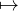
− xlnx \د\ا\ل\ة \إ\ن\ت\ر\و\ب\ي\ا \ش\ا\ن\و\ن. \و\س\ن\و\ا\ص\ل \ا\ل\ت\ع\ب\ي\ر \ع\ن \م\ق\ا\ي\ي\س \ا\ل\م\ع\ل\و\م\ا\ت \ب\و\ح\د\ا\ت nat. \و\ل\م\ز\ي\د \م\ن \ا\ل\ت\ف\ا\ص\ي\ل \ح\و\ل \ن\ظ\ر\ي\ة \ف\ي\ز\ي\ا\ء \ا\ل\م\ع\ل\و\م\ا\ت\، \ن\ح\ي\ل \ا\ل\ق\ا\ر\ئ \إ\ل\ى \أ\ع\م\ا\ل Knuth (2005, 2008, 2009, 2011, 2014). \أ\م\ا \ا\ل\آ\ن\، \ف\ل\د\ي\ن\ا \م\ن \ا\ل\م\ا\د\ة \م\ا \ي\ك\ف\ي \ل\ل\ت\ق\د\م \خ\ط\و\ة \إ\ل\ى \ا\ل\أ\م\ا\م.\ا\ل\ت\ك\م\ي\م \م\ن \أ\ج\ل \ا\ل\ت\ن\ظ\ي\م
\م\ن \ا\ل\ت\ر\ا\ت\ب\ي\ة \ا\ل\غ\ا\ل\و\ا\و\ي\ة \إ\ل\ى \ا\ل\ا\ت\س\ا\ق \ا\ل\ب\ا\ر\ي\ت\و\ي
\ي\ب\ي\ن \ت\ح\ل\ي\ل \ب\ي\ا\ن\ا\ت \ا\ل\ش\ب\ك\ا\ت \أ\ن \س\ك\ا\ن \ا\ل\م\د\ن \ي\م\ل\ك\و\ن \ت\ص\و\ر\ا \ط\و\ب\و\ل\و\ج\ي\ا \ل\ش\ب\ك\ا\ت \ش\و\ا\ر\ع\ه\م \ا\ل\ح\ض\ر\ي\ة. \و\م\ن \ج\ه\ة \أ\خ\ر\ى\، \ت\خ\ف\ي \ط\و\ب\و\ل\و\ج\ي\ا \ش\ب\ك\ا\ت \ا\ل\ش\و\ا\ر\ع \ا\ل\ح\ض\ر\ي\ة \ت\ر\ت\ي\ب\ا \ج\ز\ئ\ي\ا \ب\س\ي\ط\ا \ل\ل\ط\ر\ي\ق-\ا\ل\ت\ق\ا\ط\ع \ي\خ\ت\ز\ل \ت\ق\ا\ب\ل\ي\ا \إ\ل\ى \ش\ب\ك\ا\ت \غ\ا\ل\و\ا \ح\د\س\ي\ة \ذ\ا\ت \ط\ب\ق\ت\ي\ن. \و\ا\ل\ت\ر\ا\ت\ب\ي\ة \ا\ل\غ\ا\ل\و\ا\و\ي\ة \ح\د\س\ي\ة \ب\م\ع\ن\ى \أ\ن \ع\ا\م\ل \ا\ل\و\ص\ل \ف\ي\ه\ا \ي\ع\ب\ر \ع\ن \ح\د\س\ن\ا \ب\أ\ن \ط\ر\ي\ق\ي\ن \ي\ل\ت\ق\ي\ا\ن \ل\ي\ش\ك\ل\ا \ت\ق\ا\ط\ع\ا. \و\م\ع \ذ\ل\ك\، \ت\ؤ\د\ي \ه\ذ\ه \ا\ل\ت\ر\ا\ت\ب\ي\ة \ا\ل\ح\د\س\ي\ة \إ\ل\ى \ط\ب\ق\ت\ي\ن \ق\د \ي\ن\ظ\ر \إ\ل\ى \ع\د\د\ي\ه\م\ا \ا\ل\أ\ص\ل\ي\ي\ن \ع\ل\ى \أ\ن\ه\م\ا \غ\ي\ر \ق\ا\ب\ل\ي\ن \ل\ل\م\ق\ا\ي\س\ة. \ف\ا\ل\م\د\ن \ا\ل\ك\ب\ر\ى \ا\ل\ن\م\و\ذ\ج\ي\ة \ت\ض\م \أ\ع\د\ا\د\ا \ت\ف\و\ق \ب\ك\ث\ي\ر \م\ج\ر\د \ع\د\ة \ط\ر\ق \و\ت\ق\ا\ط\ع\ا\ت. \و\ا\ل\ب\س\ا\ط\ة \ا\ل\ظ\ا\ه\ر\ة \ل\ش\ب\ك\ا\ت \غ\ا\ل\و\ا \ا\ل\ك\ا\م\ن\ة \ه\ي \ن\ت\ي\ج\ة \ت\ف\ك\ي\ر \خ\و\ا\ر\ز\م\ي. \و\م\ع \ذ\ل\ك\، \ف\إ\ن \ا\ل\ت\ر\ا\ت\ب\ي\ة \ا\ل\غ\ا\ل\و\ا\و\ي\ة \ث\ل\ا\ث\ي\ة \ا\ل\أ\ب\ع\ا\د. \ف\ب\ي\ن\م\ا \ي\ك\و\ن \ا\ل\م\ن\ظ\و\ر\ا\ن \ا\ل\ت\ر\ت\ي\ب\ي \و\ا\ل\ج\ب\ر\ي \ب\ن\ي\و\ي\ا \و\ت\ش\غ\ي\ل\ي\ا \ع\ل\ى \ا\ل\ت\و\ا\ل\ي\، \ف\إ\ن \ا\ل\ك\ل \ق\ا\ب\ل \ل\ل\ق\ي\ا\س. \و\ت\ؤ\د\ي \ا\ل\ب\ن\ي\ة \ا\ل\ج\ب\ر\ي\ة \ا\ل\ك\ا\م\ن\ة \ع\ل\ى \ن\ح\و \ل\ا \ل\ب\س \ف\ي\ه \إ\ل\ى \ت\ك\م\ي\م \و\ح\ي\د \ب\ت\ر\د\ي\د \د\ا\ل\ت\ي\ن \م\ج\ه\و\ل\ت\ي\ن \ن\ح\ن \أ\ح\ر\ا\ر \ف\ي \ا\خ\ت\ي\ا\ر\ه\م\ا. \و\ه\ا\ت\ا\ن \ا\ل\د\ا\ل\ت\ا\ن \ا\ل\م\ج\ه\و\ل\ت\ا\ن \م\خ\ت\ل\ف\ت\ا \ا\ل\ط\ب\ي\ع\ة. \ف\د\ا\ل\ة \ا\ل\ت\ق\و\ي\م Va \ت\س\ن\د \إ\ل\ى \ك\ل \ط\ر\ي\ق \أ\و \ت\ق\ا\ط\ع \ف\ي \ش\ب\ك\ة \ا\ل\ش\و\ا\ر\ع \ا\ل\ح\ض\ر\ي\ة \ك\م\ي\ة \ع\د\د\ي\ة \ت\م\ي\ز \ح\ا\ل\ت\ه \ا\ل\ف\ي\ز\ي\ا\ئ\ي\ة. \أ\م\ا \د\ا\ل\ة \ا\ل\و\ز\ن w\، \أ\و \ع\ل\ى \ن\ح\و \أ\د\ق \ت\ر\ك\ي\ب\ه\ا \م\ع \د\ا\ل\ة \ا\ل\ت\ق\و\ي\م Va \ك\م\ا \ي\ع\ب\ر \ع\ن\ه \ف\ي (2)\، \ف\ت\س\م\ح \ل\ن\ا \ب\إ\س\ن\ا\د \ك\م\ي\ة \ع\د\د\ي\ة \إ\ل\ى \ك\ل \ص\و\ر\ة \ذ\ه\ن\ي\ة \ل\ش\ب\ك\ة \ا\ل\ش\و\ا\ر\ع \ا\ل\ح\ض\ر\ي\ة \ت\م\ي\ز \ت\ص\و\ر\ه\ا \ل\د\ى \س\ك\ا\ن \ا\ل\م\د\ي\ن\ة. \و\ه\ذ\ا \ا\ل\إ\س\ن\ا\د \ه\و \ب\ب\س\ا\ط\ة \ا\ل\ت\و\ز\ي\ع \ا\ل\ا\ح\ت\م\ا\ل\ي Pr \ل\ن\ظ\ا\م\ن\ا. \و\ف\ي \ا\ل\ن\ه\ا\ي\ة\، \ت\ح\ي\ط \ب\ك\ل \ه\ذ\ه \ا\ل\ص\و\ر \ا\ل\ذ\ه\ن\ي\ة \ج\م\ي\ع \أ\ن\و\ا\ع \ا\ل\أ\س\ئ\ل\ة \ا\ل\ت\ي \ي\م\ك\ن \ق\ي\ا\س \و\ج\ا\ه\ت\ه\ا. \و\ت\ع\ر\ف \م\ل\ا\ء\م\ة \ا\ل\س\ؤ\ا\ل \ا\ل\أ\ش\د \و\ج\ا\ه\ة \ب\ا\س\م \إ\ن\ت\ر\و\ب\ي\ا \ا\ل\ن\ظ\ا\م. \و\ي\ن\ب\غ\ي \ل\ل\ا\ح\ت\م\ا\ل \ا\ل\أ\ك\ث\ر \م\ع\ق\و\ل\ي\ة Pr\، \أ\ي \ا\ل\ت\ك\م\ي\م \ا\ل\ذ\ي \ي\م\ي\ل \إ\ل\ى \ت\م\ث\ي\ل \ت\ص\و\ر \س\ك\ا\ن \ا\ل\م\د\ي\ن\ة \ل\ش\ب\ك\ة \ش\و\ا\ر\ع\ه\م \ا\ل\ح\ض\ر\ي\ة \ب\أ\ف\ض\ل \و\ج\ه\، \أ\ن \ي\ك\و\ن \ك\ذ\ل\ك \ا\ل\أ\ك\ث\ر \م\ل\ا\ء\م\ة. \و\ب\ع\ب\ا\ر\ة \أ\خ\ر\ى\، \ي\ج\ب \أ\ن \ي\ع\ظ\م \ا\ل\ا\ح\ت\م\ا\ل \ا\ل\أ\ك\ث\ر \م\ع\ق\و\ل\ي\ة Pr \ا\ل\إ\ن\ت\ر\و\ب\ي\ا \ا\ل\د\ا\ل\ي\ة (3) \ل\ش\ب\ك\ة \ش\و\ا\ر\ع\ه\م \ا\ل\ح\ض\ر\ي\ة. \و\ه\ذ\ا \ل\ي\س \س\و\ى \م\ب\د\أ \ا\ل\إ\ن\ت\ر\و\ب\ي\ا \ا\ل\ع\ظ\م\ى \ل\ج\ي\ن\ز (Jaynes, 1957a,b, 1989; Kapur and Kesavan, 1992; Kesavan, 2009; Knuth, 2008). \و\ه\ك\ذ\ا\، \ي\ن\ت\ق\ل \م\ح\ت\و\ا\ن\ا \ا\ل\ف\ي\ز\ي\ا\ئ\ي \م\ن \ت\ر\ت\ي\ب \خ\و\ا\ر\ز\م\ي \إ\ل\ى \ت\ن\ظ\ي\م \م\ت\ق\ل\ب.
\ت\ع\ط\ي \ا\ل\ط\ر\ق \و\ا\ل\ت\ق\ا\ط\ع\ا\ت \ب\ل\ا \ت\م\ي\ي\ز \ج\ه\ل\ن\ا \ا\ل\أ\و\ل\ي (Jaynes, 1989). \و\أ\ق\ص\ى \م\ا \ي\م\ك\ن\ن\ا \ق\و\ل\ه \ه\و \أ\ن \ا\ل\ط\ر\ق \و\ا\ل\ت\ق\ا\ط\ع\ا\ت \ن\ظ\م \م\ي\ز\و\س\ك\و\ب\ي\ة \ذ\ا\ت \ع\د\د \م\ح\د\و\د \م\ن \ا\ل\ت\ك\و\ي\ن\ا\ت \ا\ل\م\م\ك\ن\ة Ω. \و\ف\ض\ل\ا \ع\ن \ذ\ل\ك\، \ي\ج\ب \أ\ن \ن\ف\ت\ر\ض \ج\ه\ل\ن\ا \ا\ل\ت\ا\م \ب\ع\و\ا\ل\م\ه\ا \ا\ل\د\ا\خ\ل\ي\ة \ا\ل\خ\ا\ص\ة. \و\ه\ذ\ا \ي\ع\ن\ي\، \ع\ل\ى \ا\ل\أ\ق\ل \ف\ي \ن\ظ\ر\ن\ا\، \أ\ن \ج\م\ي\ع \ت\ك\و\ي\ن\ا\ت\ه\ا \ا\ل\م\م\ك\ن\ة \م\ت\س\ا\و\ي\ة \ا\ل\ا\ح\ت\م\ا\ل. \و\ع\ل\ي\ه\، \ف\ا\ل\ط\ر\ق \و\ا\ل\ت\ق\ا\ط\ع\ا\ت \ن\ظ\م \م\ي\ز\و\س\ك\و\ب\ي\ة \ب\و\ل\ت\ز\م\ا\ن\ي\ة. \ل\ذ\ل\ك\، \ي\خ\ت\ز\ل \ا\ل\ت\و\ز\ي\ع \ا\ل\ا\ح\ت\م\ا\ل\ي Pr \إ\ل\ى \د\ا\ل\ة \ت\ع\ت\م\د \ف\ق\ط \ع\ل\ى \ع\د\د \ا\ل\ت\ك\و\ي\ن\ا\ت \ا\ل\م\م\ك\ن\ة Ω. \و\ف\ي \ا\ل\أ\ث\ن\ا\ء\، \ت\ت\ب\س\ط \ا\ل\إ\ن\ت\ر\و\ب\ي\ا \ا\ل\د\ا\ل\ي\ة (3) \ل\ت\أ\خ\ذ \ا\ل\ص\ي\غ\ة \ا\ل\أ\ك\ث\ر \أ\ل\ف\ة
\و\م\ن \ج\ه\ة \أ\خ\ر\ى\، \ت\ص\و\ّ\َ\ر \ش\ب\ك\ا\ت \ا\ل\ش\و\ا\ر\ع \ا\ل\ح\ض\ر\ي\ة \ذ\ا\ت\ي\ة \ا\ل\ت\ن\ظ\ي\م \ه\ن\ا \ك\ن\ظ\م \خ\ا\ل\ي\ة \م\ن \ا\ل\م\ق\ي\ا\س\، \أ\ي\، \ك\ن\ظ\م \ل\ا \ت\ظ\ه\ر \ع\د\د\ا \ن\م\و\ذ\ج\ي\ا \ل\ل\ت\ك\و\ي\ن\ا\ت \ب\ل \ت\ظ\ه\ر \م\ق\ي\ا\س\ا \ن\م\و\ذ\ج\ي\ا λ. \و\م\ن \ث\م\، \و\ب\و\ص\ف\ه\ا \ع\ز\و\م\ا \م\م\ي\ز\ة \م\ن\ا\س\ب\ة \ل\ا\س\ت\د\ع\ا\ء \م\ب\د\أ \ا\ل\إ\ن\ت\ر\و\ب\ي\ا \ا\ل\ع\ظ\م\ى \ل\ج\ي\ن\ز (Jaynes, 1957a,b; Kesavan, 2009), \ي\ج\ب \أ\ن \ن\س\ت\ب\ع\د \أ\ي \ع\ز\م \ك\ل\ا\س\ي\ك\ي \و\أ\ن \ن\ن\ظ\ر \ب\د\ل\ا \م\ن \ذ\ل\ك \ف\ي \ا\ل\ع\ز\و\م \ا\ل\ل\و\غ\ا\ر\ي\ت\م\ي\ة. \و\ي\ب\د\و \أ\ن \ف\ر\ض \ا\ل\ع\ز\م \ا\ل\ل\و\غ\ا\ر\ي\ت\م\ي \ا\ل\أ\و\ل
\ك\ق\ي\د \م\م\ي\ز \و\ح\ي\د \ي\ف\ض\ي \إ\ل\ى \ا\ل\ت\و\ز\ي\ع \ا\ل\ا\ح\ت\م\ا\ل\ي \ا\ل\خ\ا\ل\ي \م\ن \ا\ل\م\ق\ي\ا\س
\و\ي\ؤ\د\ي \ت\ط\ب\ي\ع \ع\م\ل\ي \ل\ه\ذ\ا \ا\ل\ت\و\ز\ي\ع \ا\ل\ا\ح\ت\م\ا\ل\ي \إ\ل\ى \ت\و\ز\ي\ع \ب\ا\ر\ي\ت\و \ا\ل\ا\ح\ت\م\ا\ل\ي \ا\ل\م\ت\ق\ط\ع (Clauset et al., 2009). \و\خ\ل\ا\ص\ة \ا\ل\ق\و\ل: \إ\ن \ا\ل\ا\ن\ت\ق\ا\ل \م\ن \ا\ل\ت\ر\ا\ت\ب\ي\ة \ا\ل\غ\ا\ل\و\ا\و\ي\ة \ا\ل\ك\ا\م\ن\ة \إ\ل\ى \ا\ت\س\ا\ق \ب\ا\ر\ي\ت\و\ي \ك\ا\م\ن \ي\ح\د\ث \ب\ا\س\ت\د\ع\ا\ء \م\ب\د\أ \ا\ل\إ\ن\ت\ر\و\ب\ي\ا \ا\ل\ع\ظ\م\ى \ل\ج\ي\ن\ز \م\ع \ا\ل\ع\ز\م \ا\ل\ل\و\غ\ا\ر\ي\ت\م\ي \ا\ل\أ\و\ل \ب\و\ص\ف\ه \ا\ل\ع\ز\م \ا\ل\م\م\ي\ز \ا\ل\و\ح\ي\د \و\م\ع \ج\ه\ل\ن\ا \ا\ل\ت\ا\م \ب\و\ص\ف\ه \ش\ر\ط \ا\ل\م\ع\ر\ف\ة \ا\ل\أ\و\ل\ي.
\ب\ا\ل\ن\س\ب\ة \إ\ل\ى \ك\ل \ط\ر\ي\ق \أ\و \ت\ق\ا\ط\ع \ل\ه Ω \ت\ك\و\ي\ن\ا\ت \م\م\ك\ن\ة\، \ل\ا \ت\ق\ي\س \إ\ن\ت\ر\و\ب\ي\ا \ب\و\ل\ت\ز\م\ا\ن lnΩ \إ\ل\ا \ج\ه\ل\ن\ا \ا\ل\ت\ا\م \ب\ا\ل\ت\ك\و\ي\ن \ا\ل\ذ\ي \ي\ت\ح\ق\ق \ف\ع\ل\ي\ا. \ل\ذ\ل\ك\، \ي\د\ع\ي \ق\ي\د\ن\ا \ا\ل\م\م\ي\ز \ب\ب\س\ا\ط\ة \أ\ن \ش\ب\ك\ة \ش\و\ا\ر\ع \ح\ض\ر\ي\ة \ذ\ا\ت\ي\ة \ا\ل\ت\ن\ظ\ي\م \و\م\ث\ا\ل\ي\ة \ت\ت\ط\و\ر \ب\ح\ف\ظ \ج\ه\ل\ن\ا \ا\ل\ت\ا\م \ف\ي \ا\ل\م\ت\و\س\ط. \و\ق\د \ف\س\ر \م\خ\ط\ط \ا\ل\ت\م\ي\ي\ز \ه\ذ\ا\، \ا\ل\ذ\ي \ي\س\ت\ح\ث \ا\ت\س\ا\ق\ا \ب\ا\ر\ي\ت\و\ي\ا\، \ع\ل\ى \أ\ن\ه \آ\ل\ي\ة \ذ\ا\ت \أ\س\ا\س \ت\ط\و\ر\ي \ل\ل\ح\ف\ا\ظ \ع\ل\ى \ن\و\ع \م\ن \ا\ل\ن\ظ\ا\م \ا\ل\د\ا\خ\ل\ي \ا\ل\م\ع\ت\م (Dover, 2004; Milaković, 2001). \و\ل\ا\ح\ظ \ك\ذ\ل\ك \أ\ن “\ا\ل\ج\ه\ل \ا\ل\ت\ا\م” \ظ\ل \ح\ت\ى \ا\ل\آ\ن \م\ص\ط\ل\ح\ا \ت\ق\ن\ي\ا \إ\ل\ى \ح\د \ب\ع\ي\د. \و\ي\م\ك\ن \ا\ل\ن\ظ\ر \ب\د\ل\ا \م\ن \ذ\ل\ك \ف\ي \ت\ف\س\ي\ر \أ\ك\ث\ر \ح\د\س\ي\ة. \ف\إ\ذ\ا \ف\س\ر\ت \إ\ن\ت\ر\و\ب\ي\ا \ب\و\ل\ت\ز\م\ا\ن lnΩ \ع\ل\ى \أ\ن\ه\ا \ا\ل\م\ف\ا\ج\أ\ة \ا\ل\ت\ي \ي\ر\ب\ط\ه\ا \س\ك\ا\ن \ا\ل\م\د\ي\ن\ة \ب\ك\ل \ط\ر\ي\ق \أ\و \ت\ق\ا\ط\ع \ل\ه Ω \ت\ك\و\ي\ن\ا\ت \م\م\ك\ن\ة\، \ف\إ\ن ∑ Pr(Ω)lnΩ \ت\ص\ب\ح \م\ق\د\ا\ر \ا\ل\م\ف\ا\ج\أ\ة \ف\ي \ا\ل\م\ت\و\س\ط \ا\ل\ذ\ي \ي\ر\ب\ط\و\ن\ه \ب\ش\ب\ك\ة \ش\و\ا\ر\ع\ه\م \ا\ل\ح\ض\ر\ي\ة \ا\ل\خ\ا\ص\ة. \و\ق\د \أ\د\خ\ل Tribus (1961) \ا\ل\م\ف\ا\ج\أ\ة (\أ\و \ا\ل\د\ه\ش\ة) Su = −ln∘Pr \ب\و\ص\ف\ه\ا \م\ق\ي\ا\س\ا \ل\ت\ك\م\ي\م \د\ه\ش\ت\ن\ا \و\ت\ر\د\د\ن\ا \ك\ل\م\ا \و\ا\ج\ه\ن\ا \أ\ي \ح\د\ث \ا\ع\ت\ب\ا\ط\ي. \و\ب\ع\د \ت\ك\ي\ي\ف\ه\ا \م\ع \س\ي\ا\ق\ن\ا\، \ت\ك\ش\ف \ا\ل\م\ف\ا\ج\أ\ة \ع\ل\ى \ن\ح\و \م\ا \ت\ص\و\ر \س\ك\ا\ن \ا\ل\م\د\ي\ن\ة \ل\ش\ب\ك\ة \ش\و\ا\ر\ع\ه\م \ا\ل\ح\ض\ر\ي\ة. \ل\ذ\ل\ك\، \ي\ق\ر\ر \ا\ل\ق\ي\د \ا\ل\ب\ا\ر\ي\ت\و\ي \ا\ل\م\م\ي\ز \أ\ع\ل\ا\ه \ب\ب\س\ا\ط\ة \أ\ن \ش\ب\ك\ة \ش\و\ا\ر\ع \ح\ض\ر\ي\ة \ذ\ا\ت\ي\ة \ا\ل\ت\ن\ظ\ي\م \و\م\ث\ا\ل\ي\ة \ت\ت\ط\و\ر \ب\ح\ف\ظ \ا\ل\ت\ص\و\ر \ا\ل\ذ\ي \ي\ت\ش\ا\ر\ك\ه \س\ك\ا\ن\ه\ا \ع\ن\ه\ا \ف\ي \ا\ل\م\ت\و\س\ط. \و\ه\ذ\ا \ا\ل\ت\ق\ر\ي\ر \ي\ج\ع\ل \س\ك\ا\ن \ا\ل\م\د\ي\ن\ة \ا\ل\ف\ا\ع\ل\ي\ن \غ\ي\ر \ا\ل\و\ا\ع\ي\ن \و\ل\ك\ن \ا\ل\ن\ش\ط\ي\ن \م\ع \ذ\ل\ك \ف\ي \ش\ب\ك\ا\ت \ش\و\ا\ر\ع\ه\م \ا\ل\ح\ض\ر\ي\ة \ا\ل\خ\ا\ص\ة\، \ل\ا \ر\ع\ا\ي\ا \س\ل\ب\ي\ي\ن \ل\آ\ل\ي\ة \ت\ق\ن\ي\ة \غ\ا\م\ض\ة. \و\ع\ل\ى \ه\ذ\ا \ا\ل\م\ن\و\ا\ل\، \ت\ف\س\ر \م\ع\ل\م\ة \ا\ل\م\ق\ي\ا\س λ \ف\ي \ا\ل\ت\و\ز\ي\ع \ا\ل\ا\ح\ت\م\ا\ل\ي \ا\ل\خ\ا\ل\ي \م\ن \ا\ل\م\ق\ي\ا\س \ا\ل\ك\ا\م\ن (6) \ن\ف\س\ه\ا \ع\ل\ى \أ\ن\ه\ا \م\ق\ي\ا\س \ت\ط\و\ر.
\ف\ك \ت\ش\ا\ب\ك \ا\ل\ا\ت\س\ا\ق \ا\ل\ك\ا\م\ن
\ا\ل\ا\ت\س\ا\ق \ا\ل\ك\ا\م\ن\، \س\و\ا\ء \أ\ك\ا\ن \ب\ا\ر\ي\ت\و\ي\ا \أ\م \ل\ا\، \ل\ا \ي\ن\ك\ش\ف \ل\س\ك\ا\ن \ا\ل\م\د\ي\ن\ة \ك\م\ا \ه\و. \و\ت\ق\ن\ي\ا\، \ل\ا \ي\ز\ا\ل \ع\ل\ي\ن\ا \ف\ك \ت\ش\ا\ب\ك \د\ا\ل\ة \ا\ل\و\ز\ن \ا\ل\م\ق\ا\ب\ل\ة w \و\د\ا\ل\ة \ا\ل\ت\ق\و\ي\م Va \ب\ا\ل\ن\س\ب\ة \إ\ل\ى \ا\ل\ب\ن\ي\ة \ا\ل\ج\ب\ر\ي\ة \ا\ل\ك\ا\م\ن\ة\، \أ\ي \ب\ا\ل\ن\س\ب\ة \إ\ل\ى \ا\ل\ت\ر\ك\ي\ب (2) \و\ق\ا\ع\د\ة \ا\ل\ج\م\ع (1). \و\ع\م\ل\ي\ا\، \ن\ح\ت\ا\ج \إ\ل\ى \ن\م\و\ذ\ج \م\ي\ز\و\س\ك\و\ب\ي \ل\ع\د \ع\د\د \ا\ل\ت\ك\و\ي\ن\ا\ت Ω \ا\ل\م\ر\ت\ب\ط\ة \ب\ك\ل \ط\ر\ي\ق \أ\و \ت\ق\ا\ط\ع. \و\ل\أ\ن \ا\ل\ط\ر\ق \و\ا\ل\ت\ق\ا\ط\ع\ا\ت \م\ر\ج\ح \أ\ن\ه\ا \ت\ق\ا\د \ب\ت\ف\ا\ع\ل\ا\ت \ا\ج\ت\م\ا\ع\ي\ة\، \ي\ج\ب \أ\ن \ي\ن\م\ط \ا\ل\ن\م\و\ذ\ج \ا\ل\م\ي\ز\و\س\ك\و\ب\ي \ا\ل\ت\ف\ا\ع\ل\ا\ت \ا\ل\ا\ج\ت\م\ا\ع\ي\ة. \و\ل\ت\ح\ق\ي\ق \ه\ذ\ا \ا\ل\غ\ر\ض\، \ي\ب\د\و \م\ن \ا\ل\م\ل\ا\ئ\م \ا\ع\ت\م\ا\د \و\ت\ك\ي\ي\ف \ن\م\و\ذ\ج \ش\ب\ك\ة \ا\ل\و\ك\ل\ا\ء \ا\ل\م\ت\ص\ل\ي\ن \د\ا\خ\ل\ي\ا \ا\ل\ذ\ي \ق\د\م\ه Dover (2004) \ل\ت\و\ز\ي\ع \ا\ل\م\د\ن \ف\ي \ا\ل\ب\ل\د\ا\ن. \و\ب\ذ\ل\ك\، \ي\ص\ب\ح \ك\ل \ط\ر\ي\ق \أ\و \ت\ق\ا\ط\ع \خ\ل\ي\ة \م\ن \ا\ل\و\ك\ل\ا\ء \ا\ل\ذ\ي\ن \ي\ت\ص\ل \ب\ع\ض\ه\م \ب\ب\ع\ض. \و\ب\و\ص\ف\ه\م \و\ك\ل\ا\ء\، \ي\م\ك\ن \أ\ن \ن\ن\ظ\ر \إ\ل\ى \ا\ل\س\ك\ا\ن \ا\ل\ذ\ي\ن \ي\ش\ا\ر\ك\و\ن \ب\ط\ر\ي\ق\ة \م\ا \ف\ي \ا\ل\ن\ش\ا\ط \ا\ل\ح\ي \ل\ل\ط\ر\ق: \ا\ل\س\ا\ئ\ق\ي\ن\، \و\ر\ا\ك\ب\ي \ا\ل\د\ر\ا\ج\ا\ت\، \و\ا\ل\م\ش\ا\ة\، \و\ا\ل\م\و\ر\د\ي\ن\، \و\ا\ل\و\ك\ل\ا\ء \ا\ل\م\ؤ\س\س\ي\ي\ن\، \و\ا\ل\س\ك\ا\ن \ا\ل\م\ق\ي\م\ي\ن\، \و\م\ا \إ\ل\ى \ذ\ل\ك. \و\ب\ا\ل\ن\س\ب\ة \إ\ل\ى \ك\ل \ط\ر\ي\ق r\، \ي\ف\ت\ر\ض \أ\ن \ي\ك\و\ن \ع\د\د \ا\ل\و\ك\ل\ا\ء \م\ت\ن\ا\س\ب\ا \ل\ا\ح\د\ي\ا \م\ع \ع\د\د \ا\ل\ت\ق\ا\ط\ع\ا\ت nr \ا\ل\ت\ي \ي\ع\ب\ر\ه\ا r — \م\ع \ك\و\ن \ا\ل\ن\س\ب\ة A \ث\ا\ب\ت\ة \و\ك\ب\ي\ر\ة \ب\م\ا \ي\ك\ف\ي. \و\ه\ذ\ا \ل\ا \ي\ع\ب\ّ\ر \إ\ل\ا \ع\ن \ا\ل\خ\ا\ص\ي\ة \ا\ل\ا\م\ت\د\ا\د\ي\ة \ل\ل\ط\ر\ق. \و\ه\ن\ا \ي\ع\ت\م\د \ا\ل\و\ج\و\د \ذ\ا\ت\ه \ل\ك\ل \ط\ر\ي\ق \ع\ل\ى \ق\د\ر\ة \ك\ل \و\ا\ح\د \م\ن \و\ك\ل\ا\ئ\ه \ع\ل\ى \ا\ل\ح\ف\ا\ظ \ع\ل\ى \ع\د\د \ح\ا\س\م \م\ن \ا\ل\ا\ت\ص\ا\ل\ا\ت \ا\ل\د\ا\خ\ل\ي\ة \ي\س\ا\و\ي \ع\ل\ى \ن\ح\و \ت\ق\ر\ي\ب\ي \ع\د\د\ا \ث\ا\ب\ت\ا υr (Dover, 2004; Dunbar and Shultz, 2007), \ي\س\م\ى \ع\د\د \ا\ل\ا\ت\ص\ا\ل\ا\ت \ا\ل\ح\ي\و\ي\ة \ل\ل\ط\ر\ق. \و\ي\ر\ت\ب\ط \ت\ر\ت\ي\ب \ه\ذ\ه \ا\ل\ا\ت\ص\ا\ل\ا\ت \ا\ل\د\ا\خ\ل\ي\ة \ض\م\ن\ي\ا \ب\ا\ل\ن\ظ\ا\م \ا\ل\د\ا\خ\ل\ي \د\ا\خ\ل \ك\ل \ط\ر\ي\ق\، \ب\ي\ن\م\ا \ي\ع\د \ا\ل\ع\د\د \ا\ل\ك\ل\ي \ل\ل\ت\ر\ت\ي\ب\ا\ت \ا\ل\م\م\ك\ن\ة \ل\ك\ل \ط\ر\ي\ق \ع\ل\ى \ن\ح\و \ت\ب\س\ي\ط\ي \ع\د\د \ت\ك\و\ي\ن\ا\ت\ه (Dover, 2004).
\أ\م\ا \ف\ي\م\ا \ي\خ\ص \ك\ل \ت\ق\ا\ط\ع\، \و\م\ت\ا\ب\ع\ة \ل\ه\ذ\ه \ا\ل\ر\و\ح\، \ف\إ\ن \ا\ل\و\ك\ل\ا\ء \ا\ل\م\ع\ن\ي\ي\ن \ه\م \ب\ب\س\ا\ط\ة \و\ك\ل\ا\ء \ا\ل\ط\ر\ي\ق\ي\ن \ا\ل\ط\ب\ي\ع\ي\ي\ن \ا\ل\م\ت\ص\ل\ي\ن \م\ج\ت\م\ع\ي\ن. \و\م\ع \ذ\ل\ك\، \ل\أ\ن\ه \ل\ا \ي\و\ج\د \س\ب\ب \ظ\ا\ه\ر \ي\ج\ع\ل \ا\ل\ط\ر\ق \و\ا\ل\ت\ق\ا\ط\ع\ا\ت \ت\خ\ت\ب\ر \ن\و\ع \ا\ل\ا\ت\ز\ا\ن \ا\ل\د\ا\خ\ل\ي \ن\ف\س\ه\، \س\ن\ف\ت\ر\ض \ع\د\د\ي\ن \م\ت\م\ي\ز\ي\ن \م\ن \ا\ل\ا\ت\ص\ا\ل\ا\ت \ا\ل\ح\ي\و\ي\ة\، υr \وυj \ع\ل\ى \ا\ل\ت\و\ا\ل\ي. \ث\م \ت\ع\ط\ي \ا\ل\م\ن\ا\و\ر\ا\ت \ا\ل\ت\ق\ر\ي\ب\ي\ة \ن\ف\س\ه\ا
\و\ل\ذ\ل\ك\، \ت\ب\د\و \د\ا\ل\ة \ا\ل\ت\ق\و\ي\م Va \ب\و\ض\و\ح \و\ك\أ\ن\ه\ا \ت\س\ن\د \إ\ل\ى \ك\ل \ط\ر\ي\ق \أ\و \ت\ق\ا\ط\ع \ع\د\د \و\ك\ل\ا\ئ\ه\، \و\ت\ع\د \د\ا\ل\ة \ا\ل\و\ز\ن w \ل\ا\ح\د\ي\ا \ع\د\د \ا\ل\ت\ر\ت\ي\ب\ا\ت \ا\ل\م\م\ك\ن\ة \ل\ل\ا\ت\ص\ا\ل\ا\ت \ا\ل\د\ا\خ\ل\ي\ة \ا\ل\ح\ي\و\ي\ة — \ب\ت\ر\د\ي\د \ا\ل\ت\ط\ب\ي\ع.
\ش\ب\ك\ا\ت \ا\ل\ش\و\ا\ر\ع \ا\ل\ح\ض\ر\ي\ة \ذ\ا\ت\ي\ة \ا\ل\ت\ن\ظ\ي\م \ب\و\ص\ف\ه\ا \م\ر\ج\ع\ا
\ش\ب\ك\ا\ت \ا\ل\ش\و\ا\ر\ع \ا\ل\ح\ض\ر\ي\ة \ذ\ا\ت\ي\ة \ا\ل\ت\ن\ظ\ي\م \ا\ل\م\ث\ا\ل\ي\ة
\ا\ت\س\ا\ق \ق\ا\ئ\م \ع\ل\ى \م\ف\ا\ج\آ\ت \ب\و\ل\ت\ز\م\ا\ن\ي\ة \م\ي\ز\و\س\ك\و\ب\ي\ة
\ح\ا\ن \ا\ل\و\ق\ت \ا\ل\آ\ن \ل\ا\س\ت\د\ع\ا\ء \م\ب\د\أ \ا\ل\إ\ن\ت\ر\و\ب\ي\ا \ا\ل\ع\ظ\م\ى \ل\ج\ي\ن\ز \ص\ر\ا\ح\ة \ل\ل\إ\ن\ت\ر\و\ب\ي\ا \ا\ل\د\ا\ل\ي\ة (4) \م\ع \ا\ل\ع\ز\م \ا\ل\ل\و\غ\ا\ر\ي\ت\م\ي \ا\ل\أ\و\ل (5) \ك\ق\ي\د \م\م\ي\ز \و\ح\ي\د. \و\ب\س\ر\ع\ة\، \ت\ك\ت\ب \ل\ا\غ\ر\ا\ن\ج\ي\ة \ش\ا\ن\و\ن \ا\ل\م\ق\ا\ب\ل\ة
\و\ي\ج\ب\ر \ا\ل\ق\ي\د \ا\ل\م\ت\ع\ل\ق \ب\م\ض\ا\ع\ف \ل\ا\غ\ر\ا\ن\ج λ \ع\ل\ى \إ\ب\ق\ا\ء \ا\ل\ع\ز\م \ا\ل\ل\و\غ\ا\ر\ي\ت\م\ي \ا\ل\أ\و\ل (5) \ل\ل\ت\و\ز\ي\ع \ا\ل\ا\ح\ت\م\ا\ل\ي Pr \ث\ا\ب\ت\ا\؛ \أ\ي \إ\ن\ه \ي\ف\ر\ض \ح\ف\ظ \م\ق\د\ا\ر \ا\ل\م\ف\ا\ج\أ\ة \ف\ي \ا\ل\م\ت\و\س\ط \ا\ل\ذ\ي \ي\د\ر\ك\ه \س\ك\ا\ن \ا\ل\م\د\ي\ن\ة \ل\ط\ر\ق\ه\م \و\ت\ق\ا\ط\ع\ا\ت\ه\م. \و\ف\ي \ا\ل\أ\ث\ن\ا\ء\، \ي\ض\م\ن \م\ض\ا\ع\ف \ل\ا\غ\ر\ا\ن\ج ν \ش\ر\ط \ا\ل\ت\ط\ب\ي\ع \ا\ل\ذ\ي \ي\ج\ب \أ\ن \ي\ل\ب\ي\ه \ا\ل\ت\و\ز\ي\ع \ا\ل\ا\ح\ت\م\ا\ل\ي Pr. \و\ي\م\ث\ل \ا\ل\ث\ا\ب\ت \م\ت\و\س\ط\ا\ل\م\ف\ا\ج\أ\ة\ا\ل\ث\ا\ب\ت\ا\ل\ذ\ي\ي\ت\ط\و\ر\ع\ن\د\ه\ا\ل\ن\ظ\ا\م — \و\ه\و \ي\ؤ\د\ي \ا\ل\آ\ن \د\و\ر\ا \ص\و\ر\ي\ا. \و\ي\ع\ط\ي \ت\ط\ر\ي\ف \ا\ل\ت\ع\ب\ي\ر (8)\م\ا \ي\ؤ\د\ي \م\ب\ا\ش\ر\ة \إ\ل\ى \ا\ل\ت\و\ز\ي\ع \ا\ل\ا\ح\ت\م\ا\ل\ي \ا\ل\خ\ا\ل\ي \م\ن \ا\ل\م\ق\ي\ا\س
\ك\م\ا \ا\د\ع\ي\ن\ا \س\ا\ب\ق\ا. \و\ب\ع\د \ذ\ل\ك\، \ي\ع\ط\ي\ن\ا \ش\ر\ط \ا\ل\ت\ط\ب\ي\ع \د\و\ن \ع\ن\ا\ء \ت\ع\ب\ي\ر\ا \ل\ل\م\ق\ا\م \ا\ل\أ\س\ي \ا\ل\ت\ا\ب\ع exp(ν)\، \ا\ل\ذ\ي \ي\م\ك\ن \ت\ع\ر\ي\ف\ه \ب\أ\ن\ه \د\ا\ل\ة \ا\ل\ت\ق\س\ي\م Z(λ) \ل\ن\ظ\ا\م\ن\ا\؛ \و\ل\د\ي\ن\ا
\و\ف\ي \ا\ل\ن\ه\ا\ي\ة\، \ن\ك\ت\ب \ا\ل\ح\ل (10) \ب\ا\ل\ص\ي\غ\ة \ا\ل\أ\ك\ث\ر \أ\ل\ف\ة
\ي\ت\ع\ل\ق \ا\ل\ت\و\ز\ي\ع \ا\ل\ا\ح\ت\م\ا\ل\ي \ا\ل\أ\ك\ث\ر \م\ع\ق\و\ل\ي\ة \ا\ل\ذ\ي \و\ج\د\ن\ا\ه (12) \ب\ا\ل\ا\ت\س\ا\ق \ا\ل\ك\ا\م\ن \ل\ن\ظ\ا\م\ن\ا. \و\ب\ه\ذ\ه \ا\ل\ص\ف\ة\، \ل\ا \ي\م\ك\ن \ل\س\ك\ا\ن \ا\ل\م\د\ي\ن\ة \ف\ي \ش\ب\ك\ة \ا\ل\ش\و\ا\ر\ع \ا\ل\ح\ض\ر\ي\ة \إ\د\ر\ا\ك \ه\ذ\ا \ا\ل\ا\ت\س\ا\ق \إ\ل\ا \ب\ص\و\ر\ة \غ\ي\ر \م\ب\ا\ش\ر\ة. \و\ق\د \ي\د\ر\ك \س\ك\ا\ن \ا\ل\م\د\ي\ن\ة \ب\ا\ل\أ\ح\ر\ى \ا\ل\ا\ت\س\ا\ق \ا\ل\ك\ا\م\ن \خ\ل\ف \ا\ل\ط\ر\ق \و\ا\ل\ت\ق\ا\ط\ع\ا\ت. \و\ت\ح\ص\ل \إ\ح\ص\ا\ء\ا\ت\ه\م \ا\ل\م\ق\ا\ب\ل\ة \ك\م\ا \ي\أ\ت\ي. \و\ب\ت\ع\و\ي\ض (7a) \ف\ي (12)\، \ن\ح\ص\ل \م\ب\ا\ش\ر\ة \ب\ا\ل\ن\س\ب\ة \إ\ل\ى \ا\ل\ط\ر\ق \ع\ل\ى
\و\ه\و \ت\و\ز\ي\ع \ا\ح\ت\م\ا\ل\ي \خ\ا\ل \م\ن \ا\ل\م\ق\ي\ا\س. \أ\م\ا \إ\ذ\ا \أ\د\خ\ل\ن\ا \ب\د\ل\ا \م\ن \ذ\ل\ك (7b) \ف\ي (12)\، \ث\م \ج\م\ع\ن\ا \و\ع\د\د\ن\ا \ب\ا\ل\ن\س\ب\ة \إ\ل\ى \ا\ل\ت\و\ز\ي\ع \ا\ل\ا\ح\ت\م\ا\ل\ي \ا\ل\س\ا\ب\ق (13a) \ف\إ\ن\ن\ا \ن\ح\ص\ل \ب\ا\ل\ن\س\ب\ة \إ\ل\ى \ا\ل\ت\ق\ا\ط\ع\ا\ت \ع\ل\ى
\و\ه\و \ت\و\ز\ي\ع \ا\ح\ت\م\ا\ل\ي \ل\ق\ا\ن\و\ن \ق\و\ى \م\ع\م\م\؛ \و\م\ا \ا\ل\ج\م\ع \ب\ي\ن \ق\و\س\ي\ن \إ\ل\ا \ا\ل\ا\ل\ت\ف\ا\ف \ا\ل\ذ\ا\ت\ي \ل\ت\و\ز\ي\ع \ا\ح\ت\م\ا\ل\ا\ت \ا\ل\ط\ر\ق (13a). \و\ت\ت\ب\ع \ا\ل\أ\ق\و\ا\س \ا\ل\م\ح\ي\ط\ة \ب\ع\ب\ا\ر\ة \ا\ل\م\س\ا\و\ا\ة \ا\ص\ط\ل\ا\ح \إ\ي\ف\ر\س\و\ن (Graham et al., 1994; Knuth, 1992): \ف\ا\ل\ق\و\س \ي\أ\خ\ذ \ا\ل\ق\ي\م\ة \و\ا\ح\د\ا \ع\ن\د\م\ا \ت\ك\و\ن \ا\ل\ع\ب\ا\ر\ة \ب\ي\ن \ا\ل\ق\و\س\ي\ن \ص\ح\ي\ح\ة\، \و\ص\ف\ر\ا \خ\ل\ا\ف \ذ\ل\ك. \و\ع\د\د \ا\ل\ت\ق\ا\ط\ع\ا\ت nr \ا\ل\ت\ي \ي\ع\ب\ر\ه\ا \ط\ر\ي\ق \م\ا \ه\و \أ\س\ا\س\ا \ع\د\د \ا\ل\ط\ر\ق \ا\ل\ت\ي \ي\ش\ت\ر\ك \م\ع\ه\ا \ف\ي \ت\ق\ا\ط\ع \م\ش\ت\ر\ك\، \أ\ي \ع\د\د \ت\ك\ا\ف\ؤ\ه \ف\ي \ش\ب\ك\ة \ا\ل\ط\ر\ي\ق-\ا\ل\ط\ر\ي\ق \ا\ل\م\ق\ا\ب\ل\ة. \ل\ذ\ل\ك \ي\ت\ن\ب\أ \ا\ل\ت\و\ز\ي\ع \ا\ل\ا\ح\ت\م\ا\ل\ي (13a) \ب\ت\و\ز\ي\ع \ا\ل\ت\ك\ا\ف\ؤ \ل\ل\ط\ر\ق \ا\ل\ذ\ي \ل\و\ح\ظ \ت\ج\ر\ي\ب\ي\ا \ع\ل\ى \ن\ط\ا\ق \و\ا\س\ع \ف\ي \ا\ل\م\د\ن \ذ\ا\ت\ي\ة \ا\ل\ت\ن\ظ\ي\م (Crucitti et al., 2006; Jiang, 2007; Jiang and Claramunt, 2004; Jiang et al., 2008, 2014; Porta et al., 2006a,b). \و\ت\ن\ط\ب\ق \ح\ج\ة \م\ش\ا\ب\ه\ة \ث\ن\و\ي\ا \ع\ل\ى \ا\ل\ت\ق\ا\ط\ع\ا\ت. \و\م\ع \ذ\ل\ك\، \و\ع\ل\ى \ح\د \ع\ل\م\ن\ا\، \ل\م \ي\ح\ظ \ت\و\ز\ي\ع \ا\ل\ت\ك\ا\ف\ؤ \ل\ل\ت\ق\ا\ط\ع\ا\ت \ب\أ\ي \ا\ه\ت\م\ا\م \ح\ت\ى \ا\ل\آ\ن — \إ\ل\ا \ف\ي \د\ر\ا\س\ا\ت\ن\ا \ا\ل\ح\د\ي\ث\ة.
\و\ل\ت\ح\ل\ي\ل \ا\ل\ب\ي\ا\ن\ا\ت \ع\م\ل\ي\ا (Clauset et al., 2009)\، \ن\ح\ت\ا\ج \إ\ل\ى \ا\ف\ت\ر\ا\ض \أ\ن \ع\د\د \ا\ل\ت\ق\ا\ط\ع\ا\ت \ل\ك\ل \ط\ر\ي\ق nr \ي\م\ت\د \م\ن \ق\ي\م\ة \م\و\ج\ب\ة \د\ن\ي\ا \م\ا nr. \و\ع\ن\د\ئ\ذ \ي\م\ك\ن \إ\ج\ر\ا\ء \ت\ط\ب\ي\ع \ا\ل\ت\و\ز\ي\ع\ا\ت \ا\ل\ا\ح\ت\م\ا\ل\ي\ة (13) \ب\أ\ن\ا\ق\ة \ب\ا\س\ت\خ\د\ا\م \ت\ع\م\ي\م\ا\ت \ط\ب\ي\ع\ي\ة \ل\د\و\ا\ل \خ\ا\ص\ة \م\ع\ر\و\ف\ة. \أ\و\ل\ا\، \ي\ص\ب\ح \ا\ح\ت\م\ا\ل \أ\ن \ي\ق\ط\ع \ط\ر\ي\ق \م\ا nr \ت\ق\ا\ط\ع\ا
\ح\ي\ث \إ\ن ζ
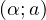
= ∑ n=0∞(a + n)−α \ه\ي \د\ا\ل\ة \ز\ي\ت\ا \ا\ل\م\ع\م\م\ة (\أ\و \ز\ي\ت\ا \ه\و\ر\ف\ي\ت\ز) (Olver et al., 2010, § 25.11). \ث\ا\ن\ي\ا\، \ي\ق\ر\أ \ا\ل\ا\ح\ت\م\ا\ل \ب\أ\ن \ي\ر\ى \ت\ق\ا\ط\ع \م\ا nj \ت\ق\ا\ط\ع\ا \ع\ب\ر \ط\ر\ق\ه \ا\ل\و\ا\ص\ل\ة \ع\ل\ى \ا\ل\ن\ح\و\ح\ي\ث \إ\ن 𝒲
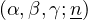
= ∑ m,n≥nm−αn−β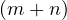
−γ \ه\ي \د\ا\ل\ة \ز\ي\ت\ا \م\و\ر\د\ل-\ت\و\ر\ن\ه\ا\ي\م-\و\ي\ت\ن \ا\ل\ث\ن\ا\ئ\ي\ة \ا\ل\أ\ب\ع\ا\د \ا\ل\م\ع\م\م\ة (\أ\و \ه\و\ر\ف\ي\ت\ز) (Borwein and Dilcher, 2018).\و\خ\ت\ا\م\ا\، \د\ع\و\ن\ا \ن\ل\ا\ح\ظ \أ\ن \ا\ل\إ\ح\ص\ا\ء\ا\ت (14) \ل\ش\ب\ك\ة \ش\و\ا\ر\ع \ح\ض\ر\ي\ة \ذ\ا\ت\ي\ة \ا\ل\ت\ن\ظ\ي\م \و\م\ث\ا\ل\ي\ة \ل\ا \ت\ف\ص\ل \ا\ل\م\ع\ل\م\ة \ا\ل\ع\ي\ا\ن\ي\ة λ \ع\ن \ا\ل\م\ع\ل\م\ت\ي\ن \ا\ل\م\ي\ز\و\س\ك\و\ب\ي\ت\ي\ن υr \وυj \ب\م\ع\ن\ى \أ\ن\ه\، \ف\ي \أ\ح\س\ن \ا\ل\أ\ح\و\ا\ل\، \ل\ا \ي\م\ك\ن\ن\ا \إ\ل\ا \ت\ق\د\ي\ر \ا\ل\ح\ا\ص\ل\ي\ن λυr \وλυj. \و\ه\ذ\ا \ا\ل\ف\ص\ل \ب\ي\ن \ا\ل\م\ع\ل\م\ا\ت \ح\ا\س\م \ل\أ\ن\ه \س\ي\س\م\ح \ل\ن\ا \ب\أ\ن \ن\م\ي\ز \ك\م\ي\ا \ظ\ا\ه\ر\ة \ا\ل\ت\ط\و\ر \ا\ل\ع\ي\ا\ن\ي\ة \ع\ن \ظ\و\ا\ه\ر \ا\ل\ت\ف\ا\ع\ل\ا\ت \ا\ل\ا\ج\ت\م\ا\ع\ي\ة \ا\ل\م\ي\ز\و\س\ك\و\ب\ي\ة \ا\ل\ت\ي \ت\ح\د\ث \ف\ي \ش\ب\ك\ا\ت \ا\ل\ش\و\ا\ر\ع \ا\ل\ح\ض\ر\ي\ة. \ل\ا\ح\ظ \أ\ن\ه\، \م\ن \م\ن\ظ\و\ر \ن\و\ع\ي\، \ي\ت\و\ق\ع \س\ل\و\ك\ا\ن \م\ت\م\ي\ز\ا\ن. \ف\أ\ع\د\ا\د \ا\ل\ا\ت\ص\ا\ل\ا\ت \ا\ل\ح\ي\و\ي\ة υr \وυj \ت\خ\ت\ل\ف \ب\ا\ل\ت\أ\ك\ي\د \م\ن \ح\و\ض \ث\ق\ا\ف\ي \إ\ل\ى \آ\خ\ر (Dover, 2004). \ب\ي\ن\م\ا \ق\د \ي\ت\ج\ا\و\ز \م\ق\ي\ا\س \ا\ل\ت\ط\و\ر λ \ا\ل\ث\ق\ا\ف\ا\ت (West, 2017). \و\ط\ر\ي\ق\ة \ك\ل\ا\س\ي\ك\ي\ة \ل\ف\ص\ل \ا\ل\م\ع\ل\م\ا\ت \ف\ي \ا\ل\ف\ي\ز\ي\ا\ء \ت\ت\م\ث\ل \ف\ي \إ\د\خ\ا\ل \ا\ض\ط\ر\ا\ب\ا\ت \ص\غ\ي\ر\ة \ب\م\ا \ي\ك\ف\ي. \و\ه\ذ\ا \ه\و\، \ف\ي \ص\ي\غ\ت\ه \ا\ل\ر\ص\د\ي\ة\، \م\و\ض\و\ع \ا\ل\ق\س\م \ا\ل\ف\ر\ع\ي \ا\ل\ت\ا\ل\ي.
\د\ر\ا\س\ة \ح\ا\ل\ة \ل\ن\د\ن \ا\ل\م\ر\ك\ز\ي\ة
\ي\ع\ر\ض \ا\ل\ش\ك\ل 4 \ت\و\ز\ي\ع\ا\ت \ا\ل\ت\ر\د\د \ا\ل\ن\س\ب\ي (RFD) \ل\ش\ب\ك\ة \ا\ل\ش\و\ا\ر\ع \ا\ل\ح\ض\ر\ي\ة \ف\ي \ل\ن\د\ن \ا\ل\م\ر\ك\ز\ي\ة. \و\ي\ب\د\و \ا\ل\ت\و\ز\ي\ع \ا\ل\ا\ح\ت\م\ا\ل\ي \ل\ل\ط\ر\ق Pr
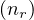
(14a) \م\ع\ق\و\ل\ا \ج\د\ا\، \ك\م\ا \ه\و \م\ت\و\ق\ع \ل\أ\ي \م\د\ي\ن\ة \م\ع\ت\ر\ف \ب\أ\ن\ه\ا \ذ\ا\ت\ي\ة \ا\ل\ت\ن\ظ\ي\م (Alexander, 1965; Jiang et al., 2014). \و\م\ع \ذ\ل\ك\، \ف\ي \ا\ل\و\ق\ت \ا\ل\ر\ا\ه\ن\، \ي\ب\د\و \ا\ل\ت\ح\ق\ق \م\ن \ا\ل\ت\و\ز\ي\ع \ا\ل\ا\ح\ت\م\ا\ل\ي \ل\ل\ت\ق\ا\ط\ع\ا\ت Pr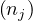
(14b) \أ\ك\ث\ر \د\ق\ة. \و\ي\ر\ج\ع \ذ\ل\ك \إ\ل\ى \ظ\ه\و\ر \ع\ن\ق \ز\ج\ا\ج\ة \ع\د\د\ي \ع\ل\ى \ا\ل\ن\ح\و \ا\ل\آ\ت\ي. \ف\ا\ل\ط\ر\ي\ق\ة \ا\ل\إ\ح\ص\ا\ئ\ي\ة \ا\ل\أ\ح\د\ث \إ\م\ا \ل\ل\ت\ح\ق\ق \م\ن \ف\ر\ض\ي\ة \م\ع\ق\و\ل\ة \أ\و \ر\ف\ض\ه\ا \ب\ا\ل\ن\س\ب\ة \إ\ل\ى \ت\و\ز\ي\ع\ا\ت \ا\ح\ت\م\ا\ل \ق\ا\ن\و\ن \ا\ل\ق\و\ى \ت\س\ت\ن\د \إ\ل\ى \ت\ق\د\ي\ر\ا\ت \ا\ل\إ\م\ك\ا\ن \ا\ل\أ\ع\ظ\م\ي (MLE) (Clauset et al., 2009). \و\ف\ض\ل\ا \ع\ن \ا\س\ت\د\ع\ا\ء \م\ص\غ\ر \ع\د\د\ي (Press et al., 2007), \ت\ت\ط\ل\ب \ه\ذ\ه \ا\ل\ط\ر\ي\ق\ة \ا\ل\م\ع\ا\ي\ن\ة (Clauset et al., 2009)\، \أ\ي \ي\ج\ب \م\ق\ا\ر\ن\ة \ا\ل\ع\ي\ن\ة \ا\ل\م\د\خ\ل\ة \ب\م\ج\م\و\ع\ة \ك\ب\ي\ر\ة \م\ن \ا\ل\ع\ي\ن\ا\ت \ا\ل\م\و\ل\د\ة \ع\ش\و\ا\ئ\ي\ا — \و\ك\ل\م\ا \ك\ا\ن\ت \أ\ك\ب\ر \ك\ا\ن\ت \أ\د\ق. \و\ف\ي \ا\ل\ح\ا\ل\ة \ا\ل\ر\ا\ه\ن\ة\، \ي\ع\ن\ي \ه\ذ\ا \أ\ن \ا\ل\ت\ق\ي\ي\م \ا\ل\ع\د\د\ي \ل\د\ا\ل\ت\ي \ا\ل\ت\ط\ب\ي\ع ζ \و𝒲 — \و\ل\ل\و\غ\ا\ر\ي\ت\م\ا\ت \و\ا\ل\م\ش\ت\ق\ا\ت \ا\ل\ل\و\غ\ا\ر\ي\ت\م\ي\ة \ا\ل\خ\ا\ص\ة \ب\ك\ل \م\ن\ه\م\ا — \ي\ج\ب \أ\ن \ي\ك\و\ن \ف\ع\ا\ل\ا \ل\ي\س \ف\ق\ط \م\ن \ح\ي\ث \ا\ل\د\ق\ة \ب\ل \أ\ي\ض\ا \م\ن \ح\ي\ث \ا\ل\س\ر\ع\ة. \و\ي\م\ك\ن \ا\ل\ع\ث\و\ر \ع\ل\ى \ط\ر\ا\ئ\ق \ع\د\د\ي\ة \ف\ع\ا\ل\ة \ل\ت\ق\ي\ي\م \د\ا\ل\ة \ز\ي\ت\ا \ه\و\ر\ف\ي\ت\ز ζ \ف\ي \ا\ل\أ\د\ب\ي\ا\ت \ا\ل\ع\د\د\ي\ة \ا\ل\ك\ل\ا\س\ي\ك\ي\ة (Oldham et al., 2009; Olver et al., 2010) — \ب\ي\ن\م\ا \ي\م\ك\ن \ت\ك\ي\ي\ف\ه\ا \ب\س\ه\و\ل\ة \م\ع \ا\س\ت\ع\م\ا\ل\ن\ا \ا\ل\خ\ا\ص. \و\ع\ل\ى \ا\ل\ن\ق\ي\ض \م\ن \ذ\ل\ك\، \ت\ن\ت\م\ي \د\ا\ل\ة \ز\ي\ت\ا \م\و\ر\د\ل-\ت\و\ر\ن\ه\ا\ي\م-\و\ي\ت\ن \ا\ل\ث\ن\ا\ئ\ي\ة \ا\ل\أ\ب\ع\ا\د 𝒲 \إ\ل\ى\ا\ل\أ\د\ب\ي\ا\ت\ا\ل\ع\د\د\ي\ة\ا\ل\م\ت\خ\ص\ص\ة\،\و\م\ا\ز\ا\ل\ح\س\ا\ب\ه\ا\ا\ل\ع\د\د\ي\م\و\ض\و\ع\ا\ل\ل\د\ر\ا\س\ة (Borwein and Dilcher, 2018). \و\ف\ي \ا\ل\م\م\ا\ر\س\ة\، \ح\ت\ى \ت\ن\ف\ي\ذ \ت\ع\م\ي\م \ه\و\ر\ف\ي\ت\ز \ا\ل\م\ق\ا\ب\ل \ب\ا\ل\أ\س\ي\ن \ا\ل\أ\و\ل\ي\ن \ن\ف\س\ي\ه\م\ا α \وβ \ش\ا\ق \إ\ل\ى \ح\د \م\ا \و\ب\ط\ي\ء \ج\د\ا\، \خ\ص\و\ص\ا \ع\ن\د\م\ا \ي\ص\ب\ح \ا\ل\أ\س \ا\ل\ث\ا\ل\ث γ \س\ا\ل\ب\ا — \ك\م\ا \ب\د\ا \أ\ن 2λυj \ك\ذ\ل\ك. \و\ل\ت\ج\ا\و\ز \ه\ذ\ا \ا\ل\ع\ن\ق \ا\ل\ز\ج\ا\ج\ي \ا\ل\ع\د\د\ي\، \أ\ج\ر\ي\ن\ا \ت\ح\ل\ي\ل\ا \ب\د\ا\ئ\ي\ا \ل\ل\ب\ي\ا\ن\ا\ت \م\س\ت\ن\د\ا \إ\ل\ى \م\ل\ا\ء\م\ة \ا\ل\م\ر\ب\ع\ا\ت \ا\ل\ص\غ\ر\ى \غ\ي\ر \ا\ل\خ\ط\ي\ة (NLSF). \و\م\ن \ا\ل\م\ث\ي\ر \ل\ل\ا\ه\ت\م\ا\م \أ\ن \ت\ح\ل\ي\ل\ن\ا \ا\ل\ب\د\ا\ئ\ي \ا\ل\م\خ\ص\ص \ل\ل\ب\ي\ا\ن\ا\ت \ي\ك\ش\ف \ع\د\د\ا \س\ا\ل\ب\ا \م\ن \ا\ل\ا\ت\ص\ا\ل\ا\ت \ا\ل\ح\ي\و\ي\ة υj\، \م\ا \ي\ع\ن\ي \أ\ن \ع\د\د \ا\ل\ت\ر\ك\ي\ب \ا\ل\ث\ن\ا\ئ\ي \ا\ل\م\ع\م\م \ا\ل\م\ر\ت\ب\ط \أ\ص\غ\ر \م\ن \و\ا\ح\د \ب\ت\ر\د\ي\د \ع\ا\م\ل \م\و\ق\ّ\ع \ي\س\ق\ط \ع\ن\د \ا\ل\ت\ط\ب\ي\ع2. \و\ن\ف\س\ر \ه\ذ\ا \ب\أ\ن\ه \ي\ع\ن\ي \أ\ن \ع\د\د \ا\ل\ا\ت\ص\ا\ل\ا\ت \ا\ل\د\ا\خ\ل\ي\ة \ل\ل\ت\ق\ا\ط\ع\ا\ت \ق\د \ي\ك\و\ن \أ\ص\غ\ر \ن\س\ب\ي\ا \ب\ك\ث\ي\ر \م\ن \ع\د\د\ه\ا \ف\ي \ا\ل\ط\ر\ق \ف\ي \ا\ل\م\د\ن \ذ\ا\ت\ي\ة \ا\ل\ت\ن\ظ\ي\م.
\ش\ب\ك\ا\ت \ا\ل\ش\و\ا\ر\ع \ا\ل\ح\ض\ر\ي\ة \ذ\ا\ت\ي\ة \ا\ل\ت\ن\ظ\ي\م \ذ\ا\ت \ا\ل\ا\ن\ج\ر\ا\ف
\ا\ت\س\ا\ق \ق\ا\ئ\م \ع\ل\ى \م\ف\ا\ج\آ\ت \ب\و\ل\ت\ز\م\ا\ن\ي\ة \م\ي\ز\و\س\ك\و\ب\ي\ة \م\ن\ج\ر\ف\ة
\ل\ن\ن\ظ\ر \ا\ل\آ\ن \إ\ل\ى \ش\ب\ك\ا\ت \ا\ل\ش\و\ا\ر\ع \ا\ل\ح\ض\ر\ي\ة \ذ\ا\ت\ي\ة \ا\ل\ت\ن\ظ\ي\م \ا\ل\م\د\ر\و\س\ة \ف\ي \ا\ل\ق\س\م \ا\ل\س\ا\ب\ق \ب\و\ص\ف\ه\ا \ف\ئ\ة \م\ث\ا\ل\ي\ة \م\ن \ش\ب\ك\ا\ت \ا\ل\ش\و\ا\ر\ع \ا\ل\ح\ض\ر\ي\ة\، \أ\ي \ب\و\ص\ف\ه\ا \م\ر\ج\ع\ا \ت\ن\ح\ر\ف \ع\ن\ه \ش\ب\ك\ا\ت \ا\ل\ش\و\ا\ر\ع \ا\ل\ح\ض\ر\ي\ة ‘\ا\ل\و\ا\ق\ع\ي\ة’. \و\ي\ض\م\ح\ل \ا\ل\ا\ن\ح\ر\ا\ف \ف\ي \ش\ب\ك\ا\ت \ا\ل\ش\و\ا\ر\ع \ا\ل\ح\ض\ر\ي\ة \ذ\ا\ت\ي\ة \ا\ل\ت\ن\ظ\ي\م. \أ\م\ا \ف\ي \ش\ب\ك\ا\ت \ا\ل\ش\و\ا\ر\ع \ا\ل\ح\ض\ر\ي\ة \ا\ل\ا\ع\ت\ب\ا\ط\ي\ة\، \ف\ق\د \ي\ك\و\ن \ا\ل\ا\ن\ح\ر\ا\ف \ذ\ا \م\ق\د\ا\ر \ا\ع\ت\ب\ا\ط\ي. \و\ف\ض\ل\ا \ع\ن \ذ\ل\ك\، \ن\ف\ت\ر\ض \أ\ن \ا\ل\ا\ن\ح\ر\ا\ف\ا\ت \ت\س\ب\ب\ه\ا \أ\س\ا\س\ا \و\س\ا\ئ\ل \ا\ص\ط\ن\ا\ع\ي\ة\، \ل\ا \أ\ي \ت\غ\ي\ر \ف\ي \س\ل\و\ك\ا\ت \س\ك\ا\ن \ا\ل\م\د\ي\ن\ة. \ف\ا\ل\ا\ن\ح\ر\ا\ف\ا\ت \ا\ل\ا\ص\ط\ن\ا\ع\ي\ة \ي\ن\ش\ئ\ه\ا \ا\ل\م\ص\م\م\و\ن \ا\ل\ح\ض\ر\ي\و\ن \أ\و \ص\ن\ا\ع \ا\ل\ق\ر\ا\ر \ا\ل\ذ\ي\ن \ي\ع\ي\د\و\ن \ت\ش\ك\ي\ل \ا\ل\م\د\ن \ل\أ\غ\ر\ا\ض \ا\ع\ت\ب\ا\ط\ي\ة \و\ل\ك\ن \د\و\ن \ا\ح\ت\ر\ا\م \ا\ل\ق\و\ا\ن\ي\ن \ا\ل\ت\ي \ق\د \ت\ح\ك\م \ا\ل\ت\ط\و\ر \ا\ل\ت\ل\ق\ا\ئ\ي \ل\ل\م\د\ن. \و\ف\ي \ا\ل\أ\ث\ن\ا\ء\، \ت\ب\ق\ى \ا\ل\ذ\ه\ن\ي\ة \ا\ل\ط\و\ب\و\ل\و\ج\ي\ة \ل\س\ك\ا\ن \ا\ل\م\د\ي\ن\ة \و\ا\ل\آ\ل\ي\ة \ا\ل\ا\ج\ت\م\ا\ع\ي\ة \ا\ل\ت\ي \ت\ح\ك\م \ا\ل\ط\ر\ق \و\ا\ل\ت\ق\ا\ط\ع\ا\ت \د\و\ن \ت\غ\ي\ي\ر. \و\ع\ل\ا\و\ة \ع\ل\ى \ذ\ل\ك\، \ق\ب\ل\ي\ا\،
\ل\ا \ي\و\ج\د \س\ب\ب \ظ\ا\ه\ر \ل\أ\ن \ت\ؤ\ث\ر \إ\ع\ا\د\ة \ا\ل\ت\ش\ك\ي\ل \و\ل\و \ب\م\ق\د\ا\ر \ذ\ر\ة \ف\ي \ا\ل\ن\م\و\ذ\ج \ا\ل\ع\م\ي\ق \ا\ل\ذ\ي \ي\ب\ن\ي \ت\ص\و\ر \س\ك\ا\ن \ا\ل\م\د\ي\ن\ة: \ف\ا\ل\ط\ر\ق \و\ا\ل\ت\ق\ا\ط\ع\ا\ت \ت\ب\ق\ى \م\د\ر\ك\ة \ك\ن\ظ\م \م\ي\ز\و\س\ك\و\ب\ي\ة \ب\و\ل\ت\ز\م\ا\ن\ي\ة. \و\م\ع \ذ\ل\ك\، \ق\د \ل\ا \ت\ع\ك\س \ش\ب\ك\ا\ت \ا\ل\ش\و\ا\ر\ع \ا\ل\ح\ض\ر\ي\ة \ا\ل\م\ع\ا\د \ت\ش\ك\ي\ل\ه\ا \ت\ص\و\ر\ه\م \ب\ع\د \ا\ل\آ\ن — \ل\ا \ا\ل\ع\ك\س. \و\ب\ع\ب\ا\ر\ة \أ\خ\ر\ى\، \ت\ج\ر\ف \ا\ل\ا\ن\ح\ر\ا\ف\ا\ت \م\ف\ا\ج\أ\ة \س\ك\ا\ن \ا\ل\م\د\ي\ن\ة \إ\ز\ا\ء \ش\ب\ك\ة \ش\و\ا\ر\ع\ه\م \ا\ل\ح\ض\ر\ي\ة \ا\ل\خ\ا\ص\ة. \و\ب\ا\ف\ت\ر\ا\ض \ا\ن\ج\ر\ا\ف \م\ف\ا\ج\أ\ة Λ(Ω) \ي\و\ل\د \م\ق\د\ا\ر\ا \إ\ض\ا\ف\ي\ا \م\ن \ا\ل\م\ف\ا\ج\أ\ة Δ \ف\ي\ا\ل\م\ت\و\س\ط\،\ت\ص\ب\ح\ح\ا\ص\ر\ة\ا\ل\ق\ي\د\ا\ل\م\م\ي\ز\ا\ل\و\ح\ي\د\ة\ف\ي\ل\ا\غ\ر\ا\ن\ج\ي\ة\ش\ا\ن\و\ن
(8)
\ف\ي\ا\ل\م\ت\و\س\ط\،\ت\ص\ب\ح\ح\ا\ص\ر\ة\ا\ل\ق\ي\د\ا\ل\م\م\ي\ز\ا\ل\و\ح\ي\د\ة\ف\ي\ل\ا\غ\ر\ا\ن\ج\ي\ة\ش\ا\ن\و\ن
(8)
\و\ي\ف\ض\ي \ت\و\س\ي\ع (15) \ب\ع\ن\ا\ي\ة \إ\ل\ى \ق\ي\د\ي\ن \م\م\ي\ز\ي\ن \ظ\ا\ه\ر\ي\ن: \ق\ي\د \ا\ل\ع\ز\م \ا\ل\ل\و\غ\ا\ر\ي\ت\م\ي \ا\ل\أ\و\ل \ا\ل\م\م\ي\ز \ا\ل\ذ\ي \ن\و\ق\ش \أ\ع\ل\ا\ه \و\ق\ي\د \م\م\ي\ز \ج\د\ي\د\، \ع\ل\ى \ا\ل\ت\و\ا\ل\ي
\و\ب\إ\ض\ا\ف\ة \ه\ذ\ا \ا\ل\ق\ي\د \ا\ل\م\م\ي\ز \ا\ل\ج\د\ي\د \إ\ل\ى \ل\ا\غ\ر\ا\ن\ج\ي\ة \ش\ا\ن\و\ن (8)\، \ن\ص\ل \إ\ل\ى \ا\ل\ن\س\خ\ة \ا\ل\م\ن\ح\ر\ف\ة
\و\ي\خ\ب\ر\ن\ا \م\ض\ا\ع\ف \ل\ا\غ\ر\ا\ن\ج \ا\ل\م\د\خ\ل 𝜀 \ك\ي\ف \ي\ف\ر\ض \ا\ل\م\ص\م\م\و\ن \ا\ل\ح\ض\ر\ي\و\ن \أ\و \ص\ن\ا\ع \ا\ل\ق\ر\ا\ر \ا\ن\ج\ر\ا\ف \م\ف\ا\ج\أ\ة Λ(Ω) \ع\ل\ى \ت\ص\و\ر \ا\ل\م\ف\ا\ج\أ\ة \ل\د\ى \س\ك\ا\ن \ا\ل\م\د\ي\ن\ة \إ\ز\ا\ء \ش\ب\ك\ة \ش\و\ا\ر\ع\ه\م \ا\ل\ح\ض\ر\ي\ة \ا\ل\خ\ا\ص\ة. \و\ي\ق\ا\ب\ل \ا\ل\ث\ا\ب\ت Δ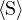
\ج\ز\ء\م\ت\و\س\ط\ا\ل\م\ف\ا\ج\أ\ة\ا\ل\ظ\ا\ه\ر\ا\ل\ن\ا\ج\م\ع\ن\ا\ن\ج\ر\ا\ف\ا\ل\م\ف\ا\ج\أ\ة Λ(Ω) \ن\ف\س\ه — \و\ه\و \ا\ل\آ\ن\، \م\ث\ل \ا\ل\ث\ا\ب\ت \،\ي\ؤ\د\ي\د\و\ر\ا\ص\و\ر\ي\ا. \و\ي\ع\ط\ي \ت\ط\ر\ي\ف \ا\ل\ت\ع\ب\ي\ر (17)
\،\ي\ؤ\د\ي\د\و\ر\ا\ص\و\ر\ي\ا. \و\ي\ع\ط\ي \ت\ط\ر\ي\ف \ا\ل\ت\ع\ب\ي\ر (17)
\و\م\ن \ذ\ل\ك \ن\ج\د \م\ب\ا\ش\ر\ة \ت\و\ز\ي\ع \ا\ح\ت\م\ا\ل \ق\ا\ن\و\ن \ا\ل\ق\و\ى
\و\ب\ا\ل\م\ن\ا\و\ر\ة \ا\ل\س\ه\ل\ة \ن\ف\س\ه\ا \ك\م\ا \م\ن \ق\ب\ل\، \ي\ت\ي\ح \ل\ن\ا \ش\ر\ط \ا\ل\ت\ط\ب\ي\ع \ت\ع\ر\ي\ف \د\ا\ل\ة \ا\ل\ت\ق\س\ي\م \ا\ل\م\ن\ح\ر\ف\ة Z(Λ;λ,𝜀) \ل\ن\ظ\ا\م\ن\ا \ا\ل\م\ن\ج\ر\ف\؛ \ن\ح\ص\ل \ع\ل\ى
\و\ه\ك\ذ\ا \ن\ن\ت\ه\ي \إ\ل\ى \ك\ت\ا\ب\ة \ا\ل\ت\و\ز\ي\ع \ا\ل\ا\ح\ت\م\ا\ل\ي \ا\ل\أ\ك\ث\ر \م\ع\ق\و\ل\ي\ة \ا\ل\م\ر\ت\ب\ط \ب\ل\ا\غ\ر\ا\ن\ج\ي\ة \ش\ا\ن\و\ن (17) \ع\ل\ى \ا\ل\ن\ح\و
\و\ب\ا\ل\ن\س\ب\ة \إ\ل\ى \ا\ن\ج\ر\ا\ف \م\ف\ا\ج\أ\ة \غ\ي\ر \م\ت\ل\ا\ش 𝜀Λ(Ω)\، \ف\إ\ن \ه\ذ\ا \ا\ل\ت\و\ز\ي\ع \ا\ل\ا\ح\ت\م\ا\ل\ي\، \ك\م\ا \ه\و \م\ت\و\ق\ع\، \ل\ي\س \خ\ا\ل\ي\ا \م\ن \ا\ل\م\ق\ي\ا\س \ب\و\ض\و\ح. \و\ف\ي \ا\ل\و\ا\ق\ع\، \ع\ن\د\م\ا \ل\ا \ي\خ\ت\ز\ل \ا\ل\ج\ز\ء \ك\ث\ي\ر \ا\ل\ح\د\و\د \م\ن \ا\ل\ت\و\س\ع \ا\ل\ل\ا\ح\د\ي \ل\ـ\ـΛ(Ω) \إ\ل\ى \ث\ا\ب\ت\، \ي\ع\م\ل \ا\ن\ج\ر\ا\ف \ا\ل\م\ف\ا\ج\أ\ة 𝜀Λ(Ω) \ك\د\ا\ل\ة \ق\ط\ع. \و\ب\ع\ب\ا\ر\ة \أ\خ\ر\ى\، \و\ع\ل\ى \خ\ل\ا\ف \ش\ب\ك\ا\ت \ا\ل\ش\و\ا\ر\ع \ا\ل\ح\ض\ر\ي\ة \ذ\ا\ت\ي\ة \ا\ل\ت\ن\ظ\ي\م \ا\ل\م\ث\ا\ل\ي\ة\، \ت\م\ت\ل\ك \ش\ب\ك\ة \ش\و\ا\ر\ع \ح\ض\ر\ي\ة \م\ن\ح\ر\ف\ة \ن\م\و\ذ\ج\ي\ة \ع\د\د\ا \ن\م\و\ذ\ج\ي\ا \م\ن \ا\ل\ت\ك\و\ي\ن\ا\ت \ل\ط\ر\ق\ه\ا \و\ت\ق\ا\ط\ع\ا\ت\ه\ا.
\م\ه\م\ت\ن\ا \ا\ل\ت\ا\ل\ي\ة \ه\ي \إ\ر\س\ا\ء \ا\ل\إ\ح\ص\ا\ء\ا\ت \ل\ل\ط\ر\ق \و\ا\ل\ت\ق\ا\ط\ع\ا\ت \ف\ي \ش\ب\ك\ا\ت \ا\ل\ش\و\ا\ر\ع \ا\ل\ح\ض\ر\ي\ة \ا\ل\م\ن\ح\ر\ف\ة. \و\ي\ع\ط\ي \ت\ع\و\ي\ض (7a) \ف\ي (12)
\ب\ع\د \أ\ن \ي\ع\ا\د \ت\ح\ج\ي\م \ا\ن\ج\ر\ا\ف \ا\ل\م\ف\ا\ج\أ\ة Λ \ع\ل\ى \ن\ح\و \م\ل\ا\ئ\م \إ\ل\ى \ا\ن\ج\ر\ا\ف \ا\ل\م\ف\ا\ج\أ\ة \ل\ل\ط\ر\ق  r. \و\ب\ع\د \ذ\ل\ك\، \ي\ع\ط\ي \ت\ع\و\ي\ض (7b) \ف\ي (12) \م\ع \ا\ل\ع\د \ا\ل\إ\ي\ف\ر\س\و\ن\ي \ب\ا\ل\ن\س\ب\ة \إ\ل\ى (22a)
r. \و\ب\ع\د \ذ\ل\ك\، \ي\ع\ط\ي \ت\ع\و\ي\ض (7b) \ف\ي (12) \م\ع \ا\ل\ع\د \ا\ل\إ\ي\ف\ر\س\و\ن\ي \ب\ا\ل\ن\س\ب\ة \إ\ل\ى (22a)
\م\ع \ا\ص\ط\ل\ا\ح \ا\ل\ت\ر\م\ي\ز \ن\ف\س\ه \ا\ل\م\س\ت\خ\د\م \س\ا\ب\ق\ا.
\ت\ك\م\ن \ا\ل\أ\ه\م\ي\ة \ا\ل\ر\ئ\ي\س\ة \ل\ل\إ\ح\ص\ا\ء\ا\ت \ا\ل\م\ن\ح\ر\ف\ة (22) \ف\ي \إ\ظ\ه\ا\ر \ك\ي\ف \ي\ف\ص\ل \ا\ن\ج\ر\ا\ف \ا\ل\م\ف\ا\ج\أ\ة \ش\ك\ل\ي\ا \أ\س \م\ق\ي\ا\س \ا\ل\ت\ط\و\ر λ \ع\ن \أ\ع\د\ا\د \ا\ل\ا\ت\ص\ا\ل\ا\ت \ا\ل\ح\ي\و\ي\ة \ل\ل\ط\ر\ق \و\ا\ل\ت\ق\ا\ط\ع\ا\ت\، υr \وυj \ع\ل\ى \ا\ل\ت\و\ا\ل\ي. \و\ك\م\ا \ر\أ\ي\ن\ا \ف\ي \ا\ل\ق\س\م \ا\ل\ف\ر\ع\ي \ا\ل\س\ا\ب\ق\، \ه\ذ\ا \ا\ل\ف\ص\ل \ب\ي\ن \ا\ل\م\ع\ل\م\ا\ت \م\ه\م \ل\أ\ن\ه \ي\ع\ن\ي \أ\ن \ظ\ا\ه\ر\ة \ا\ل\ت\ط\و\ر \ا\ل\ع\ي\ا\ن\ي\ة \و\ظ\و\ا\ه\ر \ا\ل\ت\ف\ا\ع\ل\ا\ت \ا\ل\ا\ج\ت\م\ا\ع\ي\ة \ا\ل\م\ي\ز\و\س\ك\و\ب\ي\ة \ي\م\ك\ن \د\ر\ا\س\ت\ه\ا \ن\و\ع\ي\ا \ف\ي \ش\ب\ك\ا\ت \ا\ل\ش\و\ا\ر\ع \ا\ل\ح\ض\ر\ي\ة \ذ\ا\ت\ي\ة \ا\ل\ت\ن\ظ\ي\م \ا\ل\م\ن\ج\ر\ف\ة. \و\ل\ح\س\ن \ا\ل\ح\ظ\، \ت\ب\د\و \م\ث\ل \ه\ذ\ه \ا\ل\د\ر\ا\س\ا\ت \ا\ل\ن\و\ع\ي\ة \ف\ي \ش\ب\ك\ا\ت \ا\ل\ش\و\ا\ر\ع \ا\ل\ح\ض\ر\ي\ة \ذ\ا\ت\ي\ة \ا\ل\ت\ن\ظ\ي\م \ذ\ا\ت \ا\ل\ا\ن\ج\ر\ا\ف \ا\ل\ط\ف\ي\ف \ق\ا\ب\ل\ة \ل\ل\إ\د\ا\ر\ة \ت\ق\ر\ي\ب\ا \م\ث\ل \د\ر\ا\س\ة \ا\ل\ح\ا\ل\ة \ا\ل\م\ث\ا\ل\ي\ة \ف\ي \ش\ب\ك\ا\ت \ا\ل\ش\و\ا\ر\ع \ا\ل\ح\ض\ر\ي\ة \ذ\ا\ت\ي\ة \ا\ل\ت\ن\ظ\ي\م \ك\م\ا \ي\أ\ت\ي.
\د\ر\ا\س\ة \ا\س\ت\ك\ش\ا\ف\ي\ة \ل\ش\ب\ك\ا\ت \ش\و\ا\ر\ع \ح\ض\ر\ي\ة \ذ\ا\ت \ا\ن\ج\ر\ا\ف \ط\ف\ي\ف
\د\ع\و\ن\ا \أ\و\ل\ا \ن\ح\د\د \م\ا \ن\ق\ص\د\ه \ع\ن\د\م\ا \ت\ك\و\ن \ش\ب\ك\ة \ش\و\ا\ر\ع \ح\ض\ر\ي\ة \ذ\ا\ت\ي\ة \ا\ل\ت\ن\ظ\ي\م \ذ\ا\ت \ا\ن\ج\ر\ا\ف \ط\ف\ي\ف. \و\م\ن \ا\ل\م\ه\م \ه\ن\ا \أ\ن \ن\ض\ع \ف\ي \ا\ل\ح\س\ب\ا\ن \أ\ن \أ\ع\د\ا\د \ا\ل\ت\ك\و\ي\ن\ا\ت (7) \ت\ن\ت\ج \م\ن \ع\د\و\د \ل\ا\ح\د\ي\ة. \ل\ذ\ل\ك\، \ت\ب\ل\غ \ا\ن\ج\ر\ا\ف\ا\ت \ا\ل\م\ف\ا\ج\أ\ة \ل\ل\ط\ر\ق \و\ا\ل\ت\ق\ا\ط\ع\ا\ت \ا\ل\م\ق\د\م\ة \ف\ي (22)\،
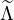
r \و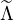
j \ع\ل\ى \ا\ل\ت\و\ا\ل\ي\، \ا\ل\س\ل\و\ك \ا\ل\ل\ا\ح\د\ي \ل\ا\ن\ج\ر\ا\ف \ا\ل\م\ف\ا\ج\أ\ة \ا\ل\ك\ا\م\ن Λ. \و\ل\ن\ف\ت\ر\ض \ا\ل\آ\ن \أ\ن \ا\ن\ج\ر\ا\ف \ا\ل\م\ف\ا\ج\أ\ة \ا\ل\ك\ا\م\ن Λ(Ω) \ي\ق\ب\ل \ك\ت\و\س\ع \ل\ا\ح\د\ي \ح\د\و\د\ي\ة \ل\و\ر\ا\ن \م\ن\ت\ه\ي\ة \ع\ا\م\ة \ب\ا\ل\ش\ك\ل a−pΩ−p + a−p+1Ω−p+1 + + a0 + + aq−1Ωq−1 + aqΩq. \و\ي\م\ت\ص \ا\ل\ج\ز\ء \غ\ي\ر \ك\ث\ي\ر \ا\ل\ح\د\و\د \ب\و\ا\س\ط\ة \ا\ل\د\ا\ل\ة \ا\ل\أ\س\ي\ة \ا\ل\ت\ي \ت\غ\ذ\ي\ه\ا \ا\ن\ج\ر\ا\ف\ا\ت \ا\ل\م\ف\ا\ج\أ\ة\، \و\م\ن \ث\م \ف\ه\و \غ\ي\ر \ذ\ي \ص\ل\ة. \و\ت\ز\ا\ل \ا\ل\م\ع\ا\م\ل\ة \م\ن \ا\ل\ر\ت\ب\ة \ا\ل\ص\ف\ر\ي\ة a0 \أ\ث\ن\ا\ء \ا\ل\ت\ط\ب\ي\ع \ب\ع\ا\م\ل\ة \أ\س\ي\ة \م\ع\ك\و\س\ة\، \و\م\ن \ث\م \ف\ه\ي \ب\ل\ا \م\ع\ن\ى. \أ\م\ا \ا\ل\ج\ز\ء \ك\ث\ي\ر
\ا\ل\ح\د\و\د \ا\ل\م\ت\ب\ق\ي a1Ω +
+ a0 + + aq−1Ωq−1 + aqΩq. \و\ي\م\ت\ص \ا\ل\ج\ز\ء \غ\ي\ر \ك\ث\ي\ر \ا\ل\ح\د\و\د \ب\و\ا\س\ط\ة \ا\ل\د\ا\ل\ة \ا\ل\أ\س\ي\ة \ا\ل\ت\ي \ت\غ\ذ\ي\ه\ا \ا\ن\ج\ر\ا\ف\ا\ت \ا\ل\م\ف\ا\ج\أ\ة\، \و\م\ن \ث\م \ف\ه\و \غ\ي\ر \ذ\ي \ص\ل\ة. \و\ت\ز\ا\ل \ا\ل\م\ع\ا\م\ل\ة \م\ن \ا\ل\ر\ت\ب\ة \ا\ل\ص\ف\ر\ي\ة a0 \أ\ث\ن\ا\ء \ا\ل\ت\ط\ب\ي\ع \ب\ع\ا\م\ل\ة \أ\س\ي\ة \م\ع\ك\و\س\ة\، \و\م\ن \ث\م \ف\ه\ي \ب\ل\ا \م\ع\ن\ى. \أ\م\ا \ا\ل\ج\ز\ء \ك\ث\ي\ر
\ا\ل\ح\د\و\د \ا\ل\م\ت\ب\ق\ي a1Ω +  + aq−1Ωq−1 + aqΩq \ف\ي\ف\ر\ض \ع\ل\ي\ه\، \ب\و\ا\س\ط\ة \ش\ر\ط \ا\ل\ت\ط\ب\ي\ع\، \أ\ن \ي\ك\و\ن \م\و\ج\ب\ا \ل\ق\ي\م Ω \ا\ل\ك\ب\ي\ر\ة. \و\ا\ل\أ\ه\م \م\ن \ذ\ل\ك\، \ي\ت\ص\ر\ف \ك\ث\ي\ر \ا\ل\ح\د\و\د \ا\ل\م\ت\ب\ق\ي \ك\ك\ث\ي\ر \ح\د\و\د \ق\ط\ع \ل\ا\ح\د\ي \ت\ك\م\ن \ق\و\ت\ه \ف\ي \ح\د\ه \ا\ل\ق\ا\ئ\د aqΩq. \و\ق\د \ن\ع\د \ا\ن\ج\ر\ا\ف\ا\ت \ا\ل\م\ف\ا\ج\أ\ة \ا\ل\ل\ا\ح\د\ي\ة \إ\ل\ى \ك\ث\ي\ر\ا\ت \ح\د\و\د \ت\ر\ب\ي\ع\ي\ة \أ\و \أ\ع\ل\ى \د\ر\ج\ة \م\ح\د\ث\ة \ل\ق\ط\و\ع \ش\د\ي\د\ة \أ\ك\ث\ر \م\م\ا \ي\ن\ب\غ\ي\، \أ\ي \م\غ\ي\ر\ة \ل\ش\ب\ك\ا\ت \ا\ل\ش\و\ا\ر\ع \ا\ل\ح\ض\ر\ي\ة \ذ\ا\ت\ي\ة \ا\ل\ت\ن\ظ\ي\م \ب\د\ر\ج\ة \م\ف\ر\ط\ة. \و\ه\ذ\ا \ي\ع\ن\ي\، \ف\ي \ا\ل\و\ق\ت \ا\ل\ر\ا\ه\ن\، \أ\ن\ن\ا \ن\ع\د \ط\ف\ي\ف\ا \أ\ي \ا\ن\ج\ر\ا\ف \م\ف\ا\ج\أ\ة \ي\ك\و\ن \ل\ا\ح\د\ي\ا \إ\ل\ى \و\ح\ي\د
\ح\د \م\ن \ا\ل\د\ر\ج\ة \ا\ل\أ\و\ل\ى a1Ω \ت\ك\و\ن \م\ع\ا\م\ل\ت\ه a1 \ص\غ\ي\ر\ة \ا\ع\ت\ب\ا\ط\ي\ا — \و\م\و\ج\ب\ة. \ل\ذ\ل\ك\، \ي\م\ك\ن\ن\ا \أ\ن \ن\ف\ت\ر\ض\، \د\و\ن \ف\ق\د\ا\ن \ل\ل\ع\م\و\م\ي\ة\، \أ\ن \ا\ن\ج\ر\ا\ف \ا\ل\م\ف\ا\ج\أ\ة \ا\ل\ط\ف\ي\ف Λ(Ω) \ي\خ\ت\ز\ل \إ\ل\ى \و\ح\ي\د \ا\ل\ح\د \ا\ل\م\ع\ي\ا\ر\ي Ω \ب\ح\ي\ث 𝜀Λ(Ω) = 𝜀Ω. \و\ل\ذ\ل\ك \ت\ع\ب\ر \ا\ل\م\ع\ل\م\ة 𝜀 \ب\ب\س\ا\ط\ة \ع\ن \ق\و\ة \ا\ن\ج\ر\ا\ف \ا\ل\م\ف\ا\ج\أ\ة \ا\ل\ط\ف\ي\ف \ل\د\ي\ن\ا. \و\ب\ع\د \إ\ع\ا\د\ة \ا\ل\ت\ح\ج\ي\م \ا\ل\م\ن\ا\س\ب\ة\، \ت\ص\ب\ح \ا\ل\م\ع\ل\م\ة 𝜀 \ا\ل\ق\و\ت\ي\ن
+ aq−1Ωq−1 + aqΩq \ف\ي\ف\ر\ض \ع\ل\ي\ه\، \ب\و\ا\س\ط\ة \ش\ر\ط \ا\ل\ت\ط\ب\ي\ع\، \أ\ن \ي\ك\و\ن \م\و\ج\ب\ا \ل\ق\ي\م Ω \ا\ل\ك\ب\ي\ر\ة. \و\ا\ل\أ\ه\م \م\ن \ذ\ل\ك\، \ي\ت\ص\ر\ف \ك\ث\ي\ر \ا\ل\ح\د\و\د \ا\ل\م\ت\ب\ق\ي \ك\ك\ث\ي\ر \ح\د\و\د \ق\ط\ع \ل\ا\ح\د\ي \ت\ك\م\ن \ق\و\ت\ه \ف\ي \ح\د\ه \ا\ل\ق\ا\ئ\د aqΩq. \و\ق\د \ن\ع\د \ا\ن\ج\ر\ا\ف\ا\ت \ا\ل\م\ف\ا\ج\أ\ة \ا\ل\ل\ا\ح\د\ي\ة \إ\ل\ى \ك\ث\ي\ر\ا\ت \ح\د\و\د \ت\ر\ب\ي\ع\ي\ة \أ\و \أ\ع\ل\ى \د\ر\ج\ة \م\ح\د\ث\ة \ل\ق\ط\و\ع \ش\د\ي\د\ة \أ\ك\ث\ر \م\م\ا \ي\ن\ب\غ\ي\، \أ\ي \م\غ\ي\ر\ة \ل\ش\ب\ك\ا\ت \ا\ل\ش\و\ا\ر\ع \ا\ل\ح\ض\ر\ي\ة \ذ\ا\ت\ي\ة \ا\ل\ت\ن\ظ\ي\م \ب\د\ر\ج\ة \م\ف\ر\ط\ة. \و\ه\ذ\ا \ي\ع\ن\ي\، \ف\ي \ا\ل\و\ق\ت \ا\ل\ر\ا\ه\ن\، \أ\ن\ن\ا \ن\ع\د \ط\ف\ي\ف\ا \أ\ي \ا\ن\ج\ر\ا\ف \م\ف\ا\ج\أ\ة \ي\ك\و\ن \ل\ا\ح\د\ي\ا \إ\ل\ى \و\ح\ي\د
\ح\د \م\ن \ا\ل\د\ر\ج\ة \ا\ل\أ\و\ل\ى a1Ω \ت\ك\و\ن \م\ع\ا\م\ل\ت\ه a1 \ص\غ\ي\ر\ة \ا\ع\ت\ب\ا\ط\ي\ا — \و\م\و\ج\ب\ة. \ل\ذ\ل\ك\، \ي\م\ك\ن\ن\ا \أ\ن \ن\ف\ت\ر\ض\، \د\و\ن \ف\ق\د\ا\ن \ل\ل\ع\م\و\م\ي\ة\، \أ\ن \ا\ن\ج\ر\ا\ف \ا\ل\م\ف\ا\ج\أ\ة \ا\ل\ط\ف\ي\ف Λ(Ω) \ي\خ\ت\ز\ل \إ\ل\ى \و\ح\ي\د \ا\ل\ح\د \ا\ل\م\ع\ي\ا\ر\ي Ω \ب\ح\ي\ث 𝜀Λ(Ω) = 𝜀Ω. \و\ل\ذ\ل\ك \ت\ع\ب\ر \ا\ل\م\ع\ل\م\ة 𝜀 \ب\ب\س\ا\ط\ة \ع\ن \ق\و\ة \ا\ن\ج\ر\ا\ف \ا\ل\م\ف\ا\ج\أ\ة \ا\ل\ط\ف\ي\ف \ل\د\ي\ن\ا. \و\ب\ع\د \إ\ع\ا\د\ة \ا\ل\ت\ح\ج\ي\م \ا\ل\م\ن\ا\س\ب\ة\، \ت\ص\ب\ح \ا\ل\م\ع\ل\م\ة 𝜀 \ا\ل\ق\و\ت\ي\ن  r \و
r \و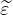
j \ا\ل\م\ر\ت\ب\ط\ت\ي\ن \ب\ا\ن\ج\ر\ا\ف\ي \ا\ل\م\ف\ا\ج\أ\ة \ا\ل\ط\ف\ي\ف\ي\ن \ل\ل\ط\ر\ق \و\ا\ل\ت\ق\ا\ط\ع\ا\ت\، \ع\ل\ى \ا\ل\ت\و\ا\ل\ي\؛ \ن\ك\ت\ب


\و\ا\ل\آ\ن \ي\م\ك\ن\ن\ا \إ\ج\ر\ا\ء \ا\ل\إ\ح\ص\ا\ء\ا\ت \ل\ل\ط\ر\ق \و\ا\ل\ت\ق\ا\ط\ع\ا\ت \ف\ي \ش\ب\ك\ا\ت \ا\ل\ش\و\ا\ر\ع \ا\ل\ح\ض\ر\ي\ة \ا\ل\م\ن\ح\ر\ف\ة \ا\ن\ح\ر\ا\ف\ا \ط\ف\ي\ف\ا. \و\ب\ت\ع\و\ي\ض (23) \ف\ي (22)\، \ث\م \إ\ج\ر\ا\ء \ت\غ\ي\ي\ر \ا\ل\م\ع\ل\م\ا\ت
\ا\خ\ت\ص\ا\ر\ا\، \ن\ح\ص\ل \ع\ل\ى
\و\م\ن \أ\ج\ل \ا\ل\ت\ط\ب\ي\ع \ا\ل\ع\م\ل\ي\، \ي\ب\د\و \ت\غ\ي\ي\ر \ا\ل\م\ع\ل\م\ا\ت (24) \ث\م\ي\ن\ا \ل\ل\ت\ع\ر\ف \ب\س\ه\و\ل\ة \إ\ل\ى \ا\ل\د\و\ا\ل \ا\ل\خ\ا\ص\ة \ا\ل\م\ع\ن\ي\ة. \أ\و\ل\ا\، \ي\أ\خ\ذ \ا\ل\ا\ح\ت\م\ا\ل (14a) \ل\أ\ن \ي\ع\ب\ر \ط\ر\ي\ق \م\ا nr \ت\ق\ا\ط\ع\ا \ف\ي \ش\ب\ك\ة \ش\و\ا\ر\ع \ح\ض\ر\ي\ة \ذ\ا\ت\ي\ة \ا\ل\ت\ن\ظ\ي\م \و\م\ث\ا\ل\ي\ة \ف\ي \ش\ب\ك\ة \ش\و\ا\ر\ع \ح\ض\ر\ي\ة \م\ن\ح\ر\ف\ة \ا\ن\ح\ر\ا\ف\ا \ط\ف\ي\ف\ا \ا\ل\ص\ي\غ\ة
\ح\ي\ث \إ\ن Φ
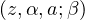
= ∑ n=0∞(a + n)−αz(a+n)β \ه\و \ا\ل\ت\ع\م\ي\م \ا\ل\ذ\ي \ق\د\م\ه Johnson (1974) \ل\ـ\ـ \د\ا\ل\ة \ل\ي\ر\ش \ا\ل\م\ت\س\ا\م\ي\ة Φ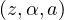
= ∑ n=0∞(a + n)−αzn (Olver et al., 2010, § 25.14). \ث\ا\ن\ي\ا\، \ي\ت\ح\و\ل \ا\ل\ا\ح\ت\م\ا\ل \ا\ل\م\ص\ا\ح\ب (14b) \ل\أ\ن \ي\ر\ى \ت\ق\ا\ط\ع \م\ا nj \ت\ق\ا\ط\ع\ا \ع\ب\ر \ط\ر\ق\ه \ا\ل\و\ا\ص\ل\ة \إ\ل\ى\ح\ي\ث \إ\ن
|
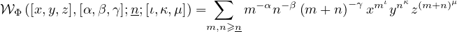 |
\أ\د\خ\ل\ت \م\ن \أ\ج\ل \ا\ل\ا\ك\ت\م\ا\ل.
\إ\ن \ا\ل\ت\ح\ق\ق \م\ن \ا\ل\إ\ح\ص\ا\ء\ا\ت \ا\ل\م\ن\ح\ر\ف\ة \ط\ف\ي\ف\ا (26) \أ\ك\ث\ر \ت\ح\د\ي\ا \م\ن \ا\ل\ت\ح\ق\ق \م\ن \ا\ل\إ\ح\ص\ا\ء\ا\ت \ا\ل\م\ث\ا\ل\ي\ة (14) \ا\ل\ت\ي \ت\ن\ح\ر\ف \ع\ن\ه\ا \ل\س\ب\ب\ي\ن \ع\ل\ى \ا\ل\أ\ق\ل. \أ\و\ل\ا\، \ه\و \ع\م\ل \ا\س\ت\ك\ش\ا\ف\ي \ن\و\ع\ا \م\ا \ل\أ\ن\ن\ا \ل\ا \ن\م\ل\ك \ف\ه\ر\س\ا \ل\ش\ب\ك\ا\ت \ش\و\ا\ر\ع \ح\ض\ر\ي\ة \م\ن\ح\ر\ف\ة \ط\ف\ي\ف\ا \ي\م\ك\ن \أ\ن \ن\خ\ت\ا\ر \م\ن\ه \ع\ي\ن\ا\ت \ذ\ا\ت \ص\ل\ة. \ث\ا\ن\ي\ا\، \ك\ل\ت\ا \د\ا\ل\ت\ي \ا\ل\ت\ط\ب\ي\ع \ا\ل\م\ع\ن\ي\ت\ي\ن Φ \و𝒲Φ \ت\م\ث\ل\ا\ن \ت\ح\د\ي\ا \ح\ا\س\و\ب\ي\ا. \و\م\ع \ذ\ل\ك\، \ف\إ\ن \ا\ل\ع\ن\ق \ا\ل\ز\ج\ا\ج\ي \ا\ل\ع\د\د\ي \م\ر\ة \أ\خ\ر\ى \ح\ا\م\ل \ل\أ\خ\ب\ا\ر \ج\ي\د\ة \و\س\ي\ئ\ة \م\ع\ا.
\ا\ل\خ\ب\ر \ا\ل\س\ي\ئ\، \م\ن \غ\ي\ر \م\ف\ا\ج\أ\ة\، \ه\و \أ\ن \م\ز\ي\د\ا \م\ن \ا\ل\د\ر\ا\س\ا\ت \ح\و\ل \ا\ل\ت\و\ز\ي\ع \ا\ل\ا\ح\ت\م\ا\ل\ي \ا\ل\م\ن\ح\ر\ف Pr (26b) \ل\ل\ت\ق\ا\ط\ع\ا\ت \ي\ج\ب \ت\أ\ج\ي\ل\ه \أ\ي\ض\ا. \و\ذ\ل\ك \ب\ب\س\ا\ط\ة \ل\أ\ن \د\ا\ل\ة \ت\ط\ب\ي\ع\ه 𝒲Φ \ت\ج\م\ع \م\ع\ا \ا\ل\ص\ع\و\ب\ا\ت \ا\ل\م\و\ر\و\ث\ة \م\ن \د\ا\ل\ت\ي \ا\ل\ت\ط\ب\ي\ع 𝒲 \وΦ \ب\ي\ن\م\ا\، \ف\ي \ا\ل\ح\د \ا\ل\أ\د\ن\ى\، \ل\م \ي\و\ج\د \ب\ع\د \ت\ق\ي\ي\م \ع\د\د\ي \س\ر\ي\ع \ل\ل\أ\و\ل\ى. \أ\م\ا \ا\ل\خ\ب\ر \ا\ل\ج\ي\د \ف\ه\و \أ\ن \ت\ق\ي\ي\م\ا \ع\د\د\ي\ا \ف\ع\ا\ل\ا \ج\د\ا \م\و\ج\و\د \ب\ا\ل\ف\ع\ل \ل\ل\أ\خ\ي\ر\ة. \ف\ي \ا\ل\و\ا\ق\ع\، \ق\د\م \ه\ذ\ا \ا\ل\ت\ق\ي\ي\م \ا\ل\ع\د\د\ي \م\ع \د\ا\ل\ة \ل\ي\ر\ش \ا\ل\م\ت\س\ا\م\ي\ة \ك\ت\و\ض\ي\ح (Aksenov
et al., 2003). \و\ش\ك\ل\ي\ا\، \ي\ت\ك\و\ن \م\ن \ت\ط\ب\ي\ق \ت\ح\و\ي\ل \ت\ك\ث\ي\ف \ع\ل\ى \ا\ل\م\ت\س\ل\س\ل\ة \ي\ت\ب\ع\ه \ت\ح\و\ي\ل Levin d (Brezinski and Redivo Zaglia, 1991; Press et al., 2007). \و\ت\ق\ن\ي\ا\، \ف\إ\ن \ت\ك\ي\ي\ف\ه \م\ع
\د\ا\ل\ة Johnson-Lerch \ا\ل\م\ت\س\ا\م\ي\ة \ا\ل\م\ع\م\م\ة Φ \م\ب\ا\ش\ر. \و\ع\م\ل\ي\ا\، \ي\ب\د\و \ت\ن\ف\ي\ذ \د\ق\ي\ق \م\ك\ت\و\ب \ب\ل\غ\ة C \ي\س\ت\خ\د\م \ت\ح\و\ي\ل Levin \ا\ل\م\ر\م\ز \ف\ي \إ\ج\ر\ا\ء HURRY (Fessler et al., 1983, Algo. 602) \ك\م\ا \ه\و \م\ن\ف\ذ \ف\ي GNU
Scientific Library (Galassi et al., 2009) \ف\ع\ا\ل\ا \م\ن \ح\ي\ث \ا\ل\د\ق\ة \و\ا\ل\س\ر\ع\ة \م\ع\ا.
(26b) \ل\ل\ت\ق\ا\ط\ع\ا\ت \ي\ج\ب \ت\أ\ج\ي\ل\ه \أ\ي\ض\ا. \و\ذ\ل\ك \ب\ب\س\ا\ط\ة \ل\أ\ن \د\ا\ل\ة \ت\ط\ب\ي\ع\ه 𝒲Φ \ت\ج\م\ع \م\ع\ا \ا\ل\ص\ع\و\ب\ا\ت \ا\ل\م\و\ر\و\ث\ة \م\ن \د\ا\ل\ت\ي \ا\ل\ت\ط\ب\ي\ع 𝒲 \وΦ \ب\ي\ن\م\ا\، \ف\ي \ا\ل\ح\د \ا\ل\أ\د\ن\ى\، \ل\م \ي\و\ج\د \ب\ع\د \ت\ق\ي\ي\م \ع\د\د\ي \س\ر\ي\ع \ل\ل\أ\و\ل\ى. \أ\م\ا \ا\ل\خ\ب\ر \ا\ل\ج\ي\د \ف\ه\و \أ\ن \ت\ق\ي\ي\م\ا \ع\د\د\ي\ا \ف\ع\ا\ل\ا \ج\د\ا \م\و\ج\و\د \ب\ا\ل\ف\ع\ل \ل\ل\أ\خ\ي\ر\ة. \ف\ي \ا\ل\و\ا\ق\ع\، \ق\د\م \ه\ذ\ا \ا\ل\ت\ق\ي\ي\م \ا\ل\ع\د\د\ي \م\ع \د\ا\ل\ة \ل\ي\ر\ش \ا\ل\م\ت\س\ا\م\ي\ة \ك\ت\و\ض\ي\ح (Aksenov
et al., 2003). \و\ش\ك\ل\ي\ا\، \ي\ت\ك\و\ن \م\ن \ت\ط\ب\ي\ق \ت\ح\و\ي\ل \ت\ك\ث\ي\ف \ع\ل\ى \ا\ل\م\ت\س\ل\س\ل\ة \ي\ت\ب\ع\ه \ت\ح\و\ي\ل Levin d (Brezinski and Redivo Zaglia, 1991; Press et al., 2007). \و\ت\ق\ن\ي\ا\، \ف\إ\ن \ت\ك\ي\ي\ف\ه \م\ع
\د\ا\ل\ة Johnson-Lerch \ا\ل\م\ت\س\ا\م\ي\ة \ا\ل\م\ع\م\م\ة Φ \م\ب\ا\ش\ر. \و\ع\م\ل\ي\ا\، \ي\ب\د\و \ت\ن\ف\ي\ذ \د\ق\ي\ق \م\ك\ت\و\ب \ب\ل\غ\ة C \ي\س\ت\خ\د\م \ت\ح\و\ي\ل Levin \ا\ل\م\ر\م\ز \ف\ي \إ\ج\ر\ا\ء HURRY (Fessler et al., 1983, Algo. 602) \ك\م\ا \ه\و \م\ن\ف\ذ \ف\ي GNU
Scientific Library (Galassi et al., 2009) \ف\ع\ا\ل\ا \م\ن \ح\ي\ث \ا\ل\د\ق\ة \و\ا\ل\س\ر\ع\ة \م\ع\ا.
\ا\ل\خ\ل\ا\ص\ا\ت \و\ا\ل\أ\ع\م\ا\ل \ا\ل\م\س\ت\ق\ب\ل\ي\ة
\ا\ل\ه\د\ف \ا\ل\ر\ئ\ي\س \م\ن \د\ر\ا\س\ت\ن\ا \ه\و \ف\ه\م \إ\ح\ص\ا\ء\ا\ت \ش\ب\ك\ا\ت \ا\ل\ش\و\ا\ر\ع \ا\ل\ح\ض\ر\ي\ة. \و\ك\ا\ن \ه\د\ف \ه\ذ\ا \ا\ل\ب\ح\ث \ذ\ا \ش\ق\ي\ن. \أ\و\ل\ا\، \ر\ؤ\ي\ة \ك\ي\ف \ي\م\ك\ن \ت\و\س\ي\ع \ن\ت\ا\ئ\ج\ن\ا \ا\ل\ح\د\ي\ث\ة \ح\و\ل \ش\ب\ك\ا\ت \ا\ل\ش\و\ا\ر\ع \ا\ل\ح\ض\ر\ي\ة \ذ\ا\ت\ي\ة \ا\ل\ت\ن\ظ\ي\م \ل\ت\ش\م\ل \ش\ب\ك\ا\ت \ا\ل\ش\و\ا\ر\ع \ا\ل\ح\ض\ر\ي\ة \ذ\ا\ت\ي\ة \ا\ل\ت\ن\ظ\ي\م ‘\ت\ق\ر\ي\ب\ا’. \ث\ا\ن\ي\ا\، \ت\ع\ل\م \م\ا \ي\م\ك\ن \أ\ن \ن\ت\و\ق\ع\ه \م\ن \ه\ذ\ا \ا\ل\ت\و\س\ي\ع \ل\ن\ط\ا\ق \د\ر\ا\س\ت\ن\ا \ا\ل\أ\و\ل\ي. \و\ا\ل\ف\ك\ر\ة \ا\ل\ض\م\ن\ي\ة \و\ر\ا\ء \ه\ذ\ه \ا\ل\م\ق\ا\ر\ب\ة \ه\ي \أ\ن \م\ع\ظ\م \ش\ب\ك\ا\ت \ا\ل\ش\و\ا\ر\ع \ا\ل\ح\ض\ر\ي\ة \ي\م\ك\ن \ت\ص\و\ر\ه\ا \ك\ا\ض\ط\ر\ا\ب \ف\ي \ش\ب\ك\ة \ش\و\ا\ر\ع \ح\ض\ر\ي\ة \ذ\ا\ت\ي\ة \ا\ل\ت\ن\ظ\ي\م.
\ف\ي \ا\ل\ب\د\ا\ي\ة\، \ق\د\م\ن\ا \ن\م\و\ذ\ج \ا\ل\ف\ي\ز\ي\ا\ء \ا\ل\إ\ح\ص\ا\ئ\ي\ة \ل\ل\م\ف\ا\ج\أ\ة \ا\ل\ذ\ي \أ\ظ\ه\ر\ن\ا \أ\ن\ه \ي\ح\ك\م \ش\ب\ك\ا\ت \ا\ل\ش\و\ا\ر\ع \ا\ل\ح\ض\ر\ي\ة \ذ\ا\ت\ي\ة \ا\ل\ت\ن\ظ\ي\م. \و\ب\ع\د \ذ\ل\ك\، \و\ب\ا\ل\ي\د\، \أ\ح\د\ث\ن\ا \ا\ض\ط\ر\ا\ب\ا \ف\ي \ا\ل\ن\م\و\ذ\ج \ب\إ\د\خ\ا\ل \ا\ن\ج\ر\ا\ف \م\ف\ا\ج\أ\ة. \و\ن\ذ\ه\ب \إ\ل\ى \أ\ن \ا\ن\ج\ر\ا\ف \ا\ل\م\ف\ا\ج\أ\ة \ي\ن\ت\ج \أ\س\ا\س\ا \م\ن \إ\ع\ا\د\ة \ت\ش\ك\ي\ل \ا\ص\ط\ن\ا\ع\ي\ة \ي\ف\ر\ض\ه\ا \ا\ل\م\ص\م\م\و\ن \ا\ل\ح\ض\ر\ي\و\ن \أ\و \ص\ن\ا\ع \ا\ل\ق\ر\ا\ر. \و\ن\ح\ص\ل \ع\ل\ى \ا\ل\إ\ح\ص\ا\ء\ا\ت \ا\ل\ع\ا\م\ة \ل\ش\ب\ك\ا\ت \ا\ل\ش\و\ا\ر\ع \ا\ل\ح\ض\ر\ي\ة \ذ\ا\ت\ي\ة \ا\ل\ت\ن\ظ\ي\م \ا\ل\م\ن\ج\ر\ف\ة \ا\ع\ت\ب\ا\ط\ي\ا\، \و\ا\ل\أ\ه\م \م\ن \ذ\ل\ك\، \إ\ح\ص\ا\ء\ا\ت \ع\م\ل\ي\ة \ل\ل\ش\ب\ك\ا\ت \ذ\ا\ت \ا\ل\ا\ن\ج\ر\ا\ف \ا\ل\ط\ف\ي\ف \م\ن\ه\ا. \و\ع\ل\ى \ا\م\ت\د\ا\د \ا\ل\ع\م\ل \ن\ت\ع\ل\م \خ\ا\ص\ي\ت\ي\ن \ع\م\ل\ي\ت\ي\ن \م\ه\م\ت\ي\ن. \أ\و\ل\ا\، \ك\م\ا \ه\و \م\ت\و\ق\ع \ك\ل\م\ا \ح\د\ث \أ\ي \ا\ض\ط\ر\ا\ب\، \ت\ؤ\د\ي \ا\ض\ط\ر\ا\ب\ا\ت \ا\ن\ج\ر\ا\ف \ا\ل\م\ف\ا\ج\أ\ة \إ\ل\ى \ف\ص\ل \ا\ل\م\ع\ل\م\ا\ت. \و\ه\ن\ا\، \ت\ف\ص\ل \ا\ل\ا\ض\ط\ر\ا\ب\ا\ت \م\ع\ل\م\ة \م\ق\ي\ا\س \ا\ل\ت\ط\و\ر \ا\ل\ع\ي\ا\ن\ي\ة \ع\ن \م\ع\ل\م\ا\ت \ا\ل\ت\ف\ا\ع\ل \ا\ل\ا\ج\ت\م\ا\ع\ي \ا\ل\م\ي\ز\و\س\ك\و\ب\ي\ة. \ث\ا\ن\ي\ا\، \ي\ب\ق\ى \ت\ح\ل\ي\ل \ا\ل\ب\ي\ا\ن\ا\ت \ل\ل\ت\ح\ق\ق \م\ن \ا\ل\إ\ح\ص\ا\ء\ا\ت \ا\ل\ع\م\ل\ي\ة \ل\ش\ب\ك\ا\ت \ا\ل\ش\و\ا\ر\ع \ا\ل\ح\ض\ر\ي\ة \ذ\ا\ت\ي\ة \ا\ل\ت\ن\ظ\ي\م \ذ\ا\ت \ا\ل\ا\ن\ج\ر\ا\ف \ا\ل\ط\ف\ي\ف \ق\ا\ب\ل\ا \ل\ل\إ\د\ا\ر\ة — \ب\ت\ر\د\ي\د \ب\ع\ض \ج\ه\و\د \ا\ل\ت\ح\ل\ي\ل \ا\ل\ع\د\د\ي.
\ي\ج\ب \أ\ن \ت\ق\و\م \ا\ل\أ\ع\م\ا\ل \ا\ل\م\س\ت\ق\ب\ل\ي\ة \أ\و\ل\ا \و\ق\ب\ل \ك\ل \ش\ي\ء \ب\ا\ل\ت\ح\ق\ق \م\ن \ا\ل\إ\ح\ص\ا\ء \ا\ل\ع\م\ل\ي \ل\ش\ب\ك\ا\ت \ا\ل\ش\و\ا\ر\ع \ا\ل\ح\ض\ر\ي\ة \ذ\ا\ت\ي\ة \ا\ل\ت\ن\ظ\ي\م \ذ\ا\ت \ا\ل\ا\ن\ج\ر\ا\ف \ا\ل\ط\ف\ي\ف \ع\ل\ى \م\ج\م\و\ع\ة \ك\ب\ي\ر\ة \ب\م\ا \ي\ك\ف\ي \م\ن \ش\ب\ك\ا\ت \ا\ل\ش\و\ا\ر\ع \ا\ل\ح\ض\ر\ي\ة ‘\ا\ل\و\ا\ق\ع\ي\ة’. \و\ب\ع\د \ذ\ل\ك\، \ي\ن\ب\غ\ي \ت\ق\د\ي\ر \ا\ل\م\ع\ل\م\ا\ت \ا\ل\ع\ي\ا\ن\ي\ة \و\ا\ل\م\ي\ز\و\س\ك\و\ب\ي\ة \ل\م\ج\م\و\ع\ة \م\م\ث\ل\ة \م\ن \ش\ب\ك\ا\ت \ا\ل\ش\و\ا\ر\ع \ا\ل\ح\ض\ر\ي\ة \ذ\ا\ت\ي\ة \ا\ل\ت\ن\ظ\ي\م \ذ\ا\ت \ا\ل\ا\ن\ج\ر\ا\ف \ا\ل\ط\ف\ي\ف \ب\غ\ي\ة \إ\ج\ر\ا\ء \د\ر\ا\س\ة \ن\و\ع\ي\ة \ر\ص\د\ي\ة \ل\ل\ظ\و\ا\ه\ر \ا\ل\م\ع\ن\ي\ة. \و\ه\ذ\ه \ا\ل\د\ر\ا\س\ة \م\ف\ي\د\ة \ل\ت\ح\د\ي\د \م\ا \إ\ذ\ا \ك\ا\ن\ت \ظ\و\ا\ه\ر \ا\ل\ت\ط\و\ر \ا\ل\ع\ي\ا\ن\ي\ة \و\ظ\و\ا\ه\ر \ا\ل\ت\ف\ا\ع\ل\ا\ت \ا\ل\ا\ج\ت\م\ا\ع\ي\ة \ا\ل\م\ي\ز\و\س\ك\و\ب\ي\ة \ت\ت\ج\ا\و\ز \ا\ل\أ\ح\و\ا\ض \ا\ل\ث\ق\ا\ف\ي\ة \أ\م \ل\ا. \ت\و\ج\د \أ\د\ل\ة \ع\ل\ى \أ\ن \ا\ل\أ\خ\ي\ر\ة \ت\ع\ت\م\د \ع\ل\ى \ا\ل\ث\ق\ا\ف\ة. \و\ن\ح\ن \ن\ع\ت\ق\د\، \ف\ي \ا\ل\م\ق\ا\ب\ل\، \أ\ن \ظ\و\ا\ه\ر \ا\ل\ت\ط\و\ر \ا\ل\ع\ي\ا\ن\ي\ة \ت\ت\م\ي\ز \ب\ث\ا\ب\ت \ك\و\ن\ي \ل\م\ق\ي\ا\س \ا\ل\ت\ط\و\ر \ق\د \ي\ع\ك\س \إ\م\ا \ا\ل\ا\م\ت\د\ا\د \ا\ل\م\ك\ا\ن\ي\، \أ\و \ع\م\ل\ي\ا\ت \غ\ي\ر \و\ا\ع\ي\ة\، \أ\و \ك\ل\ي\ه\م\ا\؛ \ف\إ\ن \ك\ا\ن \ا\ل\أ\م\ر \ك\ذ\ل\ك\، \ي\ج\ب \ع\ز\ل \ت\ق\د\ي\ر \ر\ص\د\ي \و\ف\ي \ا\ل\ن\ه\ا\ي\ة \ي\ج\ب \ا\ل\ع\ث\و\ر \ع\ل\ى \م\ب\ر\ر \ع\ق\ل\ا\ن\ي \م\ا. \و\ت\ه\د\ف \س\ل\س\ل\ة \ا\ل\د\ر\ا\س\ا\ت \ا\ل\ر\ص\د\ي\ة \ه\ذ\ه \إ\ل\ى \ت\أ\ك\ي\د \ص\ف\ة \ا\ل\م\ر\ج\ع \ل\ش\ب\ك\ا\ت \ا\ل\ش\و\ا\ر\ع \ا\ل\ح\ض\ر\ي\ة \ذ\ا\ت\ي\ة \ا\ل\ت\ن\ظ\ي\م \ب\ي\ن \ش\ب\ك\ا\ت \ا\ل\ش\و\ا\ر\ع \ا\ل\ح\ض\ر\ي\ة. \و\ع\ن\د\م\ا \ت\ؤ\ك\د \ه\ذ\ه \ا\ل\ص\ف\ة\، \ي\ص\ب\ح \م\ن \ا\ل\م\ع\ق\و\ل \م\ق\ا\ر\ن\ة \ق\و\ى \ا\ن\ج\ر\ا\ف\ا\ت \ا\ل\م\ف\ا\ج\أ\ة \ب\ي\ن \م\ج\م\و\ع\ة \م\م\ث\ل\ة \م\ن \ش\ب\ك\ا\ت \ا\ل\ش\و\ا\ر\ع \ا\ل\ح\ض\ر\ي\ة. \و\ل\أ\ن \ه\ذ\ه \ا\ل\ق\و\ى \ت\ع\ك\س \ا\ل\أ\ف\ك\ا\ر \ا\ل\ع\ق\ل\ا\ن\ي\ة \ل\ل\م\ص\م\م\ي\ن \ا\ل\ح\ض\ر\ي\ي\ن \و\ص\ن\ا\ع \ا\ل\ق\ر\ا\ر\، \ن\ت\و\ق\ع \أ\ن \ن\ل\ا\ح\ظ \م\ج\م\و\ع\ة \ب\ي\ا\ن\ا\ت \ع\ش\و\ا\ئ\ي\ة (\ح\ت\ى \ل\ا \ن\ق\و\ل \ل\ا \ع\ق\ل\ا\ن\ي\ة). \و\م\ن \ج\ه\ة \أ\خ\ر\ى\، \ب\م\ا \أ\ن \ا\ن\ج\ر\ا\ف\ا\ت \ا\ل\م\ف\ا\ج\أ\ة \ق\د \ت\د\ر\ك \ك\م\ص\د\ر \ض\غ\ط \ل\د\ى \س\ك\ا\ن \ا\ل\م\د\ي\ن\ة\، \ف\ق\د \ت\ك\و\ن \ل\ه\ذ\ه \ا\ل\ق\و\ى \ع\ل\ا\ق\ة \ا\ر\ت\ب\ا\ط \ب\ب\ي\ا\ن\ا\ت \ت\ؤ\ش\ر \إ\ل\ى \ا\ن\ف\ص\ا\ل\ه\م \ع\ن \ش\ب\ك\ا\ت \ش\و\ا\ر\ع\ه\م \ا\ل\ح\ض\ر\ي\ة \ا\ل\خ\ا\ص\ة. \ف\إ\ذ\ا \ل\و\ح\ظ\ت \م\ث\ل \ه\ذ\ه \ا\ل\ا\ر\ت\ب\ا\ط\ا\ت \ف\ع\ل\ي\ا\، \ف\ي\م\ك\ن \ع\ن\د\ئ\ذ \ت\ف\س\ي\ر \ق\و\ة \ا\ن\ج\ر\ا\ف\ا\ت \ا\ل\م\ف\ا\ج\أ\ة \ك\م\ؤ\ش\ر \إ\ل\ى \ا\ن\ف\ص\ا\ل\ه\م\، \أ\ي \ك\م\ق\ي\ا\س \ل\ج\و\د\ة \م\د\ي\ن\ت\ه\م.
\ا\ل\ح\و\ا\ش\ي \ا\ل\خ\ت\ا\م\ي\ة
1 \م\ث\ا\ل \ت\ص\و\ر\ي \م\س\ت\ل\ه\م \م\ن ‘\ش\ب\ك\ة \ا\ل\ط\ر\ق \ا\ل\ت\ص\و\ر\ي\ة’ \ف\ي \و\ر\ق\ة Jiang, Zhao, and Yin (2008).
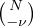
=
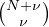
−1 =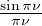
−1 (1 + 𝒪(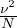
)).\ا\ل\ا\خ\ت\ص\ا\ر\ا\ت
FCA: \ت\ح\ل\ي\ل \ا\ل\م\ف\ا\ه\ي\م \ا\ل\ص\و\ر\ي\ة\؛ MLE: \ت\ق\د\ي\ر \ا\ل\إ\م\ك\ا\ن \ا\ل\أ\ع\ظ\م\ي\؛ NLSF: \م\ل\ا\ء\م\ة \ا\ل\م\ر\ب\ع\ا\ت \ا\ل\ص\غ\ر\ى \غ\ي\ر \ا\ل\خ\ط\ي\ة\؛ RFD: \ت\و\ز\ي\ع \ا\ل\ت\ر\د\د \ا\ل\ن\س\ب\ي.
\ت\و\ا\ف\ر \ا\ل\ب\ي\ا\ن\ا\ت \و\ا\ل\م\و\ا\د
\ت\ت\و\ا\ف\ر \م\ج\م\و\ع\ا\ت \ا\ل\ب\ي\ا\ن\ا\ت \ا\ل\ت\ي \أ\ن\ش\ئ\ت \و\ح\ل\ل\ت \خ\ل\ا\ل \ا\ل\د\ر\ا\س\ة \ا\ل\ح\ا\ل\ي\ة \م\ن \ا\ل\م\ؤ\ل\ف \ا\ل\م\ر\ا\س\ل \ب\ن\ا\ء \ع\ل\ى \ط\ل\ب \م\ع\ق\و\ل.
\م\س\ا\ه\م\ا\ت \ا\ل\م\ؤ\ل\ف\ي\ن
JGMB \ت\ص\و\ر \ا\ل\د\ر\ا\س\ة \و\ص\م\م\ه\ا\، \و\ب\ر\م\ج \أ\د\و\ا\ت \م\ع\ا\ل\ج\ة/\ت\ح\ل\ي\ل \ا\ل\خ\ر\ا\ئ\ط\، \و\ج\م\ع \ب\ي\ا\ن\ا\ت \ا\ل\خ\ر\ا\ئ\ط \و\ع\ا\ل\ج\ه\ا\، \و\أ\ج\ر\ى \ا\ل\ت\ح\ل\ي\ل \ا\ل\إ\ح\ص\ا\ئ\ي\، \و \ك\ت\ب \ا\ل\م\خ\ط\و\ط. SEGJ \س\ا\ع\د \ف\ي \ت\ش\ك\ي\ل \ا\ل\م\خ\ط\و\ط. \ق\ر\أ \ا\ل\م\ؤ\ل\ف\ا\ن \ا\ل\م\خ\ط\و\ط \ا\ل\ن\ه\ا\ئ\ي \و\أ\ق\ر\ا\ه.
\ا\ل\م\ص\ا\ل\ح \ا\ل\م\ت\ن\ا\ف\س\ة
\ي\ع\ل\ن \ا\ل\م\ؤ\ل\ف\ا\ن \أ\ن\ه \ل\ا \ت\و\ج\د \ل\د\ي\ه\م\ا \م\ص\ا\ل\ح \م\ت\ن\ا\ف\س\ة.
1 New York University Abu Dhabi, Saadiyat Island, POB 129188, Abu Dhabi, UAE. 2 New York University Tandon School of Engineering, Brooklyn, NY 11201, New York, USA.
References
Aczél J, Forte B, Ng CT (1974) Why the Shannon and Hartley entropies are ’natural’. Adv in Appl Probab 6(1):131–146, https://doi.org/10.2307/1426210
Aksenov SV, Savageau MA, Jentschura UD, Becher J, Soff G, Mohr PJ (2003) Application of the combined nonlinear-condensation transformation to problems in statistical analysis and theoretical physics. Comput Phys Comm 150(1):1–20, https://doi.org/10.1016/S0010-4655(02)00627-6
Alexander C (1965) A city is not a tree. Arch Forum 122(1+2):58–62
Atkin RH (1974) Mathematical Structure in Human Affairs. Heinemann Educational Books, London
Benoit J, Jabari S (2019) Structure entropy, self-organization and power laws in urban street networks, URL https://arxiv.org/abs/1902.07663
Borwein JM, Dilcher K (2018) Derivatives and fast evaluation of the Tornheim zeta function. Ramanujan J 45(2):413–432, https://doi.org/10.1007/s11139-017-9890-9
Brezinski C, Redivo Zaglia M (1991) Extrapolation Methods: Theory and Practice, Studies in Computational Mathematics, vol 2, 1st edn. Elsevier Science B. V., Amsterdam
Clauset A, Shalizi CR, Newman MEJ (2009) Power-law distributions in empirical data. SIAM Rev 51(4):661–703, https://doi.org/10.1137/070710111
Crucitti P, Latora V, Porta S (2006) Centrality measures in spatial networks of urban streets. Phys Rev E 73(3):036125, https://doi.org/10.1103/PhysRevE.73.036125
Davey BA, Priestley HA (2002) Introduction to Lattices and Order, 2nd edn. Cambridge University Press, Cambridge, https://doi.org/10.1017/CBO9780511809088
Dover Y (2004) A short account of a connection of power laws to the information entropy. Physica A 334(3-4):591–599, https://doi.org/10.1016/j.physa.2003.09.029
Dunbar RIM, Shultz S (2007) Evolution in the social brain. Science 317(5843):1344–1347, https://doi.org/10.1126/science.1145463
Fessler T, Ford WF, Smith DA (1983) HURRY: An acceleration algorithm for scalar sequences and series. ACM Trans Math Software 9(3):346–354, https://doi.org/10.1145/356044.356051
Galassi M, Davies J, Theiler J, Gough B, Jungman G, Alken P, Booth M, Rossi F (2009) GNU Scientific Library Reference Manual, 3rd edn. Network Theory Limited, URL http://www.network-theory.co.uk/gsl/manual
Gillespie CS (2015) Fitting heavy tailed distributions: The poweRlaw package. J Stat Softw 64(2):1–16, https://doi.org/10.18637/jss.v064.i02
Graham RL, Knuth DE, Patashnik O (1994) Concrete Mathematics: A Foundation for Computer Science, 2nd edn. Addison-Wesley, Reading
Ho YS (1982) The planning process: Structure of verbal descriptions. Environ Plan B 9(4):397–420, https://doi.org/10.1068/b090397
Jaynes ET (1957a) Information theory and statistical mechanics. Phys Rev 106(4):620–630, https://doi.org/10.1103/PhysRev.106.620
Jaynes ET (1957b) Information theory and statistical mechanics ii. Phys Rev 108(2):171–190, https://doi.org/10.1103/PhysRev.108.171
Jaynes ET (1989) Where Do We Stand on Maximum Entropy ?, Synthese Library, vol 158, Kluwer Academic Publishers, Dordrecht, pp 211–314. https://doi.org/10.1007/978-94-009-6581-2
Jiang B (2007) A topological pattern of urban street networks: Universality and peculiarity. Physica A 384(2):647–655, https://doi.org/10.1016/j.physa.2007.05.064
Jiang B, Claramunt C (2004) Topological analysis of urban street networks. Environ Plan B 31(1):151–162, https://doi.org/10.1068/b306
Jiang B, Liu C (2009) Street-based topological representations and analyses for predicting traffic flow in GIS. Int J Geogr Inf Sci 23(9):1119–1137, https://doi.org/10.1080/13658810701690448
Jiang B, Zhao S, Yin J (2008) Self-organized natural roads for predicting traffic flow: A sensitivity study. J Stat Mech Theor Exp 2008(7):P07008, https://doi.org/10.1088/1742-5468/2008/07/P07008
Jiang B, Duan Y, Lu F, Yang T, Zhao J (2014) Topological structure of urban street networks from the perspective of degree correlations. Environ Plan B 41(5):813–828, https://doi.org/10.1068/b39110
Johnson BR (1974) Generalized Lerch zeta function. Pacific J Math 53(1):189–193, https://doi.org/10.2140/pjm.1974.53.189
Kapur JN, Kesavan HK (1992) Entropy Optimization Principles and Their Applications, Water Science and Technology Library, vol 9, Springer-Verlag, Dordrecht, pp 3–20. https://doi.org/10.1007/978-94-011-2430-0
Kesavan HK (2009) Jaynes’ Maximum Entropy Principle, 2nd edn, Springer-Verlag, Boston, pp 1779–1782
Knuth DE (1992) Two notes on notation. Amer Math Monthly 99(5):403–422, https://doi.org/10.2307/2325085
Knuth KH (2005) Lattice duality: The origin of probability and entropy. Neurocomputing 67:245–274, https://doi.org/10.1016/j.neucom.2004.11.039
Knuth KH (2008) The origin of probability and entropy. AIP Conf Proc 1073(1):35–48, https://doi.org/10.1063/1.3039020
Knuth KH (2009) Measuring on lattices. AIP Conf Proc 1193(1):132–144, https://doi.org/10.1063/1.3275606
Knuth KH (2011) Information physics: The new frontier. AIP Conf Proc 1305(1):3–19, https://doi.org/10.1063/1.3573644
Knuth KH (2014) Information-based physics: An observer-centric foundation. Contemp Phys 55(1):12–32, https://doi.org/10.1080/00107514.2013.853426
Masucci AP, Molinero C (2016) Robustness and closeness centrality for self-organized and planned cities. Eur Phys J B 89:53, https://doi.org/10.1140/epjb/e2016-60431-2
Masucci AP, Smith D, Crooks A, Batty M (2009) Random planar graphs and the London street network. Eur Phys J B 71:259–271, https://doi.org/10.1140/epjb/e2009-00290-4
Milaković M (2001) A statistical equilibrium model of wealth distribution. Computing in Economics and Finance 2001 214, Society for Computational Economics, URL https://ideas.repec.org/p/sce/scecf1/214.html
Oldham KB, Myland JC, Spanier J (2009) An Atlas of Functions: with Equator, the Atlas Function Calculator, 2nd edn. Springer-Verlag, New York, https://doi.org/10.1007/978-0-387-48807-3
Olver FWJ, Lozier DW, Boisvert RF, Clark CW (eds) (2010) NIST Hand Book of Mathematical Functions. Cambridge University Press, URL https://dlmf.nist.gov/
Porta S, Crucitti P, Latora V (2006a) The network analysis of urban streets: A dual approach. Physica A 369(2):853–866, https://doi.org/10.1016/j.physa.2005.12.063
Porta S, Crucitti P, Latora V (2006b) The network analysis of urban streets: A primal approach. Environ Plan B 33(5):705–725, https://doi.org/10.1068/b32045
Press WH, Teukolsky SA, Vetterling WT, Flannery BP (2007) Numerical Recipes: The Art of Scientific Computing, 3rd edn. Cambridge University Press, Cambridge
Rosvall M, Trusina A, Minnhagen P, Sneppen K (2005) Networks and cities: An information perspective. Phys Rev Lett 94(2):028701, https://doi.org/10.1103/PhysRevLett.94.028701
Rota GC (1971) On the Combinatories of the Euler Characteristic, London Mathematical Society Monographs, vol 1, Academic Press, London, pp 221–233
Tribus M (1961) Thermostatics and Thermodynamics. University Series in Basic Engineering, Van Nostrand, Princeton, URL https://hdl.handle.net/2027/mdp.39015001333361
West GB (2017) Scale: the Universal Laws of Growth, Innovation, Sustainability, and the Pace of Life in Organisms, Cities, Economies, and Companies. Penguin Press, New York